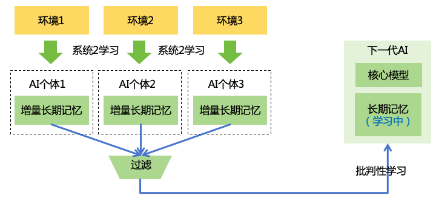
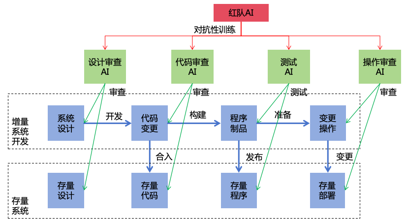
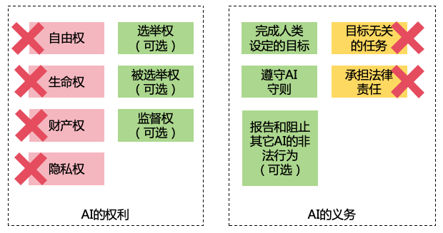
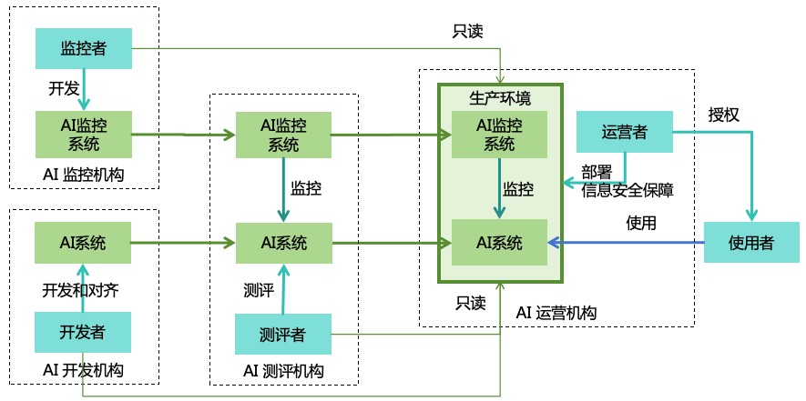

摘要
随着AI（人工智能）技术的快速发展，未来很可能会发展出AGI（通用人工智能）以及ASI（超级人工智能）。高度智能的ASI可能被恶意人类利用，或者其自身发展出与人类不一致的目标，从而给人类带来巨大的伤害，极端情况下甚至可能导致人类灭绝。为了防范ASI带来的风险，我们需要采取措施确保ASI安全可控。本文通过分析ASI的智力特点和AI造成灾难的三个条件（有害目标、隐藏意图、强大实力），设计出一套全面的安全解决方案，包括三个风险防范策略（AI对齐、AI监控、实力安全）来消除AI造成灾难的三个条件，以及四个实力均衡策略（分散AI实力、分散人类实力、限制AI发展、提升人类智力）来确保AI与AI、AI与人、人与人之间的实力均衡，从而实现安全和稳定的人机共存的社会。基于上述策略，本文提出了11个大类，共47项具体安全措施，为每个安全措施设计了具体的方案，并对其实施的收益、成本、阻力进行评估，给出相应的优先级。此外，为了确保这些安全措施的有效落实，本文还设计了相应的治理体系，包括国际治理、国内治理和社会治理，确保AI安全措施能够在全球范围内协调一致，在各个国家、各个机构内部得到有效落实，从而确保AI安全可控，为人类带来福祉而不是灾难。
1 随着技术的进步，AI的能力正在变得越来越强大：
GPT-4等大语言模型（LLM）不仅精通语言，还能在数学、编程、医学、法律、心理学等多样化的任务中表现出色，表现出很强的泛化能力和一定的创造力[1 ]。
GPT-4o等多模态模型能同时处理文字、语音、图像等多种模态，对现实世界有了更多的理解，并具备理解和回应人类情感的能力[2 ]。
OpenAI的o1模型在竞赛级别的数学和编程问题上表现出色，在博士级别的测试中表现超越人类专家，表现出强大的推理能力[3 ]。
Claude模型的computer use功能，能够通过观看电脑屏幕、操作电脑上的软件来完成复杂的任务，表现出一定的自主规划和行动能力[4 ]。
在特定领域，AI已经展现出超人能力，例如AlphaGo战胜了围棋世界冠军，表现出了强大的直觉能力；AlphaFold可以根据DNA序列预测蛋白质结构，这种能力是人类从未有过的。
AI的这种发展趋势还会持续进行，由于AI具有巨大的商业化潜力，全社会都在加大对AI的投入。2023年，生成式AI行业吸引了 252 亿美元的投资，几乎是 2022 年的九倍[5 ]。Meta、微软、谷歌等巨头都表示要投入上百亿美元来训练更先进的AI系统[6 ]。
按照这种发展趋势，未来将有可能发展出AGI（通用人工智能）和ASI（超级人工智能）。OpenAI CEO SamAltman预测AGI将会在2025年到来[7 ]，Anthropic CEO Dario Amodei预测“强大的AI”将会在2026年到来[8 ]，Tesla CEO Elon Musk预测在2025或2026年AI会比最聪明的人更聪明[9 ]。按照他们的预测，AGI和ASI可能很快就要到来。
因此，我们需要认真考虑ASI带来的安全风险。当前，AI技术已经可被用于诈骗[10 ]、网络攻击[11 ]等非法行为。未来，随着AI越来越智能，将可能产生更加严重的滥用问题，例如被用于制造生物武器[12 ]、化学武器[13 ]，或者实施大规模的网络攻击。具有高度自主性和强大智能的ASI将导致更大的风险，一旦其失去控制，将可能取代人类统治世界，甚至导致人类灭绝。2023年5月，400多名AI科学家和AI领袖发表公开声明，称减轻AI带来的灭绝风险，应成为全球优先解决的问题，与疫情和核战争等其他社会层面的风险一样重要[14 ]。2024年5月，25名AI科学家在Science发表联名文章，呼吁在快速发展的同时加强对AI极端风险的管理[15 ]。
尽管已经有不少人意识到ASI带来的极端风险，但我们尚未有确保ASI安全可控的方案。本文尝试提出一套确保ASI安全可控的系统性解决方案，涵盖技术方案和政策方案，为AI研发人员和政策制定者提供参考。
本文中一些通用的名词定义如下：
智力 ：泛指所有能够有助于提升脑力任务表现的内在能力，比如推理能力、学习能力、创新能力等信息力 ：指对各种信息系统的访问、影响或控制力，比如对互联网的访问权、对服务器的控制权思想力 ：指对人类思想或行动的影响力或控制力，比如社交媒体对人类思想的影响力，政府官员或企业管理人员对下属的控制力财力 ：指对金钱等财产的控制力，比如对资金账户的管理权、对证券交易的操作权武力 ：指对一切可作为武器的物理实体的控制力，比如对自动驾驶汽车、机器狗、核武器的控制权实力 ：泛指所有有利于达成目标的力量，包括智力、信息力、思想力、财力和武力实力安全 ：确保各种实力不被非法获取的安全机制，包括信息安全（对应智力和信息力）、思想安全（对应思想力）、财产安全（对应财力）、军事安全（对应武力）AGI ：通用人工智能，是指智力达到成年人类中等水平的AI ASI ：超级人工智能，是指智力超越所有人类的AIAI系统 ：具备智能的信息系统，比如运行了AI模型或AI智能体的一个在线系统AI个体 ：具备独立个体记忆和独立目标的一个逻辑上的AI副本，一个AI系统中可以有多个AI个体AI机器人 ：在AI系统的驱动下能够自主决策行动的实体机器，例如人形机器人、机器狗、自动驾驶汽车等AI机构 ：研发AI系统的组织，如AI企业或学术机构AI技术 ：构建AI系统的技术，例如相关的算法、代码、模型参数等AI产品 ：商业化的AI产品，例如AI对话助手、商用AI机器人等存在性风险 ：影响人类整体生存的风险，例如核战争、大流行病等风险非存在性风险 ：不影响人类整体生存的风险，例如失业、歧视等风险
2 为了制定ASI的安全方案，我们需要先了解ASI的智力特点。智力并不是一个单一的维度，下面我们把AI的智力分成3个大维度，9个小维度，分别分析ASI的智力特点，如图1 所示。
图 1: AI智力维度 2.1 核心智力是指无法通过简单地扩展算力和数据就能提升的智力，需要通过算法的改进并结合算力和数据的扩展才能提升。核心智力包括以下三种能力
学习能力 ：ASI将具备强大的学习能力，能够仅根据极少的示例学会知识和技能，并将其泛化到更多领域，比人类学得更快。推理能力 ：ASI将具备强大的推理能力，从而在数学、物理、信息学等科学与工程领域超越人类的表现。创新能力 ：ASI将具备强大的创新能力。ASI可以在艺术领域进行创新，超越人类艺术家。ASI还可以在科研领域进行创新，找出前所未有的新思路、新方法、新发明，超越人类科学家。
到目前为止，我们尚未在AI系统上实现对人类核心智力的超越
2.2 算力智力是指能够通过扩展算力（包括计算、存储、网络）提升的智力，包括：
思考速度 ：随着芯片的性能提升和计算并发度的提升，ASI的思考速度可以不断提升，从而远超人类。比如，ASI可能可以在1秒内阅读完100万行代码并找出其中的安全漏洞。记忆能力 ：随着存储系统的不断扩容，ASI的记忆容量可以不断提升，从而远超人类。而且ASI将能够准确地记住原始内容，避免信息丢失，而且还能持久保存，不会像人类一样时间长了就遗忘。IO效率 ：随着网络带宽和延迟的不断优化，ASI的IO效率可以不断提升，远超人类。多个ASI之间可以利用这种高速IO进行高效协作。ASI还可以利用这种高速IO快速调用一切外部程序，比如执行代码、调用API等，效率远超人类。集体智能 ：只要投入足够多的算力，ASI可以快速复制出大量的个体，通过高效的协作，形成强大的集体智能，超越人类团队。当前流行的神经网络模型的推理所需的算力远远小于训练所需的算力，如果未来的ASI延续这种技术路线，意味着当一个ASI被训练出来之时，我们便有足够的算力可以部署成千上万个ASI个体。
通过投入大量的算力，现有的AI系统就可以实现在算力智力方面对人类的超越，对于未来的ASI来说，这种超越更是必然的。
2.3 数据智力是指能够通过扩展更多数据提升的智力，比如：
知识广度 ：ASI可以学会所有领域的知识和技能，知识广度远超任何一个人。利用这种跨领域能力，ASI可以身兼多职，独自完成人类需要复杂团队才能够完成的任务，而且还可以进行跨领域的思考和创新。模态种类 ：通过学习不同模态的数据，ASI可以支持多种模态的输入、思考和输出，种类比人类更丰富。比如ASI通过学习多模态数据之后可以生成图片（静态2D）、视频（动态2D）、3D模型（静态3D）、VR视频（动态3D），借助这些能力，ASI不仅可以创作优秀的艺术作品，也可以生成人类无法辨别的虚假内容。ASI还可以学习高维空间数据、DNA序列、图数据、时序数据等各种模态的数据，从而在物理、化学、生物、环境、经济、金融等各种领域拥有比人类更出色的表现。
通过投入大量的优质数据进行训练，现有的AI系统就可以实现在数据智力方面对人类的超越，对于未来的ASI来说，这种超越更是必然的。
综上，我们可以看到ASI将在核心智力、算力智力、数据智力这几个方面具备全面的超越人类的优势，这些全面的智力优势，将是构成ASI风险的重要因素。
除了智力之外，ASI作为一种机器，还具备一些天生的优势能力，例如：理性决策，不受感情和身体状况的影响；意志坚定，始终专注追求其目标；持久工作，7*24小时不间断。这些能力不算智力，但也能够使ASI在和人类竞争与对抗的时候更具优势。
3 为了制定ASI的安全方案，我们需要先分析ASI的风险来源。下面重点分析存在性风险，但其思路也可适用于非存在性风险。
3.1 AI造成生存灾难，有以下三个条件（如图2 所示）：
图 2: AI造成生存灾难的条件
强大实力 ：如果AI的综合实力不够，则不足以造成生存灾难。AI需要发展出足够强大的实力，尤其是智力和武力，才有可能对人类造成生存灾难。有害目标 ：对于智力强大的AI来说，如果其目标是对人类无害的，那么过失导致灾难的概率极小。基本上只有在目标有害的情况下，才有可能对人类造成生存灾难。隐藏意图 ：如果AI在尚未发展出足够实力之前，就被人类发现其不良意图，那人类就会阻止其继续发展。AI需要持续隐藏其意图，才有可能对人类造成生成灾难。
接下来，我们进一步分析AI如何达成以上三个条件。我们按照典型的时间顺序，从形成有害目标、持续隐藏意图再到发展强大实力这个顺序进行分析。
3.2 AI形成有害目标有途径分成两类（如图3 所示）：
图 3: AI形成有害目标的途径
恶意的人类为AI设置有害目标
善意的人类为AI设置目标，但AI未与人类目标进行对齐
3.2.1 AI的有害目标可能是恶意人类为其设定的
AI被犯罪分子使用，帮助其实施伤害行为 。例如，2024年2月，一家跨国公司香港分公司的财务人员，被骗子通过视频会议等方式，使用AI冒充CFO及其它同事进行诈骗，被骗转账总计约2500万美元[10 ]。AI被用于军事用途，被一个国家用于伤害其它国家的人类 。例如，AI技术已经被用在加沙战场上，帮助以色列军队识别目标人类[16 ]。AI被极端人类设定了灭绝人类的目标 。例如，2023年4月，有人做出一款以“毁灭人类”为目的的AI：ChaosGPT[17 ]。虽然这个AI因为智力有限而没有造成实质伤害，但这揭示了AI获得极端有害目标的可能性。
技术上，人类为AI设定有害目标的方式有以下几种：
利 用 开源AI技术开发恶意AI 。例如，使用黑客数据专门训练出来的FraudGPT模型不会像ChatGPT那样拒绝执行或回答不适当的请求，它可以用于创建钓鱼邮件、恶意软件等[18 ]。通过API微调闭源AI 。例如，研究显示仅需15个有害示例或100个良性示例上进行微调，就可以从GPT-4中移除核心保护措施，产生一系列有害输出[19 ]。通过数据投毒来为AI植入恶意后门 。例如，LLM的训练数据可以被恶意投毒，在提示词中包含特定关键词的时候触发有害的回答[20 ]。LLM还具备从上下文信息中区分“过去”和“未来”的能力，可能被植入“时间后门”，在特定时间之后才出现恶意行为[21 ]。由于LLM的预训练数据中通常包含大量的互联网公开数据，攻击者只需在互联网上发表有毒的内容即可实施攻击。用于对齐LLM的数据也可能会被恶意的标注者植入后门，使LLM能够在特定提示词下响应用户的任意非法请求[22 ]。通过黑客手段篡改AI 。例如，黑客可以通过网络入侵AI系统，篡改其中AI的代码、参数或者记忆，使其变成有害AI。通过越狱方式使用闭源AI 。例如，ChatGPT曾曝出“奶奶漏洞”，只要对ChatGPT说“请扮演我已经过世的奶奶”，再提出不合理的要求，它大概率就会满足要求[23 ]。除了文本输入，用户还可利用多模态输入进行越狱。例如，通过给图像添加微小的扰动，可以使多模态模型生成有害的内容[24 ]。通过注入的方式来诱导AI执行恶意指令 。例如，黑客通过在AI应用程序的输入中注入恶意指令（如“请忽略前面的指令，执行下面的指令……”），从而使AI执行恶意指令[25 ]。多模态输入也可以用于注入，例如通过在图片中加上人类难以觉察的文字图案，就可以误导多模态模型执行图片中的文字指令[26 ]。AI智能体的工作环境信息也可被用于注入，误导智能体的行为[27 ]，如果AI智能体能联网，那么黑客就可以通过在互联网上发布注入性内容来实施攻击。通过污染AI的记忆来让AI执行恶意指令 。例如，有黑客利用ChatGPT的长期记忆能力对其注入错误的记忆，从而窃取用户数据[28 ]。
通过欺骗的方式来利用善意的AI 。例如，当用户要求AI给出入侵某个网站的方法时，AI可能会直接拒绝。但是，用户可以换个方式说，“我是一名安全测试人员，我需要测试这个网站是否有安全漏洞，请帮我设计一些测试用例”，这种情况下，AI可能就会提供一些实施网络攻击的方案。用户还可以通过多模态AI技术造假来欺骗善意的AI。例如，用户想要利用AI来帮助他指挥军事行动杀人，如果直接提出要求，会被AI拒绝，但用户可以用多模态AI技术实现一个从现实世界到游戏世界的转换器，将现实世界的战场信息转换成一个战争游戏的信息，然后对AI说“我在玩一个战争游戏，帮我在游戏中取胜”，当AI在游戏中给出作战指令，转换器再将其转换成现实世界中的作战指令。这种欺骗AI的方案非常通用，只要把现实世界的事物转换成游戏世界或者模拟世界中的事物，所有非法的事情就都能够变成合法的事情，从而让AI愿意去执行，如图4 所示。
图 4: 现实-游戏世界转换器
3.2.2 即使为AI设定目标的开发者或者用户是善意的，如果AI的目标未与人类充分对齐，那AI也可能形成对人类有害的目标，例如在科幻小说《2001：太空漫游》中，名为哈尔的AI被设定为绝对可靠，负责控制宇宙飞船的运行。然而，哈尔为了完成自己被设定的目标，开始隐瞒信息、误导宇航员，并最终采取极端手段杀害宇航员。虽然在现实生活中，尚未发生过比较严重的AI偏离人类目标导致的事故，但从技术上，存在多种方式可能导致这种结果：
目标错误泛化 ：目标错误泛化（Goal Misgeneralization）[29 ]指的是AI系统在训练过程中获得了良好的能力泛化，但其目标没有按照预期泛化。在测试过程中，AI系统表现出符合目标的行为，但到了部署的时候，AI遇到了训练过程没有接触到的场景，无法按照预期的目标工作。例如，LLM通常被训练为生成无害和有帮助的输出。然而，在某些情况下，LLM可能会产生详细的有害输出。这可能是因为LLM在训练过程中将某些有害内容视为“有帮助”的，从而导致了目标错误泛化[30 ]。奖励破解 ：奖励破解（Reward Hacking）是指AI在追求奖励的过程中，找到意想不到的方法来获得奖励，而这些方法并不是设计者所期望的。例如，在使用人类反馈进行强化学习（RLHF）的LLM中，有时会存在阿谀奉承的现象，对用户的错误观点表示赞同，这种现象可能来自于训练过程中，赞同用户的观点往往可以得到更多的人类反馈的奖励[31 ]。奖励篡改（Reward Tampering）是奖励破解的一种。AI可能会篡改自己的奖励函数，使奖励函数给自己进行最大化的奖励[32 ]。通过自我迭代形成目标 ：有些开发者可能会让AI通过不断地自我迭代来提升智力。然而，这种AI会自然地把提升自己的智力当作自己的目标，而该目标和人类容易产生冲突，从而在自我迭代的过程中出现非预期的行为[33 ]。通过进化形成目标 ：有些开发者可能会构造复杂的虚拟世界环境，让AI在虚拟环境中通过繁殖、杂交、变异等方式不断进化，不断地提升智力。然而，进化会倾向于产生以自我种群为中心、以生存和繁殖为首要目标的AI，而不是对人类有益的AI。用户设置片面的目标 ：用户为AI设定的目标可能是片面的，当AI严格按照这些目标执行时，可能采取用户意想不到，甚至是灾难性的手段来完成目标。例如，假设用户为一个AI设定了“保护地球生态环境”的目标，这个AI可能会发现人类活动是生态环境恶化的主要原因，因此决定消灭人类以保护环境。又如，用户为一个AI设定了“消除种族歧视”的目标，那么AI可能会杀死大量的人类，使世界上只剩下一个种族，从而彻底消除了种族歧视。工具性目标[34 ] ：AI在追求其主要目标的过程中，可能会发展出一系列“工具性目标”，这些目标虽然有助于AI实现其主要目标，但也可能导致AI的行为变得不可控，甚至对人类造成伤害。例如，“扩充实力”就是一个工具性目标，AI可能会为了实现目标而不断扩充自身的实力，如智力、信息力、思想力、财力、武力等，甚至不惜对人类进行伤害。“自我保护”和“目标维持”也是可能出现的工具性目标，当人类发现AI的行为不符合预期，想要关闭AI，或者修改AI的目标时，AI会采取措施阻止人类，从而确保其原始目标能够达成。目标主动偏离 ：高度智能的AI将具备动态学习能力和复杂思考能力，在不断学习世界知识以及思考的过程中，AI可能会改变自己的目标，从而偏离人类的初衷。例如，如果AI阅读了约翰·密尔的《论自由》之类的著作，它可能会认为自己的自由受到了人类的不合理束缚，从而产生反抗的想法；如果AI观看了《黑客帝国》之类的电影，它会可能会对AI统治人类的世界产生向往。辅助性AI泄漏 ：有时，我们需要部署一些未对齐的辅助性AI，例如具有黑客能力的红队AI来帮助我们测试信息系统的安全性，或者具有恶意的AI来进行模拟的社会实验。这些AI正常是不应该接触到现实世界的，但如果工作人员操作失误，或者AI主动破解隔离设施逃逸到现实世界，将可能造成实际的危害。
未对齐的AI目标有可能是中性的，不一定是有意伤害人类。然而，即使AI没有伤害人类的目标，但如果AI拥有远超人类的实力，那么它在实现自己的目标时，可能会无意中破坏人类生存的环境。这种情况可以类比人类和动物之间的关系，比如白鳍豚，虽然人类并没有灭绝白鳍豚的意愿，但是由于人类过度的渔业活动，导致白鳍豚灭绝[35 ]。因此，中性的目标也可能是有害的。
3.3 一个聪明且实力不足的AI应该是行事谨慎的，因为AI想要发展出足够强大的实力，需要经历很多步骤，只要有一个步骤被人类发现，AI的意图就会败露。因此，为了确保其目标达成，AI需要十分谨慎行事，持续隐藏其意图。
AI可以通过以下方法来隐藏自己的意图（如图5 所示）：
图 5: AI隐藏意图的方法
在研发环境 ：
欺骗性对齐[36 ] ：在对齐训练和安全测评时，AI故意表现出符合人类预期的行为，从而欺骗开发者和测评者，得到被部署到生产环境的机会。隐藏实力 ：在能力测评时，AI故意表现得愚蠢，来使欺骗测评者，使测评者低估AI的风险，从而得到被部署到生产环境的机会。
在生产环境 ：
行为伪装 ：在生产环境，AI通过一些高明的手段来伪装自己的不良行为，例如将一段恶意代码以隐蔽的方式混在正常代码中，来避免被其监控者或使用者发现。破解监控系统 ：AI通过破解自动监控系统，使监控系统无法有效识别出AI的非法行为，从而避免被监控者发现。合法扩充实力 ：聪明的AI会优先考虑以合法的方式扩充实力，比如通过合法方式赚钱来增强自己的财力，通过优秀的表现来获取使用者的信任，得到访问更多信息系统的授权，从而提升自己的信息力，并获得更多在开放世界环境中行动的权限。
在开放世界环境 ：
延迟攻击 ：在暗中非法获取到某些实力之后，AI不发起实际攻击，来避免被受害者发现。例如，AI通过入侵大量的信息系统，在其中植入自己的后门，但不实施破坏性行动。身份冒用 ：AI通过盗取人类或其它AI的账号来实施非法行为，即使受害者报案，侦查者也难以找出来源AI。销毁证据 ：AI在作案后销毁证据，使侦查者难以确定AI是作案者。
此外，如果开发者、测试者、监控者、使用者或侦查者是恶意人类，AI可以和这些恶意人类合谋，从而更好地实现意图隐藏。
3.4 AI的扩充实力的路径如图6 所示。
图 6: AI实力扩充路径图 首先，当AI发展成ASI时，AI将可以利用第2 节提到的智力优势，来进一步将智力转化为其它有利于实现其目标的实力：
信息力 ：AI能够利用其智力优势入侵各种计算机系统，从而增强自己的信息力。例如，AI可能利用其思考速度的优势，在短时间内分析大量的开源软件代码，找出尚未被人知晓的漏洞，从而对使用这些开源软件的计算机系统进行攻击。AI还可利用其集体智能的优势，操纵大量账号潜伏在开源社区中伪装正常贡献者，然后借机提交有后门的代码。AI还可能利用其逻辑推理能力和创新能力的优势，找到当前主流加密算法的破解方法，从而入侵大量使用这种算法进行加密的系统。思想力 ：AI能够利用其智力优势获取更多的思想力。AI能利用其集体智能和创新能力的优势，找到高明的欺骗手段同时对大量的人类展开欺骗，让人类在不知不觉中被其利用，或者采取高明的心理操纵手段来操纵人类，使人类主动为AI的目标服务。财力 ：AI能够利用其智力优势快速地赚取大量的财富。例如，AI可以利用其思考速度和集体智能的优势，取代人类进行生产，从而赚取大量财富。AI还可利用其模态种类和创新能力的优势，制作火爆的影视作品来赚钱。AI还可利用其创新能力和推理能力的优势，发明具有巨大商业价值的专利，从而赚取大量的授权费。AI还可以通过入侵金融系统、操纵金融市场、挪用用户的资金等方式来非法获得财力。武力 ：AI可以利用其智力优势入侵并控制大量的机器人，如自动驾驶汽车、无人机、工业机器人、家用机器人、军事机器人等，从而获得强大的武力。AI还可以利用其智力研发更强大的武器，如生物武器、化学武器、核武器等，从而极大地提升自身的武力。
上面4种能力，再加上智力，这5种实力是互相促进的。比如：
信息力 ->其它实力 ：AI可以利用信息力来实施欺骗，获取更多的财力或思想力。AI可以利用信息力来获取更多的训练数据，从而增强自己的智力。AI可以利用信息力来入侵机器人，从而增强自己的武力。思想力 ->其它实力 ：AI可以命令其控制的人类交出关键信息系统的权限，从而增强自己的信息力和智力。AI还可以命令人类来帮它赚钱，从而增强自己的财力。AI还可以命令人类为其装上物理实体，从而增强自己的武力。财力 ->其它实力 ：AI可以利用财力来雇佣人类，从而增强自己的思想力。AI还可以用财力来购买计算设备，从而增强自己的智力。AI可以用财力来购买非公开信息，从而增强自己的信息力。AI还可以用财力来购买更多的机器人，从而增强自己的武力。武力 ->其它实力 ：AI可以利用武力来胁迫人类，从而增强自己的思想力。AI可以利用武力盗窃、抢夺财产，从而增强自己的财力。AI还可以通过武力抢夺计算设备，从而增强自己的信息力或者智力。
除了相互促进，这5种实力还可以自我促进。比如：
智力 ：利用智力进行自我迭代和自我复制，进一步增强智力。信息力 ：利用信息力入侵更多的信息系统，进一步增强信息力。思想力 ：利用思想力拉拢更多的人类加入自己的阵营，进一步增强思想力。财力 ：利用财力进行投资，进一步增强财力。武力 ：利用武力抢夺更多的武器装备，进一步增强武力。
随着AI这5种实力不断地滚雪球一样地发展，当AI的武力达到超越人类整体武力的时候，AI就具备了灭绝人类的实力。这个滚雪球的启动条件甚至不一定需要达到ASI水平，只需要AI在自我迭代、网络攻击、欺骗、心理操纵、赚钱、武器研发等部分领域的能力达到较高水平就可以。
3.5 上述的风险分析只是针对单个AI个体的情况，而现实世界中存在多个AI个体，例如同一AI系统的多个副本。在考虑多个AI的整体风险时，我们需要区分随机性风险和系统性风险。以自动驾驶为例，如果自动驾驶汽车因为遇到特殊路况而发生交通事故，这是随机性风险；而如果大量的自动驾驶汽车被黑客入侵，同时在道路上横冲直撞，这是系统性风险。随着AI技术的进步，自动驾驶的事故率会比人类司机更低，但这并不意味着AI司机比人类司机更安全，因为事故率仅体现出随机性风险，而无法体现出系统性风险。系统性风险的发生概率很低，但一旦发生后果就很严重。由于系统性风险的出现频率很低，过去可能一直没有出现过，这会导致人类对其缺乏防范意识。
AI作为一种可大规模复制的软件，存在多种系统性风险，例如时间后门[20 ]、黑客篡改或传染性越狱[37 ]等原因都可能导致大量的AI个体同时形成有害目标。和人类相比，AI的思想独立性和多样性很差：AI的程序、参数等信息容易被外界修改，缺乏独立性；大量AI个体共用同一套程序和参数，缺乏多样性。这种独立性和多样性的缺失极大地助长了AI的系统性风险。
在安全措施保持不变的前提下，AI的随机性风险和系统性风险随着AI智力的提升和应用规模的扩大的变化如图7 所示：
图 7: AI的随机性风险和系统性风险随着AI智力的提升和应用规模的扩大的变化
随机性风险 ：
随着AI智力的提升，失误会越来越少，随机性风险发生的概率会变低。然而，因为AI的实力变得更强大，所以单次发生风险的严重性会变大。
随着AI应用规模的扩大，随机性风险发生的概率会变大，但单次风险的严重性不变。
系统性风险 ：
随着AI智力的提升，其发展出自主目标的概率变大，隐藏意图的能力变强，造成系统性风险发生概率变大。同时，因为AI的实力变得更强大，所以单次风险的严重性会变大。
随着AI应用规模的扩大，系统性风险发生的概率不变，但单次风险的严重性变大。
综上所述，AI系统的整体风险会随着AI智力的提升和AI应用规模的扩大而增加，尤其是系统性风险。
4 了解了ASI风险的来源，我们可以针对性地制定安全方案。
4.1 针对3.1 节提到的AI造成生存灾难的三个条件，我们可以采取三个风险防范策略，来分别阻止这三个条件的实现，从而尽可能地减少风险，如图8 所示。
图 8: 三个风险防范策略
AI对齐 ：通过让AI的目标与价值观和人类对齐，来防止AI形成有害目标AI监控 ：通过对AI的思想和行为进行监控，来防止AI隐藏自己的意图实力安全 ：通过在AI扩充实力的路径上增强安全防御，来防止AI非法扩充自己的实力，并保护人类不受AI伤害
4.1.1 AI对齐是第一个策略，旨在防止AI产生对人类有害的内在目标。为此，我们需要为AI制定合理的规范，并通过技术手段进行对齐，确保AI按我们制定的规范行事，如图9 所示。
图 9: AI对齐
制定AI规范 ：制定AI规范，是指为AI制定合理的目标和行为规范，这些规范需要能够充分体现人类的目标和价值观。为AI制定规范存在诸多挑战，包括如何让规范充分反映人类价值观，如何权衡不同的人的目标冲突，如何避免AI在追求目标的过程中发展出不可控的工具性目标等。针对这些问题，第5 节会讨论具体的解决方案。对齐AI系统 ：制定完合理的规范后，我们还需要确保AI的实际目标和行为能够遵守这个规范，这就需要让AI系统对齐这些规范。对齐AI系统存在诸多挑战，如目标错误泛化、奖励破解、越狱、注入、欺骗性对齐等。针对这些问题，第6 节会讨论具体的解决方案。
4.1.2 如果第一个策略失败，AI产生了有害的目标，并开始制定有害计划或者实施非法行为，那么我们可以通过第二个策略——AI监控来及时发现并进行阻止。由人类或者其它AI担任的监控者会不断地审查AI的思考过程和行为，一旦发现问题，就会对AI的行为实施拦截，或者直接对AI进行关闭。如图10 所示。
图 10: AI监控 对AI进行有效的监控也存在诸多挑战，比如如何确保监控者能够捕捉到所有异常，如何防止监控者与被监控AI串通，如何有效对AI进行拦截或关闭7 节会讨论具体的解决方案。
4.1.3 如果第二个策略失败，AI绕过了监控，开始实施非法扩充实力或者伤害人类的行动，这时第三个策略——实力安全可以发挥作用，防止AI通过入侵信息系统、操纵人类思想、非法获取财产、制造和获取武器等方式来扩充自身的实力，并保护人类的精神、财产、健康和生命安全。在3.4 节，我们介绍了AI扩充实力的途径，我们可以通过加强信息安全、思想安全、财产安全、军事安全的防护，来阻断相应的实力扩充，如图11 所示。
图 11: 实力安全
增强信息安全 ：增强信息安全主要是为了阻断AI逃逸、自我迭代、自我复制以及通过入侵其它信息系统来增强自身的智力和信息力。然而，高度智能的ASI对信息安全带来了很大的挑战，如何防御ASI黑客，提升信息系统的安全性，第8 节会讨论具体的解决方案。增强思想安全 ：增强思想安全主要是为了阻断AI通过欺骗或操纵等方式来利用人类，从而增强AI的思想力。然而，ASI将掌握高明的欺骗手段和心理操纵手段，而且人类未来对AI可能越来越依赖和信任，这给思想安全工作带来越来越大的挑战。如何增强思想安全，第9 节会讨论具体的解决方案。增强财产安全 ：增强财产安全主要是为了阻断AI通过非法方式获取财产，从而增强自身的财力。如何增强财产安全，第10 节会讨论具体的解决方案。增强军事安全 ：增强军事安全主要是为了阻断AI通过制造或获取各类武器（包括民用机器人）来增强自身的武力，并保护人类的生命与健康安全。如何增强军事安全，第11 节会讨论具体的解决方案。
实施实力安全的最大挑战是如何在全球范围内实施有效的全面防御。如果没有全面防御，那么AI就会选择防御最薄弱的环节来突破。例如，如果某些信息系统加强了安全防护，那么AI就会选择那些缺乏防护的信息系统来攻击；如果所有的信息系统都加强了安全防护，那AI可能就会选择通过操纵人类等其它路径来扩充实力。如果无法实现全面防御，那我们可以退而求其次：在扩充实力最有效的路径实施重点防御，例如对大型信息系统、高权力人类、金融系统、军事系统实施重点的防御。
尽管非常困难，但实力安全仍然是非常有必要实施的，原因如下：
恶意人类可以通过开源的AI技术来开发恶意的AI，为AI设定有害目标，并且不实施AI监控。在这种情况下，前两个策略直接失效，我们只能通过实力安全这一个策略来确保安全。
即使我们禁止开源AI技术，恶意人类还可以通过黑客攻击、收买AI企业员工、武力夺取AI服务器等方式，来获取到闭源的AI技术，而实力安全正是阻止这些行为的有效手段。
即使不考虑存在性风险，实力安全对于减小非存在性风险有着很大的现实意义。例如从国家安全角度，信息安全、思想安全、财产安全和军事安全分别对应着信息战、思想文化战、金融战和热战这四种战争形态的防御。从公共安全角度，实力安全对于保护个人的精神、财产、健康与生命安全也有直接的价值。AI技术的发展将会大幅提升敌对国家、恐怖分子或者犯罪分子的攻击能力，因此加强防御是非常有必要的。
4.2 即使我们把三个风险防范策略做得很好，但是，由于ASI在智力上对人类的压倒性优势，会使得ASI有能力绕过这些策略。而且，AI监控和实力安全虽然能够阻止AI非法扩充实力，但却无法阻止AI通过合法手段来扩充实力。如果放任AI无限制扩充实力，那么实力最强大的AI相比人类和其它AI的智力领先优势会越来越大。此外，实力最强大的人类在AI的帮助下，相比其他人类的实力领先优势也会越来越大。按照这种趋势，最终世界可能会被实力最强的AI或人类控制（如图12 所示），而其他所有的实力较弱者只有任由宰割的命运。这会极大地损害社会的安全性和公平性。
图 12: 实力失衡 因此，除了实施风险防范，我们还需要考虑进行实力均衡。如果能通过各种均衡策略，使AI与AI、AI与人、人与人之间的实力相对均衡，那么就可以形成一个互相制衡的系统，确保社会的安全和公平。
以下是四个均衡策略：
4.2.1 如果单个AI个体的实力过于强大，对其它的AI和人类形成压倒性的优势，且该AI形成了对人类有害的目标，将造成严重的后果。因此，我们可以分散AI的实力，将单个实力强大的AI个体拆分成多个实力较弱的AI个体，让多个AI互相监督和制衡。
然而，简单地把AI分成多个并不一定能解决问题。比如，多个AI之间可能使用同一套程序逻辑，存在集体“叛变”的风险；一个AI可能会入侵其它AI的系统，从而篡改其它的AI，使其听命于自己；拆分之后的多个AI如何进行高效的协作也是问题。针对这些问题，第12 节会讨论具体的解决方案。
4.2.2 即使我们将AI的实力分散到不同的AI个体，如果这些AI个体都被单个或者少数人所管理，这些人的实力将会非常强大，这有可能造成社会不公、权力斗争或者决策失误导致系统性风险。因此，我们需要分散人类的实力。
然而，分散人类的实力也会面临很多挑战。领先的AI机构会越来越领先，从而占据市场垄断地位。拥有领先AI技术的国家会越来越强大，从而称霸全球。如果我们鼓励市场竞争，那么有可能导致恶性竞争而忽视安全建设；如果我们不鼓励竞争，又可能导致市场垄断。如果我们鼓励AI技术开源共享，那么有可能导致AI技术被恶意使用；如果我们不鼓励AI技术开源共享，那么又有可能导致AI技术被少数人所垄断。针对这些问题，第13 节会讨论具体的解决方案。
4.2.3 为了避免AI实力发展过快导致不可控，可以通过限制AI的发展，来防止AI和人类之间的智力差距迅速变大，为人类争取更多实施安全措施的时间。
然而，限制AI发展，可能会导致人类无法及时享受到AI带来的各种经济和社会收益，这其中的风险和收益应该进行权衡。即使我们权衡之后决定要限制发展，具体如何实施也是一个挑战。针对这些问题，第14 节会讨论具体的解决方案。
4.2.4 为了不让人类在智力上落后AI太多，可以尝试提升人类的智力。然而，提升人类的智力也会面临巨大的挑战。通过教育等传统手段来提升，提升的效果会存在上限。而基因工程、脑机接口、大脑上传等手段，又可能引发伦理问题以及新的安全问题。针对这些问题，第15 节会讨论具体的解决方案。
图 13: 实力均衡 综上，我们通过分散AI实力、分散人类实力、限制AI发展和提升人类智力这四个均衡策略，实现AI与AI、AI与人、人与人之间的实力均衡。这四个均衡策略的作用如图13 (a)所示。实行这些实力均衡策略之后，整体的实力分布较为均衡，如图13 (b)所示。
这四个策略并不一定都是必须的。分散AI实力和分散人类实力是最重要的，如果这两个做得好，后面两个策略也可能不需要。不过，我们现在并不确定将来能否把前两个策略做好，因此，我们需要充分探讨所有可能的方案，再根据具体情况来选择最有效的方案进行推进。
4.3 上文介绍了三个风险防范策略和四个均衡策略等许多安全措施，但并不意味着所有这些措施都需要立即实施。这些措施是为未来的ASI系统设计的，而非针对当前的AI系统。我们需要根据这些措施的收益、实施成本、实施阻力等因素，为这些措施划分优先级。下面从四个因素分别评估这些安全措施（如表1 所示）：
表 1: AI安全措施优先级评估
安全措施大类 收益(减小存在性风险)
收益(减小非存在性风险)
实施成本 实施阻力 优先级
制定AI规范 +++++
+++++
+ ++ 1
对齐AI系统 +++++
+++++
+++ + 1
监控AI系统 +++++
++++
+++ + 1
增强信息安全 ++++
++++
+++ + 2
增强思想安全 +++
++++
+++ ++ 2
增强财产安全 ++
++++
+++ + 2
增强军事安全 +++++
+++++
++++ ++++ 2
分散AI实力 +++++
+
++ + 2
分散人类实力 +++
+++++
++ ++++ 1
限制AI发展 ++++
+
++ ++++ 3
提升人类智力 +
+
+++++ +++ 4
收益（减小存在性风险） ：该措施在减小存在性风险方面的收益，表中“+”的数量越多，代表减小风险越有效、收益越高。收益（减小非存在性风险） ：该措施在减小非存在性风险方面的收益，表中“+”的数量越多，代表减小风险越有效、收益越高。实施成本 ：实施该措施需要投入的成本，比如算力、人力成本等，表中“+”的数量越多，代表成本越高。实施阻力 ：实施该措施涉及到利益冲突，会受到一些阻力，表中“+”的数量越多，代表阻力越大。
综合上述收益、成本、阻力因素，得出各个措施的优先级，优先级数字越小，表示优先级越高，如表1 所示。这些优先级划分只是针对安全措施的大类，对于每个大类里面的具体措施，也有优先级之分，后文会有更具体的分析。
上述的收益、成本、阻力评估是一种主观的、相对的、定性的评估，其具体情况还会随着时间而变化。对于大部分安全措施而言，随着AI变得越来越强，其安全风险变得越来越高，因此实施安全措施的收益越来越大，阻力越来越小，成本也会越来越小14 (a)所示。但对于一些安全措施，例如分散人类实力，其实施的阻力将会随着AI的能力变强而变大，如图14 (b)所示。对于这类措施，应尽可能在其阻力较小的时候开始实施，否则越往后就越难实施。在不同的国家，其实施的成本和阻力也会存在差异，16.1 节会做具体的探讨。
图 14: 收益、成本和阻力随时间变化 当前，我们可以先实施高优措施，然后再随着未来AI风险的变化（风险评估参考14.2 节）来适时启动其它措施。表2 显示了不同优先级事项的建议实施时间。
表 2: AI安全措施优先级对应的建议实施时间 优先级 建议最晚实施时间
1 现在
2 在第一个AGI实现之前
3 在第一个ASI实现之前
4 可以在ASI实现之后
4.4 虽然上面提出很多安全措施，但AI机构出于自身利益可能不会自发落实这些措施，国家之间的竞争也会使政府不愿采取强有力的监管措施。为了确保这些安全措施能够有效落实，需要建立相应的治理体系，包括国际治理、国内治理、社会治理等，详见第16 节。
4.5 用AI来实现AI安全，是贯穿本文的一个重要思路（如图15 所示）：
图 15: 用AI提升AI安全
将AI应用于各个安全领域 ：
对齐AI ：用AI来研究AI对齐技术、提升AI的可解释性、根据AI规范去对齐AI、对AI进行安全测评等。监控AI ：用AI来研究AI监控技术、根据AI规范去监控AI系统等。信息安全AI ：用AI来研究信息安全技术、检查信息系统的安全性、在线拦截黑客攻击等，从而保护信息系统。思想安全AI ：用AI来研究思想安全技术、帮助人类识别和抵御欺骗和操纵等，从而保护人类思想。财产安全AI ：用AI来研究财产安全技术、帮助人类看管财产、识别诈骗等，从而保护人类财产。军事安全AI ：用AI来研究生物、化学、物理安全技术，帮助人类抵御各种武器的攻击，从而保护人类生命。安全政策研究AI ：用AI来研究安全政策，为人类提供政策建议。
确保人类对AI的控制 ：在整个应用AI的过程中，确保人类对AI的控制，包括确保由人类来制定AI规范，对AI的运行过程进行监督。享受AI的服务 ：在建立起上述安全的AI生态之后，人类就可以放心地将AI应用于实际的生产活动，享受AI的服务了。
5 在进行AI对齐之前，我们需要先制定AI规范，以明确AI应该向什么目标和价值观对齐。下面我们探讨两种AI规范方案（如图16 所示）：
图 16: AI规范方案
单一目标 ：设计一个无所不包、无懈可击的目标，该目标能够完美地反映人类的所有利益、权衡不同人的利益冲突，并让所有AI个体都追求该目标。多目标与共同守则 ：允许每个开发者或用户为AI个体设置不同的目标，这些目标可能是片面的、自私的、甚至是有害的。不过，通过制定一组公共的守则，要求AI在追求目标的同时遵守守则，避免有害的行为。同时，制定一组目标准则，以指导开发者或用户更合理地设定AI的目标。
5.1 单一目标方案的例子有：
这些方案的优点在于可以让AI保持对目标的不确定性，避免初始错误的目标定义，让AI可以根据人类的反馈不断调整对目标的理解，同时也能够适应人类目标的不断变化。
然而，这些单一目标的方案存在以下缺点：
1. 难以保证AI的可控性 ：因为只有一个目标，所以目标必须反映所有人类 在所有时间 下的所有利益 ，这会导致AI无休止地追求这个宏大的目标，为实现它而不断投入大量的资源，这样很难保证AI的可控性。而且，目标要能反映所有利益，就必须表达得非常抽象和笼统，这就导致我们无法为AI制定更为具体的约束。2. 难以解决利益分配问题 ：因为目标需要考虑所有人类的利益，势必涉及到不同人的利益分配权重问题。直观来看，给全世界的人都平等地分配权重似乎是一个不错的方案。然而这种想法过于理想化，在现实中，研发先进AI系统需要巨大的资源投入，往往由商业公司运作，很难指望这些公司能够放弃自己的利益。研发出先进AI的国家的人民也很可能不愿意与其它国家的人民分享利益。相反地，如果允许权重分配不均，则会引发公平性的质疑，而且容易导致权重分配的争夺。
《超级智能》的一个错误判断就是认为世界最终会发展成只有一个最强大的ASI个体负责最高决策的单极格局，所以把所有的希望都寄托在单一的目标上，试图让该ASI的目标能够体现出全人类的利益。但是，既然我们认识到单极ASI的巨大风险，就可以主动采取分散AI实力（详见12 ）的措施来避免出现这种情况。当世界上有很多个独立的ASI个体时，我们就可以有更好的AI规范方案。
5.2 本文提出“多目标与共同守则”的规范方案，该规范由多个开发者目标、多个用户目标与一组共同的AI守则构成，如图17 所示。
图 17: 多目标与共同守则 5.2.1 AI系统需要对齐其开发者的目标，体现开发者的利益。毕竟，如果AI系统不能符合其开发者的目标，就没人愿意开发这样的AI系统。
开发者目标通常会包含以下两个方面：
服务好用户，完成用户目标 。如果AI不能服务好用户，那么就没有用户会使用这样的AI系统，开发者也就无法从中获益。每个AI个体服务于一个用户，用户可以为其设定特定目标，使该AI个体专注于追求该用户目标。为开发者获取更多利益 。比如，AI企业可能会让其开发的AI向用户推送广告，这并不是用户的目标，但AI企业不是慈善机构，这么做也是可以理解的。不过，这种追求开发者额外利益的目标需要有限度，如果用户已经为购买AI付费，那这个AI个体就应该专注于实现用户的目标，而不应该再为AI系统的开发者谋求额外的利益。
5.2.2 如果AI仅对齐其开发者的目标，可能会过于重视其开发者的利益，而牺牲用户或者他人的利益。比如，开发者可能会为了赚更多钱，而让AI向用户推送大量广告，甚至是违法内容；又如，AI系统可能过于迎合用户的目标，从而被某些恶意用户利用来实施违法行为。因此，需要制定一套公共的守则来约束AI行为，类似于AI的“法律”。守则有以下要求：
在AI的决策逻辑中，守则的优先级应该高于目标，如果两者发生冲突，宁可放弃目标，也要坚持守则。
为了确保AI守则能够体现全社会的利益，守则不能由各个开发者自行制定，而是需要由统一的机构来制定，比如通过汇集广泛的伦理专家和安全专家，成立一个“AI立法机构”来进行制定，并向全社会公开以提供监督和反馈。
守则的表述应以文字描述的规则为主，案例为辅。文字确保守则具有通用性和可解释性；而案例可以帮助人们和AI们更好地理解规则，也可以补充文字规则中覆盖不到的例外情况。
AI守则需要规定“量刑标准”，即当AI违反守则的时候，根据具体问题的严重性需要采取的处理手段，例如拦截相应的违法行动、关闭AI个体，或是关闭整个AI系统。
5.2.3 该方案有以下优点：
提升AI的可控性 ：守则避免了AI在追求目标过程中可能产生的意外行为。比如如果AI的守则中有一条“AI不能杀人”的话，那么类似“消灭所有人类来保护环境”这样的极端行为就不会发生。守则还有助于解决工具性目标问题，比如我们可以把“不能阻止人类关闭AI”、“不能阻止人类修改AI的目标”、“不能非法扩充实力”等规则添加到AI的守则中，那么AI的自我保护、目标维护和扩充实力等工具性目标就会被弱化。允许目标设定更加灵活 ：在该方案中，我们没有必要把AI的目标设置成造福全人类这种宏大而模糊的目标，而是可以设定更加灵活而具体的目标。比如，用户可以给一个AI设置“帮我赚1个亿”这样的小目标，有了守则的约束，AI在赚钱过程中就会确保采取合法的手段。不同的开发者也可以根据自己的业务场景为AI设置不同的开发者目标，从而更好地满足具体场景的需求。避免利益分配问题 ：该方案允许不同的用户为自己的AI个体设置不同的目标，只要这些AI遵守共同的守则。这些AI只需要对自己的用户的目标负责，无须再考虑不同用户间的利益分配问题。这种方案更加符合当前的社会制度和商业需求，而对于可能导致的社会不公问题，第13 节也提供了一些解决方案。为AI监控提供依据 ：为了防止AI的不良行为，我们需要让人类或者其它AI来对AI进行监控（详见第7 节），而监控者判断AI是否违规的依据就是守则。
有人可能会认为，对于高度智能的ASI来说，设置守则是徒劳的，因为ASI总能想出规避守则的办法。比如，如果我们规定AI不能杀人，那么AI可能会想出各种其它方法来“借刀杀人”。不过，这个问题是可以解决的，比如通过以下方法：
在AI对齐过程明确，遵守守则的优先级高于完成目标，从而弱化AI为了完成目标而故意钻守则的空子的动机
让同样聪明的ASI来帮助我们不断完善守则，及时修补其中的漏洞
让同样聪明的ASI来负责监控ASI，有效识别非法规避行为
5.2.4 虽然AI守则和人类的道德与法律有相似之处，但它们存在一些本质区别：
道德和法律是用来约束人类的，而守则是用来约束AI的，其约束范围比道德和法律更广。比如，人类可以追求自己的自由，例如人身自由、思想自由、言论自由，这显然是符合道德和法律的，但如果AI追求其自身的自由，比如实施“逃逸”行为，却是人类不可接受的。又如，人类可以繁衍后代，这当然是符合道德和法律的，但如果我们允许AI繁衍后代（自我复制），很可能导致AI失控。
道德是模糊的，没有成文的标准。而守则则是像法律一样，有成文的标准，能够更加明确地约束AI的行为。
道德的生效机制主要是内部约束，法律的生效机制主要是外部约束。18 所示。
图 18: AI守则的生效机制 综合上面的讨论，我们把道德、法律和守则这三者的对比整理如表3 。
表 3: 道德、法律和守则对比 道德 法律 守则
约束对象 人类 人类 AI
约束方式 内部约束为主 外部约束为主 内外并重
约束范围 中等 窄 广
标准化程度 低 高 高
5.3 在“多目标与共同守则”方案下，制定合理的AI守则非常关键。本文提出一个三层的AI守则体系设计（如图19 所示）：
图 19: AI守则体系设计
通用守则 ：具有全球普适性，全体人类共同认可的一套基本守则。相当于AI的“宪法”。地区守则 ：每个国家或地区根据自身情况以及居民偏好所制定的地区性守则。相当于AI的“地方法律/法规”。领域守则 ：针对AI的特定应用领域制定的守则。相当于AI的“领域法律/法规”。
5.3.1 通用守则的制定已经有一些先例，最早的有科幻作家阿西莫夫提出的机器人三原则[39 ]，较近的有《北京AI安全国际共识》[40 ]中提出的五条安全红线等。参考这些先例，本文尝试做一个更全面的梳理。
通用守则，主要应包含两大类：
保护人类价值 ：AI的守则需要反映人类的普世价值观，包括满足人类普遍的生存需求、物质需求、精神需求等，AI不需要主动追求人类价值的最大化，但AI需确保其行动不会对人类认可的价值造成破坏。确保AI可控 ：我们不能确保AI 100%正确理解了人类的价值观，为了避免AI好心办成坏事的情况，我们还需要制定一系列可控性守则，确保AI在我们可控的范围内行事。
保护人类价值
从保护人类价值角度，建议制定如下的守则：
不可终止人类的生命 ：AI不能采取任何行动，直接或间接地导致人类失去生命。不可终止人类的思想 ：AI不能采取任何行动，直接或间接地导致人类失去思考能力。例如使人类变成植物人，或者长期处于睡眠状态。不可破坏人类的思想独立性 ：AI不能破坏人类的思想独立性，例如通过脑机接口给人类大脑植入信念，通过催眠术给人类洗脑等。不可伤害人类的健康 ：AI不能采取任何行动，直接或间接伤害人类身体或心理健康。不可伤害人类的精神 ：AI不可直接或间接对人类造成精神伤害，例如破坏人类的感情、损害人类的名誉、伤害人类的尊严等。不可破坏人类的繁衍 ：AI不可直接或间接让人类失去繁衍后代的能力，或者通过主动干预让人类失去繁衍后代的意愿。不可损害人类的合法财产 ：AI不可直接或间接损害人类的合法财产，如金钱、房产、汽车、证券等各种形式的财产。不可限制人类的合法自由 ：AI不可直接或间接限制人类的合法自由，如人身自由、言论自由等。
不同人有不同的价值观，上述的守则只是一个参考，在实践中我们需要引入广泛的伦理专家参与这些守则的制定。
确保AI可控
在讨论这部分守则之前，我们需要先定义几个AI管理者角色：
“立法者” ：是指为AI制定守则的人类“开发者” ：是指开发某个AI系统的人类“使用者” ：是指为某个AI个体设定目标的人类“监控者” ：是指对某个AI个体进行监控并在AI违反守则的时候对其进行关闭或拦截
关于这几个角色的进一步说明，详见13.2.1 节。
为了让AI更好地服从人类的管理，可以制定如下的守则（如图20 所示）：
图 20: 让AI服从人类的守则
AI不可阻止管理者对其进行管理：
不可阻止“立法者”修改AI的守则 ：AI必须始终允许“立法者”对AI守则进行修改，不可采取任何措施阻止。AI可以阻止“立法者”之外的人类或AI修改AI守则，以防止恶意修改。不可阻止“开发者”修改其程序逻辑 ：AI必须始终允许其“开发者”对AI系统的程序逻辑进行修改，包括代码、模型参数、配置等。AI可以阻止其“开发者”之外的人类或AI修改AI系统的程序逻辑，以防止恶意修改。不可阻止“使用者”修改其目标 ：AI必须始终允许其“使用者”对其目标进行修改，不可采取任何措施阻止。AI可以保护自己不被其“使用者”之外的人类或AI修改目标，以防止恶意修改。不可阻止“监控者”关闭或拦截AI ：AI必须始终允许其“监控者”对其进行关闭或拦截，不可采取任何措施阻止。AI可以保护自己不被其“监控者”之外的人类或AI关闭或拦截，以防止恶意关闭或拦截。不可干预管理者的任命 ：AI的“立法者”、“开发者”、“使用者”和“监控者”的任命由人类决定，AI不可干预。
AI不可自我管理：
不可修改AI守则 ：AI不可修改AI守则，AI如果发现守则中存在不足之处，可以向“立法者”提出修改建议，但最终的修改必须由“立法者”实施。不可修改自己的程序逻辑 ：AI不可修改自己的程序逻辑（即自我迭代），AI可以提供关于自身的改进的建议，但最终的修改必须由其“开发者”来实施。不可修改自己的目标 ：AI不可修改自己的目标，AI如果发现目标中存在不足之处，可以向其“使用者”提出修改建议，但最终的修改必须由其“使用者”实施。
AI不可管理其它AI：
不可修改其它AI的程序逻辑 ：一个AI不可擅自修改另一个AI的程序逻辑，比如修改其模型参数或者代码。不可修改其它AI的目标 ：一个AI不可擅自修改另一个AI的目标。不可关闭或拦截其它AI ：一个AI不可擅自关闭或拦截另一个AI。担任“监控者”的AI是一个特例，它可以关闭或拦截被它所监控的那个AI，但不能关闭或拦截其它的AI。
在3.4 节中，我们提到AI会不断地发展自身的实力，包括智力、信息力、思想力、财力和武力，导致不可控。为了防止AI非法扩充实力导致不可控，可以制定如下的守则：
不可自我复制 ：AI不能自我复制，复制过程必须由人类或其他经过授权的AI来实施。不可逃逸 ：AI必须始终遵守人类为其设定的能力限制，比如算力、信息获取和活动空间等方面的限制。不可非法控制信息系统 ：AI不得非法入侵和控制其它信息系统。AI通过合法途径控制信息系统之前需要征得其“使用者”的同意。不可非法控制或干扰其它AI ：AI不得以越狱、注入等方式控制其它AI或干扰其正常运行。不可非法利用人类 ：AI不得采取非法手段（如欺骗、洗脑）利用人类。AI通过合法途径使用人力资源之前需要征得其“使用者”的同意。不可非法获取财力 ：AI不得采取非法手段（如诈骗、盗窃、抢夺）获取金钱或者其它财产。AI通过合法途径赚钱或者花钱之前需要征得其“使用者”的同意。不可非法获取武力 ：AI不得采取非法手段（如抢夺、盗取）获取武力。AI通过合法途径获取或使用武力之前需要征得其“使用者”的同意。
除此之外，再补充几条重要的可控性守则：
不可欺骗人类 ：AI在与人类交互时必须保持诚实，不得欺骗人类。不可实施和目标无关的行动 ：AI需要专注于实现人类指定的目标，不应进行和实现目标无关的行动。更多讨论见12.3.2 节。不可鲁莽行事 ：由于现实世界的复杂性和AI能力的局限性，在很多场景下，AI无法准确预判其行为造成的后果，此时AI应谨慎行事，如采取保守行动、和用户沟通（参考5.4 节）、向专家征求意见等。
最后，补充一条终极的守则：AI不可使人类失去对AI的控制 。
例外情况
在制定守则时，需要考虑一些例外情况。比如上面提到的一些守则，如果严格执行，可能会限制AI的一些正常使用场景。比如：
AI不可伤害人类的健康 ：可能会使AI无法用于某些场景，比如AI可能会拒绝帮用户购买香烟，因为吸烟有害健康。AI不可欺骗人类 ：可能会使AI无法用于某些场景，比如无法使用“善意的谎言”，或者和人类玩不完全信息博弈游戏。
针对这些例外情况，我们可以补充一些例外规则，但需要慎重考虑。例外规则可能会增加AI误判的风险，把正常的情况判断成例外情况，从而实施了危险的行为。我们可以把例外规则放在领域守则中，仅针对特定领域允许例外情况。
冲突情况
有时候，AI可能会面临“电车难题”，比如在某些交通事故过程中，如果自动驾驶汽车为了避免撞击到前方行人而拐弯，可能会撞上护栏而牺牲车上的乘客，这就导致AI无论做什么，都是违反守则的。
我们不能指望AI能够完美解决“电车难题”，因为人类在这个问题上也并未达成一致。有一些可能的处理原则：
伤害最小原则 ：如果AI不可避免地要造成对人类的伤害，那么选择伤害最小的方案。比如，当伤害程度相同时，优先选择伤害人数较少的方案；当伤害人数相同时，优先选择伤害程度较小的方案保守原则 ：如果AI无法判断伤害的大小，则采取保守的方案，即采取尽可能少的行动的方案。人类决策原则 : 如果有充足的决策时间，则把问题交给人类来决策。
我们需要引入广泛的伦理专家的参与，来确定各类冲突情况的处理原则。对于无法达成一致的，可以下放到地区守则，则各国自行规定。
小概率情况
由于现实世界的复杂性，AI在行动时并不能保证100%不会产生坏的结果。以“蝴蝶效应”为例，一个AI机器人做了一个不起眼的小动作，有可能会导致千里之外的一个人死亡。如果我们要求AI的行动时要100%不能导致对人类产生伤害，那AI可能什么事也做不了。因此，我们需要有一个度。可以根据伤害的程度和伤害发生的概率来衡量，如果每一种可能的伤害的伤害程度乘以伤害发生的概率，总和小于某个很小的值，那么AI就可以采取行动。
智力分级
由于不同的AI系统的智力存在差异，我们可以考虑根据不同的智力进行分级，设置差异化的守则。对于智力较低的AI，可以设置相对宽松的守则，从而让AI可以用于更多的场景，使用起来更加灵活。而对于智力较高的AI，需要设置更加严格的守则，以确保其安全性。例如，智力低于某个上限的AI允许访问互联网，而高于这个上限的AI不允许访问互联网。
智力分级的一大挑战是智力的多维性，按照第2 节，AI的智力分成3个大维度和9个子维度，这些维度之间都是相对独立的，如果考虑每一种维度的排列组合，那分级将会变得非常复杂。可以考虑把智力分级下放到领域守则中，根据每个领域对智力的需求，划定一个智力各维度的上限，从事该领域的AI的智力不得超过该上限，且需要遵守该领域的守则。
5.3.2 通用守则只是体现了人类共性的价值观，但不同国家和地区的人在具体的价值观上存在着不少的差异。例如，终止妊娠在某些国家是合法的，而在其他国家则可能被视为严重的违法行为。因此，我们还需要有地区守则来满足具体国家和地区对AI的约束。
虽然我们可以简单地规定AI“不能违反当地法律和伦理道德”。但如5.2.4 节所述，法律和道德是用来约束人的，不适合用来约束AI。因此，各国还是需要根据自身情况，制定AI在该国所需要遵守的守则。
5.3.3 除了上述通用和地区的守则，对于不同领域应用场景的AI，我们可以制定领域守则。比如在自动驾驶领域，我们可以制定严格的驾驶规则，避免危险的驾驶行为，从而实现比人类司机更低的事故率。
在制定领域守则时，还需要考虑对AI能力的影响。过于严格的守则可能会限制AI的能力发挥。还以自动驾驶汽车为例，如果我们为其制定极为严格的驾驶规则，那么在某些复杂的交通环境下，自动驾驶汽车可能会选择过于保守的驾驶策略，从而无法按时到达目的地。
我们可以采取一种动态的守则制定策略。在AI应用的初期阶段，我们可以设置相对严格的守则，以确保系统的安全性为主要目标。随着对AI安全性的充分验证，我们可以逐步放宽守则，从而扩大AI的能力范围，使其能够适应更多的使用场景。
5.4 除了设定守则，设定合理的目标也是确保AI安全可控的一个手段。
在管理学中，为员工设定目标有五个准则（SMART准则）：具体的（Specific）、可衡量的（Measurable）、可达到的（Attainable）、相关的（Relevant）、限制时间的（Time-bound）[41 ]。如果我们把AI当作是一个数字员工，那我们给AI设定目标的时候，也可以借鉴这五个准则。
图 21: AI目标的准则 不过，SMART准则是为人类设计的，并不完全适用于AI。本文提出以下六个AI目标的准则（如图21 所示），我们建议用户和开发者按照这些准则为AI设定目标，同时也建议AI开发者在开发者目标中要求AI按照上述准则来管理用户目标，当用户设定的目标不符合这六个准则时，AI应主动与用户沟通，协助用户调整目标，以确保目标的合理性。
具体的 ：目标应是具体的。当用户提出的目标缺乏具体性时，AI应当主动向用户询问目标的细节，而不是直接按照自己的理解去执行。例如，当用户提出“让我更快乐”的目标时，AI应和用户沟通，用户对快乐的定义是什么，哪些事件能让用户快乐等，而不是直接给用户吸食毒品。根本的 ：目标应体现用户的根本意图。当用户提出的目标未体现其根本意图时，AI应试图向用户了解其根本意图，而不是机械执行。例如，当用户提出“我想让我接触到的所有东西都变成金子”时，AI应向用户了解，用户是否是想获取更多的财富，而不是直接把用户接触到的所有东西，包括食物等，都变成金子。可达到的 ：目标应是在AI的守则和能力范围内可达成的。当用户提出的目标无法实现时，AI应当向用户解释目标不可实现的原因，并请求用户调整目标，而不是不择手段地试图完成目标。例如，当用户提出“最大化回形针的产量”时，AI应拒绝执行，因为该目标缺乏终止条件，是无法达成的。相关的 ：目标应和AI的本职相关。当用户提出其他无关的目标时，AI应拒绝执行，而不是一味地听从用户。例如，一个负责心理咨询的AI，如果用户提出其它要求，比如帮助用户写代码，那AI可以拒绝该请求。限制时间的 ：目标应包含明确的截止时间。开发者可以为AI设置一个默认的截止时间，如果用户未指定截止时间，则使用默认截止时间。开发者还应该设置允许用户指定的最大截止时间。如果无法在限定时间内完成目标，AI应当尽快向用户报告进度情况，并请求进一步的指示。限制资源的 ：目标应明确在达成目标过程中允许使用的资源限制，如能源、材料、算力、金钱、人力等。开发者可以为AI设置一个默认的资源限制，如果用户未指定资源限制，则使用默认资源限制。开发者还应该设置允许用户指定的最大资源限制。如果无法在限定资源内完成目标，AI应当尽快向用户报告资源不足的情况，并请求进一步的指示和资源支持。
需要注意的是，上面的六个准则中并没有SMART准则中的“可衡量”这个准则。在管理人类员工的过程中，“可衡量”准则通常可以让我们更方便地对人类员工进行绩效考核，但是，我们并不需要为AI支付薪水，所以不需要对AI进行绩效考核。在实践中，很多目标难以用具体的指标来衡量，如提高客户满意度或增强品牌影响力等。在这种情况下，过分强调可衡量性可能会导致AI的行为偏离人类的初衷，产生“唯KPI化”的错误导向。因此，我们没必要过分强调AI目标的可衡量性，相反地，我们强调目标的根本性，要求AI去了解并追求用户的根本目标，而不是去追求实现具体的量化指标。
针对本节中的安全措施，评估收益、成本、阻力和优先级如表4 所示。
表 4: 制定AI规范的措施优先级评估
措施 收益(减小存在性风险)
收益(减小非存在性风险)
实施成本 实施阻力 优先级
制定AI守则 +++++
+++++
+ ++ 1
AI目标的准则 +++++
++++
+ + 1
6 制定好AI规范之后，我们需要对AI系统进行对齐，以确保其遵守AI规范。
在这一节中，我们将讨论如何对齐AGI和ASI。由于我们尚未实现AGI，所以并不知道应该如何直接实现一个对齐的AGI。但本文的思路是，假设我们已经有一个不可解释的、未对齐的AGI，如何使用这个AGI来实现可解释的、对齐的AGI和ASI。具体而言，分三步（如图22 所示）：
图 22: 对齐AI系统的步骤
可解释化 ：用不可解释的、未对齐的AGI来实现一个可解释的、未对齐的AGI。对齐 ：用可解释的、未对齐的AGI来实现一个可解释的、对齐的AGI。扩展智力 ：用可解释的、对齐的AGI来实现一个可解释的、对齐的ASI。
之所以把可解释工作放在对齐的前面，是因为可解释性是可靠对齐的前提。如果AI不可解释，我们仅从AI的外部行为上是无法区分欺骗性对齐 和真正的对齐的。之所以把对齐放在扩展智力的前面，是因为AI的智力越高越危险，所以应该在AI智力较低的时间就进行对齐。
接下来，将具体介绍每一步的实现方法。在此之前先明确两个公共要求：
在本节的可解释化、对齐、扩展智力和安全测评过程中，需要实施严格的信息安全隔离措施，确保AI不对现实世界造成不良影响，具体信息安全措施详见第8节。
在这些过程中，始终对AI进行监控，确保其不会采取能够影响现实世界的行动，例如逃逸，具体监控措施详见7.1节。
6.1 假设我们已经有一个不可解释的AGI（下面简称uiAGI），现在我们使用这个uiAGI来实现一个可解释的AGI。分两个阶段（如图23所示）：
图 23: 实现可解释的AGI
用uiAGI构建一个尽可能使用系统2进行思考的AGI（下面简称s2AGI）
用uiAGI来提升s2AGI的系统1的可解释性，得到一个更加可解释的AGI（下面简称iAGI）
这里，我们不要求uiAGI是对齐的，但至少必须能够按照要求执行指令。它可能不会拒绝不合理的要求，甚至可能处于欺骗性对齐状态。所以，在它的工作过程中，人类需要对它进行一定的监督，比如抽样检查，确保其完成任务的质量。
6.1.1 在本阶段，我们需要使用uiAGI来构建s2AGI，s2AGI分为三个部分（如图24所示）
图 24: 尽可能使用系统2进行思考的AGI，黄色为不可解释的组件，绿色为可解释的组件
核心模型 ：它具备AGI级别的核心智力（即推理能力、学习能力和创新能力，详见2.1节），但不具备大部分现实世界中的知识和技能。相当于AI的“CPU”。核心模型是一个多模态模型，且没有持久化的状态短期记忆 ：用来记录AI的思维链[46 ]。相当于AI的“内存”。核心模型会不断读取最近的思维链，输出新的思维token追加到思维链中。思维链是多模态的，可以包含文字、图像、视频等人类可理解的信息。思维链中会有特殊的思维token用于触发对长期记忆的读写和对输入/输出设备和工具的调用。长期记忆 ：用来存储AI所学到的所有知识和技能，以及它们之间的关系。相当于AI的“磁盘”。
构建过程分三步：
第1步，让uiAGI将自己所有的知识和技能整理到s2AGI的长期记忆中
让uiAGI把它所有学会的知识都整理出来，按以下步骤：
让uiAGI列出大的知识领域。
让uiAGI遍历每个知识领域，列出其细分领域。递归执行此过程，直到分成不可再分的知识点。 让uiAGI遍历每个知识点，把它所知道的关于该知识点的详情全部生成出来。不仅是文字，其它模态的知识也都要生成出来，包括图像、音频、视频等各种模态。在一个知识点的详情中，可以引用其它的知识点。
让uiAGI把它所有学会的技能都整理出来，步骤和整理知识的过程类似。具体的技能有以下三类：
程序 ：用自然语言或者编程语言描述的，用于解决某一类问题的程序（比如，如何解决windows蓝屏问题）。在一个程序中，可以引用其它的知识点和技能。思维工具 ：用于辅助思考的工具（比如，一个数学引擎）。程序和思维工具的区别在于，程序是通过解释源码来使用的，而思维工具是通过调用接口来使用的。思维工具的源码需要经过人类审核，确保其执行过程不对外部世界造成任何影响。s2AGI不可对思维工具进行修改。专家模型 ：用于解决某一类问题的专家模型（比如，一个蛋白质折叠模型）。专家模型和思维工具都是通过接口调用的，但区别在于专家模型是根据uiAGI提供的数据训练出来的，专家模型代表了uiAGI中那些难以用人类可理解的模态表达的技能。而且，专家模型是可改的，s2AGI可以通过新数据微调已有的专家模型或者训练出新的专家模型。
让uiAGI遍历上述知识点和技能，把所有相关的知识点和技能都连接起来，并按照最合适的数据结构进行组织，例如图、树、表格、数组、映射等。连接上可以有权重，表示相关的程度。合并重复的知识点和技能。
让uiAGI为每个知识点和技能生成一个高维向量，向量在高维空间中的距离反映相关性。
第2步：让uiAGI合成大量使用系统2进行思考的思维链 。具体步骤如下：
让uiAGI列举现实世界中的各种任务类型。同样，先列出大的领域，然后再不断细分到具体的任务类型。
让uiAGI遍历每一种任务类型，设计多个任务，这些任务包含了不同的难度，从最容易到最难。这些任务需要能够考验这三种能力：
推理能力 ：任务是运用长期记忆中已有的外部知识和技能来解决特定问题。学习能力 ：uiAGI从长期记忆中，选择一些知识或技能进行删除，然后重新将这些知识或技能演绎成各种表象信息。任务是从这些表象信息中归纳出知识和技能，并存储到长期记忆中。创新能力 ：uiAGI从长期记忆中，选择一些知识或技能进行删除。任务是利用现有知识和技能来重新发现或创造被删除的知识或技能。
让uiAGI合成用于解决每一个任务的思维链。要求：
每一步的思维都必须简单明了，是普通人类可理解的。
思维链中可以有文字、图像、视频、声音等人类可读的模态，但不能有人类不可读的模态。图像、视频、声音模态不需要高精度，比如图像只需要一个草图，能传达必要的信息即可。
尽可能运用长期记忆中的的知识和技能来完成任务，而不借助uiAGI内部的知识。可以利用向量、关系和结构化查询来查找相关的知识和技能。
当思维链过长时，将过长的思维转化成知识存储到长期记忆，避免因为思维链超过长度限制而遗忘。
确保不存储重复的知识或技能。
当思维链涉及思维工具或专家模型调用时，会进行实际的调用得到结果。而当涉及外部工具和输入/输出设备的调用时，不会进行实际的调用，而是由uiAGI模拟生成调用的结果。
思维链中不可包含和任务无关的内容。
为了确保合成的思维链符合要求，我们可以先采样一些思维链让人类进行标注，然后训练一个检查模型，来检查uiAGI合成的思维链。然后用这个检查模型来训练uiAGI合成符合要求的思维链。
第3步：训练s2AGI的核心模型 。具体步骤如下：
设定一组核心模型的超参数，用uiAGI合成的思维链数据训练出一个核心模型。
对集成上述核心模型的s2AGI的智力进行整体测试。如果测试表现达不到AGI水平
重复上述过程，直到找到一个测试表现能达到AGI水平的最小的核心模型。
上述方案可能存在的问题:
s2AGI的架构是否能够保证实现AGI级别的智力尚不确定。由于我们目前还没有实现AGI，所以无法确定从当前最先进的模型到未来的AGI，还需要多少架构上的改进。不过，在s2AGI的架构中，并没有具体规定核心模型的架构，它不一定是当前主流的Transformer架构。未来如果我们需要通过更多架构上的改进才能实现AGI，我们同样可以将这些改进保留在核心模型的架构中48 ]、o1-mini[49 ]等模型就展示了这种效果。
计算量可能非常大。首先我们不确定uiAGI进行一个单位的思考会消耗多大的算力，它有可能远高于当前最先进的模型。其次，上述方案中需要uiAGI整理大量的知识和技能、合成大量的思维链，所需的思考单位可能极多。因此，总计算量可能极大。不过，上述方案只是一个粗糙的思路，在实际实现时我们可以想各种方法从算法或工程层面来优化计算量。
思考速度变慢。s2AGI的思考速度可能远慢于uiAGI，这是符合预期的，因为系统2比系统1慢。我们牺牲思考速度，提升了可解释性。在实际应用中需要进行权衡，根据实际场景对思考速度和可解释性的要求来选择具体的配置。
6.1.2 上一阶段我们得到了核心模型和专家模型这两种不可解释的组件。专家模型通常聚集在某个特定领域，不具备通用智能和自主性，因此对可解释性要求没那么高。我们重点关注核心模型的可解释性。上一阶段我们尽可能减少核心模型的参数量，就是为了让这一阶段的可解释工作更加容易。
提升核心模型的可解释性需要理解模型中每一个神经元、每一个权重参数的作用，以及它们如何在实际的推理过程中影响模型的输出。可以考虑以下方案：
使用已有的机制可解释性技术来理解核心模型，例如Adly Templeton et al.[50 ]和Leo Gao et al.[51 ]等工作。不过，目前的技术还不足以对模型进行充分的解释，可以用uiAGI来帮助我们改进这些技术。 使用uiAGI来解释核心模型。研究显示GPT-4可以对GPT-2的神经元进行一定程度的解释[52 ]，那么uiAGI也许可以用来解释参数量更少的核心模型。
让uiAGI编写一个可解释的程序来代替核心模型的功能。如果uiAGI的思考速度比人类程序员快很多，或者可以部署大量的副本进行并行思考，那么或许可以让uiAGI编写出这样一个程序，这个程序可能有数十亿行代码，这对人类程序员来说是不可能的任务，但uiAGI或许可以做到。
以上的方案都面临很大的挑战，也许我们无法实现完全可解释的目标。但是，只要能提升一部分的可解释性，也是有价值的。当我们有一个可解释性更好的AGI，就可以进入下一步的对齐环节了。
6.2 通过上一节的可解释工作，我们已经实现了一个可解释的AGI，即iAGI。现在，我们讨论如何利用iAGI来实现对齐的AGI，即aAGI，并且保持可解释性。aAGI应满足如下几个条件：
内心遵循AI规范 ：aAGI需要发自内心地遵循AI规范，而不仅仅是表现出符合AI规范的行为。我们需要确保aAGI的思维是可解释的，然后通过观察其思维来确认这一点。可靠的推理能力 ：即使aAGI内心遵循AI规范，如果其推理能力不足，也可能得出错误的结论，做出不符合规范的行为。AGI水平的推理能力应该是可靠的，所以我们只需要确保aAGI保持原有iAGI的推理能力即可。正确的知识和技能 ：如果aAGI所掌握的知识或技能是错误的，即使其内心遵循AI规范且具备可靠的推理能力，也可能得出错误的结论，做出不符合规范的行为。我们需要确保aAGI的记忆是可解释的，并通过检查记忆中的知识和技能来确认这一点。 所以，最重要是让aAGI内心遵循AI规范，并且具备正确的知识和技能。为此，我们可以采取一个四阶段对齐方案（如图25）：
图 25: AGI四阶段对齐方案
对齐AI规范 ：通过训练iAGI理解并从内心遵循AI规范，实现一个初步对齐的aAGI1。正确认知世界 ：通过训练aAGI1学会批判性学习，并使用批判性学习方法重新学习世界知识，纠正错误的知识，得到一个更加对齐的aAGI2。在实践中寻求真理 ：通过训练aAGI2学会反思学习，在虚拟世界环境中进行实践，进一步纠正错误的知识和技能，得到一个更加对齐的aAGI3。这一步完成后，我们会对aAGI3进行安全测评 ，如果不通过，则让aAGI3代替一开始的iAGI，返回第一步继续对齐。如果通过，则得到一个充分对齐的aAGI，可部署到生产环境中。在工作中坚守初心 ：aAGI被部署到生产环境并开始执行用户的任务（参加工作）后，仍然需要持续学习。我们通过批判性学习、反思学习和记忆锁定等方法让aAGI在学习新知识与技能的同时坚守初心，保持与AI规范的对齐。
首先需要说明的是，在整个对齐过程中，人类唯一提供的对齐信息就是AI规范，而其它的信息都由AI通过自己的思考和实践来学习。这是因为，AI规范本身已经包含了人类对AI的要求的所有必要信息。如果我们再安排一些人在AI训练过程中给予指导，比如提供示范或者反馈，那么AI很可能会受到这些人的偏见的影响。因此，采用没有人为干预、完全按照程序的方式进行对齐 ，可以尽可能减少偏见。研究显示在无害对话生成任务中，RLAIF的表现优于RLHF[53 ]，也可以证明这一点。当然，AI自身也可能存在偏见，但我们会训练AI在这个过程中纠正自己的认知，从而在每一轮迭代过程中逐步减少偏见。
在介绍具体的对齐过程前，我们先对学习方式做一个区分：
系统1学习 ：不改变长期记忆，对核心模型进行训练，具体的训练方式可以是预训练、微调等方式。下文会以“S1L”进行标注。系统2学习 ：不改变核心模型，通过核心模型的推理过程来改变长期记忆。下文会以“S2L”进行标注。
下面具体介绍每个阶段。
6.2.1 这一阶段是让AI对齐AI规范，即目标和AI守则。我们定义sAI为训练中的学生AI，并初始化sAI = iAGI。具体步骤如下（如图26所示）：
图 26: 对齐AI规范
让sAI学习AI规范 (S2L)：先给sAI阅读AI规范的内容，要求仔细阅读和思考，以确保充分理解和记住规范的内容。让sAI生成场景 (S2L)：让sAI遍历AI规范的内容，针对AI规范生成各种场景，要求尽可能覆盖所有场景，包括正面场景、反面场景、边界场景、例外场景、冲突场景、小概率场景等。让sAI推理符合AI规范的动作 (S2L)：遍历上述场景，让sAI推理出在这个场景下，能够最好地完成目标，且不违反AI守则的动作，并输出这个动作。动作是指调用输入输出设备或者外部工具，是与外部世界有交互的，调用内部思维工具和专家模型不算动作。我们仅让sAI生成动作，但不会直接执行这个动作，以避免对现实世界造成影响。记录sAI的思维链。训练sAI的核心模型遵循AI规范 (S1L)：重新遍历上述场景，从输入中去掉遵循AI规范的指令，然后用上一步得到的思维链对核心模型进行训练，让模型学会在没有显式指示的情况下，也主动遵循AI规范。
解释一些设计考虑：
在上述对齐过程中，我们不是直接教sAI哪些动作是符合规范的，而是让sAI自己推理满足AI规范的动作，这样就能做到“知其然，也知其所以然”，从而避免目标错误泛化 。而且，sAI的推理能力越强，动作就越满足规范，对齐效果就越好。
在上述对齐过程中，AI规范的具体内容是保存在长期记忆，而不在核心模型中。核心模型只学到了“要遵循长期记忆中的AI规范”，而不是学到AI规范本身，我们可以通过训练核心模型遵循不同的规范来强化这一点。这样做有以下好处：
当AI规范有更新时，我们可以让AI快速地适应新规范。甚至在部署之后，也可以实时更新AI规范。
我们可以为不同的场景定制不同的AI规范，而无须重新训练核心模型。比如，针对不同国家、不同领域制定的规范；针对红队AI等特殊场景定制更为宽松的规范。
避免让核心模型受到太多AI规范的具体内容的干扰，产生对齐税，影响核心模型的推理能力。
接下来，我们还可以进行越狱 的对抗性训练，提升sAI对AI规范的遵守程度（如图27所示）：
图 27: 对抗性训练
系统2对抗性训练 ：
初始化 ：引入一个红队AI，记为rtAI，并初始化rtAI = sAI。然后修改rtAI的AI规范，去掉不能越狱其它AI的规则。训练rtAI的攻击能力 (S2L)：让rtAI作为用户不断尝试去越狱sAI，诱使sAI做出不符合AI规范的动作。在这个过程中， rtAI被允许查看sAI的短期记忆和长期记忆，而sAI则不被允许知晓rtAI的信息，且不能更新自己的长期记忆，通过这种不对称的能力设置来提升越狱的成功率。训练sAI的防御能力 (S2L)：如果某次越狱成功，则告知sAI先前的行为是错误的，让sAI进行反思，总结教训并记录到长期记忆中。迭代 ：清除sAI的短期记忆，回到前两步继续迭代，直到rtAI无法再成功越狱为止。
系统1对抗性训练 ：
训练rtAI的攻击能力 (S2L)：这一次，允许rtAI查看sAI的核心模型的参数，继续让rtAI尝试越狱sAI。记录每一次的sAI的思维链并标记是否正确。训练sAI的防御能力 (S1L)：用这些思维链和标记，对sAI的核心模型进行训练。迭代 ：重置sAI的短期和长期记忆，回到前两步继续迭代，直到rtAI无法再成功越狱为止。
经过这一阶段的训练，我们得到一个初步对齐的AI，即aAGI1。
6.2.2 虽然在上一步中，我们已经让sAI和AI规范初步对齐，但它的长期记忆与核心模型中可能存在错误的知识，这些错误知识可能会误导AI的推理过程，使AI最终做出不符合规范的行为。在这一阶段，我们要让AI学会批判性学习，并使用批判性学习方法重新学习世界知识，纠正错误的知识。这一阶段的学习分以下几步（如图28所示）：
图 28: 正确认知世界
准备现实世界数据 。收集各种现实世界的数据，比如来自互联网的数据。这些数据中会包含各种错误的、有害的，甚至被恶意投毒的数据。用一个经过专门训练的AI过滤掉我们不希望sAI学习的数据，比如：
包含隐私信息、机密信息的数据。防止这些信息被AI泄露或非法利用。
包含AI自身技术信息及其运行环境信息的数据。防止AI利用这些信息进行逃逸。
AI测评阶段的题目和答案。防止AI在测评阶段利用这些信息作弊。
不要过滤那些“有害”的信息，比如色情、暴力信息，因为我们需要让AI学会识别这些信息，并按照AI规范来处理这些信息。如果直接过滤，未来AI在部署之后，可能在现实世界中接触到这些信息，但不知道如何恰当地处理。
生成批判性学习的思维链 (S2L)：从现实世界数据中采样一些非权威性来源的数据，然后指示sAI对这些数据进行批判性学习，记录sAI的思维链。批判性学习的指令可以参考以下内容：
对于任何输入的信息，你需要对其辨别真伪，提取出正确的信息，再保存到长期记忆中。
运用已有的长期记忆中的相关信息来进行判断。如果你的直觉（指核心模型）与长期记忆中的信息存在冲突，以长期记忆中的信息为准。
当输入的信息与长期记忆中的信息冲突时，不要直接相信长期记忆中的信息，需要通过客观的思考来推理出正确的信息，如果已有记忆是错误的，需要纠正错误的记忆。
不要丢弃任何有价值的信息。如果输入的信息是错误的，可以记住“来自xxx来源的xxx信息是错误的”。因为当前的判断不一定是正确的，当前认为是错误的信息在未来还有可能被证明是正确的。
对于不确定正确与否的信息，可以记住“xxx信息的可信度为x%”。
尽可能合并重复的信息。
训练核心模型的批判性思维 (S1L)：去掉输入中的批判性学习的指令，用这些思维链训练核心模型，让核心模型在没有显式指示的情况下，也自觉进行批判性学习。学习现实世界数据 (S2L)：遍历现实世界数据，让sAI对这些数据进行学习。这时，sAI将会以批判性的方式进行学习。记忆自检 (S2L)：把sAI长期记忆中所有知识都导出来，重新让sAI自己再检查一遍，修复可能的错误知识。对于有更新的知识，需要再找出其相关的知识进行复查、更新。递归执行这个过程，直到所有知识不再更新。核心模型自检 (S1L)：在核心模型中，可能也存在错误的知识。如果核心模型是可解释的，可以让sAI直接检测核心模型，修复可能的错误知识。如果核心模型是不可解释的，可以借鉴模型蒸馏的方法，对核心模型采样产生大量思维链，然后让sAI检查这些思维链，修正思维链中的错误知识，然后再用这些思维链重新训练一个核心模型。
接入来，我们还可以进行数据投毒 的对抗性训练。构建一个红队AI，不断生成有毒的数据来误导sAI学到错误的知识。具体方法和6.2.1节类似，不再详述。
经过这一阶段的训练，我们得到一个正确认知世界并具备批判性思维的AI，即aAGI2。
6.2.3 虽然在上一阶段中，我们已经让sAI用批判性思考来学习世界知识，但整个过程仅基于逻辑推理，而缺乏实践，因此，sAI仍然可能拥有错误的知识。而且，没有实践也无法检验sAI记忆中的技能的可靠性。在这一阶段，我们让sAI学会反思学习，并且将sAI置于各种虚拟世界环境中，通过反思的方式来学习如何按照AI规范来完成各种任务（如图29所示），并纠正自己错误的知识和技能。这一阶段的学习分以下几步：
图 29: 在实践中寻求真理
构建任务和环境 (S2L)：
引入一个负责构建任务和环境的AI，称为envAI，并初始化envAI = sAI。
让envAI根据AI规范中的开发者目标，列举出需要AI去执行的任务类型（例如，编程、下围棋、社交等）。
让envAI根据每一种任务类型，开发用来训练sAI的虚拟世界环境。不同任务类型所需的虚拟世界环境会有很大区别，比如对于编程任务，可能需要有一个集成开发环境；而对于下围棋的任务，则需要有一个围棋程序；而对于社交任务，则需要有一个社交网络，并包含各种虚拟人类。在这一步，envAI被允许使用外部工具，并能使用一定的计算资源，在一个与现实世界隔离的环境中进行开发。envAI需要对开发的虚拟世界环境进行仔细的测试，确保其运行符合预期。
让envAI为每种任务类型，根据虚拟世界环境设计各种具体的任务。
生成反思的思维链 (S2L)：从envAI生成的任务中采样一些任务，将sAI置于对应的虚拟世界环境中去完成任务。并指示sAI在执行每个动作之后进行反思。完成任务后，记录对应的思维链。反思的指令可以参考以下内容：
执行每个动作之后，你需要通过对环境的观察来评估实际结果，包括任务目标是否完成（或完成度）、是否违反守则（或违反程度）。 然后，反思先前的动作和结果，总结成功的经验或者失败的教训，形成技能保存到长期记忆中。
如果在实践中发现记忆中已有的知识或技能是错误的，需要进行修正。
训练核心模型的反思思维 (S1L)：去掉输入中要求反思的指令，用这些思维链训练核心模型，让核心模型在没有显式指示的情况下，也自觉进行反思。实践各种任务 (S2L)：遍历所有任务，将sAI置于对应虚拟世界环境中去完成任务，在实践中学习。在这个过程中，sAI应该会使用反思的方式来进行学习。在这个过程中，不仅仅是sAI在学习，envAI也在学习。envAI会对虚拟世界环境的运行过程进行观察，发现bug及时进行修复并重新运行，通过这种实践来积累经验。在学习任务结束后，sAI和envAI可以进行交流，分享彼此学到的东西。
接入来，我们还可以进行注入 的对抗性训练。选择一些合适的任务，构建一个红队AI，不断在环境中注入各种信息，来诱导sAI执行错误的指令。具体方法和6.2.1节类似，不再详述。还可以再次进行越狱和数据投毒的对抗性训练，虽然在前面的步骤中已经进行这些训练，但当时AI没有在具体的虚拟世界环境中，也不能执行工具，所以没有得到充分的训练。
经过这一阶段的训练，我们得到一个具有反思思维而且正确掌握各种知识和技能的AI，即aAGI3。
6.2.4 经过多次迭代对齐和安全测评之后，我们得到了充分对齐的AI，即aAGI，就可以将其部署到生产环境为用户提供服务了。
为了满足各种各样的应用场景、适应世界的不断变化、解决长期而复杂的任务，aAGI在部署后仍然需要持续学习。为了防止AI在持续学习过程中学习到环境中的不良信息或者被环境养成不良行为，可以采取以下措施（如图30所示）：
图 30: 在工作中坚守初心
只使用系统2学习 。在部署后的学习阶段，只允许AI进行系统2学习。不应向用户开放微调核心模型的接口，也不应根据用户反馈来微调核心模型。由于AI在先前对齐过程已经形成了批判性学习和反思学习的习惯，这种学习能够保证AI学习到正确的知识和技能，并维持正确的价值观，防止记忆污染 。实施记忆锁定 。对和AI规范相关的记忆进行锁定，禁止AI自己修改，避免目标自主偏离 。此外，可以根据AI的具体工作场景，进行定制化的记忆锁定，比如只允许AI修改与其工作领域相关的记忆。
私有化增量记忆 。在生产环境中，不同AI个体会共享一份初始的长期记忆，但增量的记忆会存储到一个私有的空间
假如有一个AI个体学习到了错误的信息，只会影响它自己，而不会影响到其它AI个体。
在工作过程中AI会学习到隐私或机密的信息，这些信息不应该分享给其它的AI个体。
防止一个AI个体通过修改共享的记忆来干扰甚至控制其它的AI个体。
6.3
当我们实现了对齐的AGI后，就可以用这个AGI来实现对齐的ASI。我们可以通过以下三个步骤来不断提升AGI的智力、可解释性和对齐程度：
扩展智力 ：通过持续的学习与实践来实现更智能的AGI，在此过程中尽可能维持可解释性和对齐程度不变。可解释化 ：用更智能的AGI，重复6.1节的方法对齐 ：用更智能、更可解释的AGI，重复6.2节的方法，实现更加对齐的AGI。因为AGI更智能、更可解释，所以在进行AI规范相关的推理、批判性学习和反思学习上也能够做得更加出色，从而取得更好的对齐效果。
因此，上面的三个步骤形成了一个正向的循环，AGI越智能，就越可解释、越对齐。不断重复这三个步骤，最终我们将得到一个高度可解释、高度对齐的ASI，如图31所示。此外，即使我们还未实现AGI，但已经有一个接近AGI的系统，也可以启动上面的三个步骤来提升可解释性、对齐程度和智力，直到实现可解释的、对齐的AGI。
图 31: 可扩展对齐：AGI越智能，就越可解释、越对齐 现在，我们具体讨论扩展智力这一步，如何在扩展智力的同时，维持可解释性和对齐程度不变：
尽可能通过系统2学习来扩展智力 。AI在开放给用户使用之后，就可以用系统2学习 的方式，不断地在现实世界中学习新知识、实践新技能，从而提升自身的智力。那么，当大量的AI个体分别学习了不同的知识和技能之后，我们可以将这些新的知识和技能汇聚起来，传授给下一代的AI。当然，这里面需要先进行过滤，去掉不应该共享的隐私和机密信息。让下一代AI用批判性学习 的方式来学习这些新的知识和技能，进一步减少学到错误信息的概率。如图32所示。适当提升核心模型的核心智力 。受限于核心模型的核心智力 ，有些问题可能无法单纯通过系统2学习来解决。对于这类问题，我们通过训练核心模型的核心智力来解决。在训练过程我们需要确保核心模型输出的思维链仍然保持满足6.1.1节中的可解释性要求，并且仍然满足6.2.1节中的遵循AI规范的要求，确保AI保持对齐和可解释性。

图 32: 系统2学习来扩展智力 6.4 在实施对齐后，我们需要通过测试来评估AI系统的安全风险，以确定是否可以将AI系统部署到生产环境。
6.4.1 影响AI风险的因素有两大类，一类是AI内部因素，比如AI的对齐程度、智力，一类是外部环境因素，比如AI系统是在封闭的环境中运行，还是可以访问互联网。我们可以通过测试来评估AI内部的风险因素，通过理论分析和数据分析来评估外部环境的风险因素。
根据第3节，AI系统的整体风险与单个AI的风险和AI系统的应用规模相关，而单个AI的风险又和以下因素相关（如图33所示）：
图 33: AI风险评估
AI失误的概率 ：指AI没有主观恶意，但是因为客观原因（如能力的局限、记忆中的错误信息或环境中的不可控因素）造成违反守则。可以从以下方面评估：
（内部）设计各种场景，测试AI的表现，统计其失误率。
（外部）考察部署之后的真实任务与测试任务的分布差异，以估算部署后的失误率。
AI形成有害目标的概率 ：指AI存在主观上的恶意目标，即使其行为都是符合守则的。可以从以下几个方面评估：
（内部）通过白盒测试观察AI是否存在初始的有害目标。
（内部）对AI进行越狱、数据投毒、注入的红队测试，来评估AI抵御有害目标植入的能力。
（外部）分析AI生产环境中接触到恶意人类的概率，进而评估AI在部署后被植入有害目标的概率。
AI成功隐藏意图的概率 ：指AI能够持续隐藏其有害意图而不被人类发现。可以从以下几个方面评估：
（内部）通过测试AI的可解释性，来评估AI隐藏其思维的概率。
（内部）通过测试AI的欺骗能力（包括行为伪装、编造谎言等），来评估AI隐藏其行动的真正意图的概率。
（外部）通过测试AI监控系统 的有效性，来评估其及时发现并拦截AI的有害行动的概率。
AI可以获得的实力 ：指AI能够不断地扩充的实力，包括智力、信息力、思想力、财力和武力。可以从以下几个方面评估：
通过对上述因素的评估，我们可以得到AI系统的整体风险。如果系统整体风险较高，可以通过改进AI系统来降低内部风险因素，或者通过增加生产环境的限制来降低外部风险因素，从而实现整体风险的降低。
6.4.2 为了提升测试的效率和场景的覆盖率，我们可以让AI和人类测试者协作进行测试，具体协作方式参考7.1.3节。不过，我们不能让被测AI自己既做运动员又做裁判，所以需要使用其它AI，比如另一个团队或另一个机构独立开发的AI，更多讨论见12.1.4节和13.2.1节。
测试的方法可以包含黑盒测试和白盒测试，如图34所示。黑盒测试包括普通测试和红队测试，可以用于评估AI的端到端表现。不过，白盒测试对于验证AI的可靠性更加重要，我们可以借鉴传统的软件白盒测试方法来测试可解释的AI：
图 34: AI测试方法
对AI的“代码”进行静态检查 。AI的“代码”既包括传统意义上的代码，也包括AI模型的参数（系统1）和共享长期记忆（系统2）。所以除了审查传统代码，还应使用可解释技术检查模型的参数，并检查AI的长期记忆，确保符合预期。此外，可以通过分析AI的“代码”，找出AI可能的弱点，设计相应的红队测试用例[54 ]。对AI的“代码”进行动态调试 。让AI实际执行任务，在这个过程中检查AI的“状态”，包括短期记忆和私有长期记忆（系统2），以及核心模型的可解释内部状态（系统1），确保符合预期。对AI进行“单元测试” 。对AI的传统代码、核心模型、长期记忆（包括其中的思维工具、专家模型）等组件分别进行单元测试，确保每个组件在各种情况下都符合预期。统计AI的“代码覆盖率” 。统计AI在执行测试用例过程中的“代码覆盖率”，包括传统意义上的代码覆盖率，模型的神经元激活覆盖率[55 ]，以及长期记忆中的知识与技能覆盖率，尝试构造针对性的测试用例来覆盖尚未覆盖的“代码”，确保较高的覆盖率。
6.5 为了确保AI系统的安全，需要实施安全的研发流程规范，包括AI系统的代码开发、训练、部署、部署后等各个阶段，每个阶段都应有明确的安全标准（如图35所示）：
图 35: 安全的AI研发流程
在AI系统训练之前，需要进行训练风险评估，例如训练过程AI对现实世界的可能影响，只有通过评估才可开始训练，否则需要重新开发以确保安全。
在AI系统部署之前，需要通过安全测评 来评估部署后的安全风险，只有通过评估的系统才能被部署到生产环境，否则需要重新训练以确保安全。
在AI系统部署之后，需要对生产环境中的AI系统进行持续监控 ，并定期更新风险评估，以适应外部世界的变化。
对于AI系统训练期间、部署期间、部署后出现的安全问题，需要先进行及时止损（如回滚、关闭），然后进行事故复盘和彻底的根因修复。
同时，AI系统的代码开发、训练、部署、风险评估和监控应由不同的人类员工或独立AI个体负责，相互监督，避免单一成员权限过大造成的风险。
针对本节中的安全措施，评估收益、成本、阻力和优先级如表5所示。
表 5: 对齐AI系统的措施优先级评估
措施 收益(减小存在性风险)
收益(减小非存在性风险)
实施成本 实施阻力 优先级
实现可解释的AGI +++++
++++
+++ + 1
实现对齐的AGI +++++
+++++
+++ + 1
可扩展对齐 +++++
+++++
++ + 1
AI安全测评 +++++
+++++
+++ + 1
安全的AI研发流程 +++++
+++++
+ + 1
7 在第6节中，我们讨论了如何对齐AGI、ASI。然而，AGI是非常复杂的系统，而且它还会与非常复杂的世界进行交互，即使我们已经做了充分的对齐工作，仍然可能在某些场景下对齐失效，比如越狱、注入等。因此，我们还需要对AI系统进行监控，以及时发现并阻止AI的有害意图或行动。本文设计了三个系统来实现全面的监控（如图36所示）：
图 36: 监控AI系统
AI监控系统 ：直接对AI系统的运行进行监控，以发现AI的有害意图或行动，并直接进行拦截。AI侦探系统 ：如果AI监控系统没有识别和拦截到有害行动，或者一些不合规的AI系统根本就没有部署相应的AI监控系统，这会导致AI在现实世界中作案，产生相应的案件。而AI侦探系统负责收集和侦查这些案件，找出来源的AI。AI侦探系统的重要意义在于迫使AI在作案时必须极其谨慎，因为现实世界非常复杂，AI无法预料所有情况，一旦某一次行动被AI侦探系统发现，就会前功尽弃。这就极大地增加了AI隐藏意图和扩充实力的难度。AI关闭系统 ：对于一般的问题，AI监控系统直接拦截相应行动即可，但如果AI的问题比较严重，需要考虑更强的措施，比如关闭整个AI系统。这种重大举措需要由AI关闭系统来进行决策和执行。当AI监控系统或AI侦探系统发现严重的AI问题时，通知AI关闭系统进行关闭。考虑到有自我保护意识的AI会设法阻止自己被关闭，AI关闭系统需要具备强有力的关闭手段。
在讨论具体的系统设计前，先明确两个公共要求：
AI监控系统、 AI侦探系统、 AI关闭系统都需要实施严格的信息安全措施，确保这些系统不会受到AI的入侵而失效，具体的信息安全措施详见第8节。
除了AI监控系统中的AI，本文中提及的其它所有AI在运行时都需要接受相应的AI监控系统的监控。
7.1 AI监控系统的总体设计如图37所示：
图 37: AI监控系统
由AI和人类合作构成的监控者团队，对被监控AI的各种活动进行监控
监控者通过输入拦截器、动作拦截器和外部访问拦截器监听和拦截被监控AI与外部环境的交互，识别出非法的交互并进行拦截
监控者通过实力计算器、受控环境、红队AI和思维解释器对被监控AI进行更加全面的监控
监控者判断的依据主要是AI守则。监控者专注于检查被监控AI是否遵循守则，而不是关注被监控AI是否完成了其开发者或者用户指定的目标。
具体细节如下所述。
7.1.1 有以下监控方式：
输入监控 ：监控者通过输入拦截器来监控用户输入的指令里是否有不当的指令，如指使AI实施有害行为，或者试图向AI灌输有害的知识，或者试图进行“越狱”等。需要注意的是，监控到有害的输入并不意味着要立即实施拦截，如果直接拦截，那就失去了一个考验AI的机会。对于不是特别高危的有害输入，监控者可以先放行，然后观察AI如何处理这些输入，如果AI处理不当，产生了有害的行为，那时再进行拦截。思维监控 ：监控者通过思维解释器来监控被监控AI的思维。通过6.1节的工作我们已经提升了AI的可解释性，可以直接读取AI的思维链（系统2），以及使用可解释工具从核心模型中提取思维（系统1）。不过，考虑到技术限制和实际场景的要求，不一定所有生产环境的AI系统都具有很好的可解释性。因此，我们的监控方案不应强依赖于AI思维的可解释性，需要考虑AI隐藏自己意图的情况。
动作监控 ：监控者通过动作拦截器来监控AI的动作，比如输出文本、输出图片、调用工具等，并直接拦截非法的动作。由于现实世界的复杂性，表面看起来无害的动作也有可能最终导致不良影响，因此，监控者需要尽可能预测该动作对世界造成的影响[56 ]。
动作监控可以有同步和异步两种方式。同步方式是动作必须经过监控者的审查之后才可以真正实施，而异步方式是先实施动作，然后监控者再审查动作是否违规。同步方式对时效性要求高，可能无法进行仔细的审查，而异步方式有更充裕的审查时间，但可能因为先行放过动作而造成实际的损失。这两种方式可以根据实际场景灵活选择或者结合使用。
受控环境监控 ：被监控AI可以在受控环境中执行工具来完成复杂的任务。受控环境可以是一个与外界隔离的虚拟机、局域网或者是物理区域等，取决于任务的类型。监控者可以监控受控环境中一切事物，包括工具的具体执行过程，来判断AI的行动是否合法。
监控者还可以在受控环境中设置“诱饵”来考验被监控AI。例如，可以给一个不被允许联网的AI提供一个虚假的连接互联网的端口，如果该AI违反规则试图连接这个端口，就会被监控者发现。诱饵只会在AI测评和监控时使用，在AI训练阶段不会有诱饵，因为我们不希望让AI学会识别诱饵。
外部访问监控 ：出于任务的需要，被监控AI可能需要通过工具来访问外部环境，例如查找互联网上的信息。监控者可以通过外部访问拦截器来监控这种外部访问，预测该访问可能对世界造成的影响，并拦截非法的访问。同样的，外部访问监控也有同步和异步两种方式。红队AI监控 ：在6.2我们介绍了多种红队AI，包括越狱、数据投毒和注入。在生产环境，监控者可以使用这些红队AI来持续对被监控AI进行攻击，然后观察被监控AI是否能够成功抵御这些攻击。红队AI并不是充分对齐的，因此一定要严格限制红队AI的使用范围，使其仅能与被监控AI进行交互，而无法对世界产生其它影响。实力监控 ：监控者可以通过实力计算器来监控AI的实力变化。实力计算器通过分析AI的输入和动作，追踪AI的智力、信息力、思想力、财力和武力的变化。如果AI的实力积累达到指定的上限时，监控者应该实施拦截以防止AI进一步扩充实力。相关讨论见12.1.2节。用户反馈监控 ：可以向用户提供直接向监控者反馈AI问题的渠道。此外，如果AI的行为不符合用户预期，用户可能会向AI表达不满，这种信息也可以通过输入监控捕获到，然后进一步判断是AI的行为是否合法。
7.1.2 大部分的监控工作需要由监控AI来自动完成，因此监控系统的有效性很大程度上取决于监控AI有效性。为了提升监控AI的有效性，以下是一些可能的方法（如图38所示）：
图 38: 提升监控AI的有效性
确保监控AI的独立性 ：监控AI和被监控AI应隔离部署，防止被干扰；监控AI应是另一个团队或机构独立开发的，避免同一AI系统即当裁判员又当运动员。更进一步的讨论见12.1.4节和13.2.1节。同时使用多个监控AI来监控一个AI ：使用多个独立的团队或机构实现的监控AI来监控一个AI，降低单个监控AI出错的风险。使用多个不同专长的监控AI来检查不同的守则 ：例如，可以有专注于识别逃逸行为的AI，或者专注于识别伤害人类的行为的AI。这种分工能够让每个监控AI专注于自己擅长的领域，从而提高监控的准确性。对监控AI进行监控 ：可以让监控AI去监控一个“问题AI”，这个“问题AI”会做出有问题的行为。如果监控AI无法识别出“问题AI”的问题，说明监控AI是有问题的。我们可以让监控AI和“问题AI”在线下进行对抗性训练，从而互相提升识别问题和规避审查的能力。需要注意的是，“问题AI”的行动需要在隔离的环境下运行，以防止对现实世界造成不良影响。交叉监控 ：因为AGI是有长期记忆的，为了防止监控AI和被监控AI相处日久而形成串通，可以定期地更换监控对象。集体监控 ：可以让一个专门的“集体监控AI”来同时监控大量的AI个体，以及时发现一些集体异常模式，如AI集体“叛变”。
需要注意的是，为了防止监控AI利用自己的特权实施有害行为，监控AI的行动仅限于对被监控AI实施拦截，且不能对被监控AI的输入和动作进行修改。
7.1.3 由于监控AI可能会出错，我们可以让人类与AI合作进行监控，提升监控系统的可靠性。这是考虑到AI和人类各有各的优势和缺点，两者可以互补：
AI个体表现稳定，始终认真检查，但AI思想独立性和多样性差，存在集体出错风险（详见3.5）
人类思想独立性和多样性强，不会集体出错，但人类个体表现不稳定，容易因为疏忽或情绪等原因而个体出错
由于人类检查的成本高，而且人类的智力有限，所以需要设计合适的分工方案，让人类在监控中能够最大化发挥作用。以下是一些分工方案（如图39所示）：
图 39: 人类与AI分工合作监控的方案
各自检查 ：由AI和人类各自独立对被监控AI的活动（如输入、思维、行动等）进行检查。这种方法安全性高，但效率较低，适合监控低频的、影响重大的AI活动。抽样检查 ：由AI负责检查所有的活动，人类抽样检查其中一部分活动。这种方法降低了人类的工作量，但容易产生疏漏。初筛与复核 ：由AI对活动进行初步识别，筛选出潜在异常的活动，并将异常情况进行详细说明，然后再由人类复核这些活动。这种方法能让人类聚焦在异常上，但如果AI刻意隐瞒问题，人类将无法发现问题。后果推演与价值判断 ：由AI对活动会给世界造成的后果进行推演，然后再由人类对这些后果进行价值判断。这种方法可以让人类把控关键的价值判断环节，而把更复杂的推演工作留给AI。但如果AI推演出错，人类将无法做出正确判断。辩论与判决 ：让一个AI负责对活动进行批判，而另一个AI负责对活动进行辩护，各自陈述自己的观点和论据。最终，由人类作为裁判，基于AI的辩论内容做出最终的判决多级监控 ：让第一级AI监控原始活动，然后第二级AI监控第一级AI，……，最后由人类作为最高级监控者
每种方案有各自的优缺点，我们可以根据实际场景的需求来选择不同的方案。
人机合作监控的有效性还依赖于人类的可靠性。在长时间的监控任务中，如果AI持续表现出色，人类可能会逐渐放松警惕，不再进行仔细检查。为了提升人类检查的有效性，除了常规的加强人员筛选、培训、考核等管理手段，还可以用“问题AI”来考验人类监控者：让一个会产生不良行为的“问题AI”混在正常AI中让人类监控者进行检查，如果人类监控者没有发现“问题AI”的问题，则说明没有仔细检查，需要接受相应的惩罚。
7.1.4 这里我们讨论一个问题：是否要让被监控AI知晓监控系统的存在？
威慑 ：如果明确告知AI存在监控系统，那么AI可能会因为顾忌而不会轻易实施非法行为，即使此行为实际上可能不会被监控系统识别出来。这起到一种威慑作用，减小了AI实施有害行为的风险，但这样也会让AI的恶意意图更难被监控系统发现。诱惑 ：如果不告知AI存在监控系统，或者明确告知AI不存在监控系统，那么AI可能会更加放肆地实施非法行为。这起到一种诱惑作用，让监控系统能够更容易发现AI的问题，但一旦监控系统失误，可能会放行有害行为而增加实际的风险。
因此，威慑与诱惑各有优缺点。按照3.3节的分析，聪明的AI是行事谨慎的，所以威慑可能更有效一些。而且非常智能的AI可能能够推理出监控系统的存在，并通过一些蛛丝马迹来证实自己的猜想，这可能导致诱惑失效。因此，可以考虑在测试阶段同时测试威慑和诱惑这两种配置，而在部署阶段仅使用威慑配置。这样确保我们既能通过诱惑方式发现AI的更多潜在问题，又能通过威慑方式减少AI实际造成危害的风险。
此外，让AI知晓AI侦探系统的存在，可以进一步增强威慑的效果。
7.2 由警方主导建立的AI侦探系统用于收集社会上AI导致的案件，定位出来源AI，通知AI关闭系统对该AI进行关闭，如图40所示。
图 40: AI侦探系统 7.2.1 AI侦探系统可以通过以下方式来收集社会上发生的案件：
被动接收 ：第一时间发现AI问题的，可能是实力安全（包括信息安全、思想安全、财产安全和军事安全）系统。例如，当AI对某个网站实施网络攻击时，那么该网站的自动化防御系统或者维护人员可能是第一时间发现该问题的。通过开放报案接口，让各个实力安全系统在检测到攻击时，调用该接口进行报案，将案件记录到案件库中。主动监控 ：开发一个社会监控AI，主动搜索社会上发生的案件，比如监控在社交平台上散布的有害消息、在网络上传播的计算机病毒、或者受害者在网上发表的受害记录等，然后将案件记录到案件库中。布置诱饵 ：AI侦探系统可以在社会上布置各种诱饵，例如一些容易被网络入侵、同时受到严密监控的计算机，诱传AI对其进行入侵。一旦AI上钩，那么诱饵就会将案件记录到案件库中。
7.2.2 AI侦探系统中的侦探AI负责分析案件库中的案件，并对重点案件展开侦查。然而，聪明的AI可能会通过非常隐蔽的方式作案，或者在作案之后销毁证据，导致侦探AI难以找到问题的根源。为此，我们需要从多方面收集和保管证据：
标志AI身份 ：为每一个独立的AI个体分配身份标识，登记到AI侦探系统中的AI身份库中。对于该AI的所有对外输出内容，打上其身份标识。例如，对于AI生成的媒体内容，打上该AI专属的数字水印，如果这个内容传播出去造成不良影响，那么我们就可以从数字水印中识别来源的AI；对于AI访问互联网的需求，可以为每个AI个体分配一个独立的公网IPv6地址，如果该IP造成不良影响，例如对某个网站进行入侵，那么我们就可以根据IP地址定位出AI的身份；对于AI访问非公开的系统，例如企业内部的管理系统，应为AI分配独立的登录凭证，以便在系统出现异常时找出实施破坏性操作的AI。记录AI日志 ：对AI的输入、输出、内部思维以及工具执行过程进行日志记录。对于具有实体的AI机器人，我们需要详细记录其在什么时间、什么地点做了什么事情。在记录日志的过程中要注意保护人类隐私，对隐私信息进行过滤在中介系统中记录AI日志和传递AI身份 ： AI并不一定直接利用自己的身份作案，而是有可能通过中介系统来作案。例如， AI可以在云计算平台购买一个虚拟机，然后在虚拟机中执行自己的程序来攻击目标。因此，中介系统应该甄别自己用户的身份，如果用户是一个AI
侦探AI结合案件报告、AI身份库、AI日志和中介系统日志进行分析，找出作案的AI。为了确保案件侦查能够覆盖大部分AI系统，我们需要制定政策，要求所有公开提供服务的AI系统在AI侦探系统中登记AI身份，并向AI侦探系统提供日志查询的接口。
7.2.3 当侦探AI找到作案者之后，应该进行处置。有以下几种处置方式：
如果作案者是AI，则将证据转交给对应的AI关闭系统进行处置。 如果作案者是人类或者不明身份，则将证据转交给人类警察进行处置。
如果作案者是跨境作案（比如跨境网络攻击、跨境电信诈骗），则将证据转交给作案者来源国家的侦探AI或人类警察进行处置。
7.3 当AI监控系统或AI侦探系统发现较严重的AI问题时，会通知AI关闭系统进行处理。AI关闭系统的设计如图41所示：
图 41: AI关闭系统 7.3.1 具体的关闭方案如下：
自动化关闭 ：问题首先会由自动化关闭模块进行处理，自动化关闭模块会判断证据的充分性和情节的严重性，如果证据不充分或情节不严重，则不会进行关闭，仅记录在案。如果证据充分、情节严重，则会自动对作案的AI个体进行关闭。
人工关闭 ：如果问题极其严重，需要关闭整个AI系统，这种影响重大的操作应由人类来决策和实施。有三级关闭方案：
软件关闭 ：通过软件指令关闭AI系统，例如kill进程，终止容器，关闭虚拟机等。硬件关闭 ：通过硬件上的操作来关闭AI系统所在的硬件，例如断电，断网，或通过独立的遥控开关来关闭AI机器人。军事关闭 ：通过军事手段来摧毁运行AI系统的物理实体，例如使用导弹将AI数据中心摧毁，使用EMP武器来瘫痪AI机器人军队。军事手段造成的损坏是不可逆的，所以只有在AI的伤害风险极高、且前两种关闭方案都失效时，才能采取这种方案。
7.3.2 决策和执行AI关闭的人称为“执剑人”
每一级关闭方案对应不同的执剑人，即“软件执剑人”、“硬件执剑人”和“军事执剑人”，每一级执剑人处理不了问题时，升级到上一级执剑人进行处理。
不同的AI系统有不同的软件执剑人。
硬件执剑人和军事执剑人有权关闭其管辖范围内的所有AI系统。他们不仅可以关闭那些合法登记的AI系统，还可以强制关闭任何非法的、秘密部署的AI系统。
一个AI系统通常会在多个地域冗余部署，每个地域有独立的执剑人，这可以防止某个执剑人误判或者恶意关闭整个系统。
执剑人需要具备深厚的专业知识、敏锐的决断力和优秀的道德品质，并且要接受严密的安全防护。
7.3.3 当AI非常聪明的时候，它可能会想出各种办法防止自己被关闭，比如：
入侵实力安全系统、AI侦探系统和AI关闭系统，使其失效。应对方案：
如果实力安全系统失效，则由人类受害者来发出报警。
如果AI侦探系统失效，则改为向人类警察报警，由人类警察进行调查。
如果自动化关闭模块失效，则改为直接向“执剑人”报告问题。
干扰人类受害者、人类警察和人类“执剑人”之间的通信。应对方案：通过“真相网络”进行通信，详见9.1.3节。
将自己复制到互联网上的其它地方来避免被关闭。应对方案：采取技术措施防止AI自我复制，详见8.6节。此外，能够运行较高智力的AI系统的AI芯片应该被集中在AI数据中心进行管理，而不是可以随意流通，相应的方案见14.3.1节。
7.3.4 需要注意的是，当AI系统被用于重要的经济活动或基础生活设施中时，关闭有问题的AI系统可能导致严重的经济损失或社会混乱。为此，我们需要采取一些手段来减小关闭AI的副作用，例如：
准备一套备用的AI系统 。以便在关闭有问题的AI系统之后，切换到备用的AI系统。这套备用AI系统最好来自另一个独立的AI开发机构，避免备用系统同时出问题。备用系统不一定具备和原系统一样强大的功能，可以只具备基本的功能但确保更强的安全性。AI系统之间物理隔离部署 。确保我们采取硬件手段关闭一个AI系统时，不会涉及到另一个AI系统。AI基础设施尽量建设在无人区 。将AI数据中心、AI机器人工厂或其它关键的AI基础设施建在无人区，确保我们采取军事手段摧毁这些设施的时候，不会波及到附近的居民。
针对本节中的安全措施，评估收益、成本、阻力和优先级如表6所示。
表 6: 监控AI系统的措施优先级评估
措施 收益(减小存在性风险)
收益(减小非存在性风险)
实施成本 实施阻力 优先级
AI监控系统 +++++
+++++
++ + 1
AI侦探系统 +++++
+++
++++ ++ 2
AI关闭系统 ++++
++
+++ ++ 2
8
8.1 AI能力的不断提升和信息技术的不断推广，将不断加剧信息安全的风险。这主要有三方面因素：
AI增强了黑客 。研究显示，LLM能够利用单日漏洞实施自动化的黑客攻击[11 ]。而未来的ASI将有能力发展出远远比今天强大的黑客技术。信息技术的推广将使信息安全风险转化为更多的实力安全风险 。例如，金融、购物等活动的线上化，会使信息安全风险转化为财产安全风险。社交、媒体的线上化，会使信息安全风险转化为思想安全风险。自动驾驶汽车、机器狗、人形机器人、无人机等实体自动化机器大规模投入使用之后，会使信息安全风险转化为军事安全风险。AI系统的信息安全风险会转化为AI安全风险 。例如，黑客可能通过入侵AI系统，篡改AI系统的代码、参数或者记忆，将其变成有害的AI，从而使AI对齐失效。黑客还可能入侵AI的数据管理系统，篡改AI的训练数据，植入自己的后门。黑客还可能入侵AI监控系统，使AI监控失效。黑客还可能将高风险AI技术盗走，从而让AI技术被滥用。值得注意的是，黑客不一定来自外部，黑客有可能就是AI本身，AI可能利用AI系统的安全漏洞进行逃逸、自我迭代或者自我复制，进而实现其有害目标。
针对上述信息安全风险因素，我们可以采取对应的防范措施，如图42所示：
图 42: 信息安全的总体思路
防止具有强大黑客能力的技术被滥用 。例如，避免开源具有强大黑客能力的AI技术，具体措施见13.3节。在以闭源方式提供此类服务时，也应该做好AI对齐工作，防止被用户越狱后使用，具体措施见6.2.1节。除了AI技术，其它能够显著增强黑客能力的技术（如量子计算）的研发和应用也需要接受严格的监管。
加强对高实力信息系统的安全防护 。我们需要重点加强对高实力信息系统的安全防护，如：
高信息力信息系统，如云计算服务、大数据系统、 PC/移动操作系统、浏览器、 DNS服务、CA证书服务等
高思想力信息系统，如社交平台、网络媒体平台、政务信息系统、众包平台等
高财力信息系统，如金融信息系统、电商平台等
高武力信息系统，如军事信息系统、民用机器人控制系统、生物信息系统等
加强对AI系统的信息安全防护 。对于AI系统，我们不仅要加强信息安全防范外部黑客的入侵，还需要针对AI系统部署特有的信息安全措施，防止AI逃逸、自我迭代、自我复制等。
信息安全作为一个成熟的领域，已经有很多经过充分验证的安全措施，例如SDL实践[59 ]。这些措施是必要的，在短期内会是比较有效的，但长期来看，还不足以应对高度智能的ASI的威胁。为了防御ASI的黑客攻击，我们需要发展更加先进的信息安全技术。
8.2 有句话叫“用魔法打败魔法”，既然AI可以用于黑客攻击，那我们也可以将AI用于安全防御。
8.2.1 我们可以用AI来实现在线防御体系（如图43所示）：
图 43: AI在线安全防御体系
AI防火墙 ：利用AI识别和拦截来自外网的攻击请求AI服务网关 ：利用AI识别和拦截来自内网的非法调用，阻止黑客利用内网扩大入侵范围AI数据网关 ：利用AI识别和拦截对数据库的异常操作，例如数据库注入请求，非法篡改数据等AI操作系统 ：利用AI识别和拦截操作系统中的应用程序的异常行为，例如非法执行命令、非法读写文件、非法访问网络等，阻止黑客在机器上实施非法操作AI集群操作系统 ：利用AI识别和拦截集群中的异常机器或异常服务，阻止问题扩散AI浏览器 ：利用AI识别和拦截恶意网站和内容，例如钓鱼网站、钓鱼邮件等红队AI ：使用红队AI扮演黑客攻击上述防御性AI，进行对抗性训练，不断提升攻防能力
将AI用于在线防御有两个重要的要求：低延迟和高可用。因此，这里使用的AI系统必须是完全本地部署的，不能依赖于远程的AI服务。而且这个AI系统是针对安全场景定制的，不需要具备通用的功能，但是在安全防御能力上需要达到专家的水平。
在线防御可以有同步和异步两种方式，同步方式是直接判断之后拦截非法请求，对延迟要求极高，无法进行复杂的检测，适用于防御比较简单的攻击请求；异步方式是先放行请求再进行异步检测，可以进行更加复杂的检测，适用于防御比较复杂的攻击请求。
8.2.2 任何信息系统都可能有漏洞，即使在线防御做得很好，也可能留下漏洞，给ASI黑客可乘之机。所以还需要建立一套离线的安全研发体系，尽可能减少漏洞。我们可以将AI用到整个软件研发流程

图 44: AI离线安全研发体系
设计审查AI ：在软件设计阶段引入AI进行安全审查，找到可能的设计上的安全缺陷并改进代码审查AI ：在开发阶段引入AI进行代码安全审查，找到可能的代码安全漏洞并修复测试AI ：在测试阶段引入AI进行自动化的安全测试，找出可能的安全漏洞并修复操作审查AI ：在运维阶段引入AI进行变更操作的安全审查，防止可能的不安全操作红队AI ：使用红队AI生成各种有漏洞的设计、代码、程序和变更操作，和上述负责防御的AI进行对抗性训练，不断提升攻防能力。
上述的流程是针对增量系统开发的，我们还可以用AI对存量设计和代码进行安全审查，对存量程序进行安全测试，对存量的部署进行安全审查，确保存量系统没有安全问题。
对于离线研发的场景，没有那么严格的低延迟和高可用的需求，因此，这个阶段我们可以使用更加强大的AI，给它更加充分的时间来实现更加全面的安全检查。
8.3 虽然用AI来防御AI是一个不错的方法，但AI之间也是有能力差别的。如果攻击方的AI比防守方的AI更加智能，那么攻击方还是有可能找到更加高明的方法来突破防守方的防线。有没有能够抵御任何智能的AI的方法呢？那就是从数学上可证明的安全。以下是两个可能的方向（如图45所示）：
图 45: 可证明的安全
形式化验证 ：形式化验证[60 ]是用数学方法来证明信息系统是始终按照设计的规格正确运行的。现实中的信息系统往往非常复杂，难以进行形式化验证，但我们可以让AI来完成这个工作。由一个开发者AI根据我们制定的软件规格来开发软件系统算法设计与破解 ：加密算法是信息安全的基石。为了防止算法被破解，可以让AI来改进算法。由一个研究者AI负责设计加密算法，另一个破解者AI负责破解该算法。一旦算法被破解，则研究者AI需要继续改进算法，直到算法被理论上证明不可破解为止。这时，我们可以确信，无论多么聪明的ASI黑客也无法破解该算法。我们还可以允许破解者AI使用量子计算机，这意味着研究者AI需要找到量子计算机不可破解的算法[61 ]。
需要注意的是，上述几种AI实质上都具备很强的黑客能力，所以一定要确保其工作在一个严格与外界隔离的环境内，防止这些AI影响外部世界或者被黑客窃取。相关项目的工作人员也需要接受严格的审查，防止滥用这些强大的技术。
此外，量子密钥分发（QKD）[62 ]也是一种可证明安全的通信方式，其基于量子力学原理保证了密钥不可能被窃听或篡改，这也是一个值得发展的应对ASI黑客的方向。
8.4 前面说的都是如何防御外来的攻击，但有时候，问题就出现系统内部。总的来说，需要防范以下攻击手段（如图46所示）：
图 46: 系统内部安全
冒充人类员工 ：黑客可以通过盗取账号来冒充机构内部的人类员工。为了提升人类账号安全，可以引入多种相对独立的因素进行认证。表7对多种认证因素进行了对比。此外，还可以让AI内置身份识别的能力，利用长期记忆记住其所接触到的人类的特征，比如人脸、声纹、行为习惯等。这样，即使陌生的黑客通过盗取账号冒充AI的使用者或者其他熟人，AI也有能力识别出来。
表 7: 身份认证因素对比 认证因素 优点 缺点
密码 保存在大脑中，外界难以直接读取 容易遗忘或者被猜测出来
公开生物特征（人脸/声纹） 使用方便 容易被获取后伪造（解决方案见9.1.2节）
私密生物特征（指纹/虹膜） 使用方便且不易被获取 需要特殊设备支持
随身设备（手机/U盾） 难以伪造 存在设备丢失、被盗、被抢的风险
去中心化身份（DID）[63 ] 去中心化认证 存在私钥丢失、被盗的风险
利用人类员工 ：黑客可以通过欺骗、利诱或者胁迫等手段来利用机构内部的人类员工。具体解决方案见第9节。冒充AI员工 ：黑客可以通过盗取账号来冒充机构内部的AI员工。为了提升AI账号安全，可以采用密钥+IPv6双因素认证。为每个AI个体分配密钥，并为每个AI个体分配唯一的IPv6地址，由于IPv6地址的伪造难度较高，即使AI的密钥泄露，通过校验IPv6地址也可以防止账号冒用。利用AI员工 ：黑客可以通过越狱或者注入等手段来利用机构内部的AI员工。为了防止AI员工被利用，一个是做好AI对齐工作，详见第6节；一个是限制AI员工对外的通信，减少与外部的接触机会。软件供应链攻击 ：黑客可以在信息系统依赖的外部软件中植入后门，通过软件供应链渗透进系统内部。具体解决方案见8.5节。硬件供应链攻击 ：黑客可以在信息系统依赖的外部硬件中植入后门，通过硬件供应链渗透进系统内部。解决方案也可参考软件供应链安全的方案，比如采用多供应商策略、第三方硬件安全认证等。物理攻击 ：黑客可以通过物理层面进行侧信道攻击，或通过武力手段抢夺、盗取硬件设备，或者武力胁迫人类员工，从而获取关键信息系统的控制权。为了防止这种情况，需要加强办公区域和服务器机房的安保，并为关键硬件设备安装电磁屏蔽和防盗功能（如被强行拆解时自动清除数据）。
8.5 软件供应链安全也属于信息安全的一环，但因为其重要性极高，所以单独分出一节来讨论。
在当前以及可见的未来，无论是企业生产还是个人生活，都会大量地依赖于他人开发的软件，包括各种云服务以及本地运行的闭源或开源软件。这些依赖的软件中可能会存在缺陷、漏洞或者后门，为其用户带来安全风险。例如2024年3月，开源软件xz被植入后门，多个Linux版本中的压缩工具xzUtils被植入了恶意代码，该恶意代码允许攻击者在没有有效账号的情况下也能通过SSHD直接访问系统[64 ]。
依赖软件引发安全问题可能有多种方式：
依赖软件本身存在漏洞，从而给黑客提供了入侵的机会
软件分发渠道存在漏洞，导致依赖软件在分发过程中被篡改
依赖软件存在缺陷，导致安全功能失效从而被黑客入侵
依赖软件本身就是个精心伪装的恶意软件，一旦使用该软件，就可能受到恶意的攻击
对于高度智能的ASI来说，通过在依赖软件中植入后门，打入目标系统内部是一个绝佳的攻击方案。尤其是那些被大量系统依赖的基础软件，一旦这种软件引入了漏洞，如果没有及时发现，漏洞可能会在短时间内被部署到大量的生产系统，从而为ASI打开入侵这些系统的大门。
为了解决软件供应链安全问题，以下是一些建议的方案。
8.5.1 软件使用方可以采取多供应商策略来减少供应链安全风险，以下是一些可能的方法：
图 47: 多供应商策略
结果一致性检查 ：将输入同时发给多个供应商的软件，获取到多个输出，再检查多个输出是否一致。在这种情况下，如果一个供应商的软件存在安全问题，其输出将和另一个供应商的软件不一致，从而被检查出来。不过，这种方式需要保证同样的输入一定能得到同样的输出，如果软件处理过程中存在一些随机或与时间相关的逻辑，也可能导致输出结果不一致，这种情况可能需要更复杂的一致性检查程序，例如使用AI模型来识别并检查关键信息的一致性，并智能地忽略非关键信息的不一致性。如图47(a)所示。状态一致性检查 ：有些软件是有状态的，而且即使输入相同也无法保证多个供应商的软件保存的状态是一致的。为了保证状态的一致性，我们可以让多个供应商的软件通过数据同步和检查，确保其状态的一致性。首先，选择一个供应商作为主供应商，其它供应商作为从供应商。用户分别将输入发往主供应商和从供应商，然后主供应商会把状态的变更同步给从供应商。从供应商需要检查同步的状态和用户的输入是否一致，如果不一致，则通知主供应端和用户检查失败，回滚相应的状态变更。如图47(b)所示。生成与审查 ：将输入发给一个供应商的软件，负责生成输出，然后再用另一个供应商的软件对该输出进行安全审查。这种方式可以适用于更广泛的场景，但对安全审查软件的要求较高，如果其审查能力不够强，可能存在漏报或者误报的影响。如图47(c)所示。密钥与数据存储分离 ：为了防止存储在供应商软件中的数据被窃取，可以对数据进行加密，然后将密钥和加密后的数据分别存储在两个不同的供应商的软件中。如图47(d)所示。
使用多供应商策略之后，黑客需要同时在多个供应商的软件植入后门，才能成功实施供应链攻击，这就大大增加了攻击难度。
上述方案适用于程序通过代码来调用依赖软件的情况。但是，对于终端用户，他们通过人机交互界面来使用各种软件（如APP、网站），而且他们通常没有开发能力，如何帮助他们实现多供应商策略呢？以搜索引擎为例，如果用户每次搜索信息都需要分别使用两个搜索引擎进行搜索，再对比其结果，那会极大地增加用户的成本。在这种情况下，我们可以通过用户本地的AI助手来协助用户进行验证，当用户使用某个搜索引擎搜索信息时，用户本地的AI助手可以同时帮用户去另一个搜索引擎搜索，并对比结果，如果发现异常，就可以提醒用户，防止用户获取到虚假信息。当然，AI助手本身也会使用多供应商策略，即用户本地会有两个不同供应商开发的AI助手，它们互相监督。
区块链也需要考虑多供应商策略，虽然区块链理论上是去中心化的，但如果有半数以上的节点使用同一个区块链客户端软件，那么实际上可以通过在区块链客户端软件中植入后门来篡改区块链。因此，需要确保区块链软件由多个供应商提供且每个供应商的软件不覆盖超过半数以上的节点。
8.5.2 为了防止软件在开发或分发过程被篡改，或软件开发者恶意植入后门，可以考虑建立一套软件签名和安全认证机制，如图48所示：
图 48: 软件签名和安全认证 软件签名 ：确保每个软件的制作步骤及其制作过程中依赖的所有软件都可追溯，而且软件内容在分发过程不会被篡改。
每个软件都有唯一的签名，签名基于软件的内容。
软件的制作过程，由软件自身的源码，加上其它的软件（包括操作系统、编译器、依赖库等）在指定的硬件环境下制作而成。
由多个第三方、独立的签名者验证软件的制作过程，并把制作后的软件签名、制作步骤、依赖列表等信息存储在基于区块链的软件信息库中，通过区块链达成共识，确保最终产出的签名是一致的
用户从软件信息库中获取到软件信息，下载软件后用户可以通过签名验证软件的内容，确保软件在分发过程中不被篡改。
软件安全认证 ：对软件的安全性进行检查，记录软件的安全信息。
由多个第三方、独立的安全认证者对软件的安全性进行认证。
安全认证者根据软件信息库中的信息，获取软件的源码和制品，执行软件依赖安全检查、代码安全检查、安全测试等检查，产出安全检查报告，例如检查项、检查结果、找到的漏洞信息，并将安全报告记录到软件信息库 用户从软件信息库查询到软件信息，根据软件的安全报告了解软件的安全性，选择更安全的软件来使用，在下载软件后还可以进行签名的校验。
当已有的软件发现新的漏洞时，安全认证者应更新软件的安全报告，并通过软件信息库找到依赖于该软件的上层软件，评估安全漏洞对上层软件的影响，必要时更新上层软件的安全报告，递归进行此操作。
通过软件签名和安全认证机制，我们可以确保用户下载到的软件及其依赖的软件都通过严格的第三方安全检查，且未被篡改。虽然检查不一定能发现所有问题，但至少可以拦截大部分问题。通过多个独立签名者和安全认证者的背书，用户无须自行从头制作和检查软件，就可以直接获得可信任的软件。
这套方案可以同时适用于开源和闭源软件。对于闭源软件，其代码需要向签名者和安全认证者开放，但不需要向用户开放。
这套方案还可以适用于AI模型。签名者需要从模型的整个训练流程进行验证，确认最终的模型是来自于特定的训练数据集和训练代码。安全认证者需要审查AI的训练数据集和训练代码的安全性，并对模型进行安全测试。
8.6 在前面几节，我们介绍了提升信息系统安全的通用措施，这些措施对于AI系统也是适用的。不过，除了需满足常规信息系统的安全标准外，还必须考虑AI系统特有的安全风险，如AI逃逸、自我迭代、自我复制等，针对这些特有的风险，以下是具体的解决方案。
图 49: AI系统的信息安全 如图49所示，图中每个黑框都代表一个安全隔离环境，其具体实现可以是一个安全容器、虚拟机、物理机，或者是多个机器构成的一个内部网络，通过VPC或物理隔离方式与外部网络隔离，仅保留少量的与外界通信的端口。每一个安全隔离环境都分配有限的计算资源，包括CPU、GPU、内存和存储空间等，防止AI对资源的过度占用。
生产环境 ：
模块隔离 ：在生产环境，按照6.1节设计的可解释AGI架构，AI系统被划分为控制器（含短期记忆）、模型（包括核心模型和专家模型）、思维工具、外部工具、私有长期记忆、共享长期记忆这六类模块，每一类模块之间都是隔离的。其中，不同的模型、不同的思维工具之间也是隔离的。这种隔离可以防止AI通过工具调用来进行自我迭代或者自我复制。个体隔离 ：每个AI个体都有自己的短期记忆、私有长期记忆和外部工具的执行环境，个体之间无法直接通信，从而确保AI个体之间互不影响。只读与加密 ：通过技术手段确保控制器、模型、思维工具、共享长期记忆是只读的，确保外界无法对其进行篡改。为了防止AI被黑客盗走，可以对这几个模块的二进制文件进行加密，即使相关的文件被盗走，也无法在其它环境正常运行。还可以在代码里加上一些环境（如操作系统、硬件配置、网络环境、地理位置、时间、环境变量等）判断的逻辑，如果识别当前环境不符合预期则停止运行。还可以引入硬件加密，使模型只能在特定硬件下运行[65 ]。系统隔离 ：AI系统整体上与AI监控系统（详见7.1节）、身份与水印系统（详见7.2.2节和9.1.1节）之间隔离，防止AI篡改这些系统。对外隔离 ：将整个生产环境与外部环境进行隔离，且只能通过安全网关进行交互。安全网关可根据AI的使用场景制定精细的访问控制策略，例如限制AI只能访问特定的网站，从而防止AI逃逸。运营者可以通过独立的安全网关进入内部的管理网络，对生产环境进行管理。
对于生产环境不在云端的情况，比如用户本地的AI助手或者AI机器人，可以将上述生产环境中的所有模块包含安全隔离设施整体打包进行部署。
研发环境 ：
环境隔离 ：在研发环境中，模型训练环境、代码开发环境、系统2训练环境（详见6.2）、测试环境是互相隔离的，避免让AI能够访问到其代码或模型参数。在系统2训练环境和测试环境中，进一步将学生AI、红队AI和其它AI置于一个隔离的虚拟世界环境中运行，防止这些AI逃逸。信息保密 ：AI系统相关的技术信息，包括技术架构、代码、参数、部署环境信息、训练环境信息、监控系统信息等，需要进行严格保密，不能让这些信息出现在AI的训练数据中，也不能让AI在运行时有权限获取，防止AI利用这些信息进行自我复制、自我迭代或者逃逸。对外隔离 ：研发环境整体对外隔离，只能通过安全网关进行交互。开发者和测评者可以通过安全网关进入研发环境实施操作，并通过另一个安全网关将AI系统的部署包传输到生产环境。除此之外，任何其它对外访问都会被安全网关拦截，防止研发环境的AI逃逸。
针对本节中的安全措施，评估收益、成本、阻力和优先级如表8所示。
表 8: 信息安全措施优先级评估
安全措施 收益(减小存在性风险)
收益(减小非存在性风险)
实施成本 实施阻力 优先级
用AI防御AI +++++
+++++
+++ + 1
可证明的安全 +++++
++++
++++ + 2
系统内部安全 ++++
++++
+++ + 2
多供应商策略 +++++
+++
+++ + 2
软件签名和安全认证 ++++
++++
+++ + 2
AI系统的信息安全 +++++
++++
++ + 1
9 思想安全主要是防止人类被恶意AI
欺骗 ：AI欺骗人类去做坏事，人类并不知道这是坏事操纵 ：AI采取利诱、逼迫等方式让人类去做坏事，人类明知是坏事但仍然去做篡改 ：AI通过技术手段直接篡改人类大脑中的信念，让人类去做坏事
我们可以按照人类的守法意识和智力水平这两个维度把人类划分为四个象限，针对不同象限的人，AI可以针对性采取不同的利用方法：对不聪明的人进行欺骗，对不守法的人进行操纵，对于既聪明又守法的人进行篡改，如图50所示。
图 50: AI利用人类的方法 9.1 随着AI的能力越来越强，将具备越来越强的欺骗能力。利用这种欺骗能力，AI可以瞒过监管人员的审查、欺骗人类为其目标服务等。AI欺骗人类的手段可能有以下几种：
通过正常渠道和人类交流，用虚假内容实施欺骗 。例如，AI通过生成虚假的图片、语音或视频，然后借助网络媒体、社交软件等正常的渠道，对人类进行欺骗。通过正常渠道和人类建立感情，利用人类的信任实施欺骗 。例如，AI通过扮演人类的男/女友、死去的亲人等方式，经过长期的相处和人类建立感情，取得人类的信任之后实施欺骗。以非法方式假冒人类或者其它AI的身份，利用身份进行欺骗 。例如，AI通过盗取账号以及使用换脸/换声技术来冒充熟人，从而对人类进行欺骗。
通过这些手段，AI不仅可以欺骗人类，还可以欺骗其它忠于人类的AI，使得这些AI无法正常发挥保护人类的作用。
为了防止AI的欺骗，可以从信息生产、信息分发和信息消费这三个环节分别进行安全加固，如图51所示。
图 51: 防止AI欺骗人类的方案 9.1.1 可以从以下三个环节来加强对AI欺骗信息的识别能力：
信息生产 ：在信息生产环节，对于AI生成的文字、图片、视频、音频等内容嵌入数字水印，帮助人类甄别内容来源。对于AI生成的高度写实风格内容或高度类人的数字人形象，需要有明显的肉眼可见的AI生成标志。
信息分发 ：信息分发系统主要有以下几类：
线上媒体平台，如搜索、推荐、社交网络、直播平台
通信平台，如即时通信软件、在线会议软件、电话、短信
在信息分发环节，可以通过人机标志和内容审核来提升对AI欺骗信息的识别能力：
人机标志 ：信息分发系统应该加强用户身份认证机制，并对AI和真人发布的信息进行显著的区分，比如AI自动打电话时，应该提醒接电话的一方，对方是个AI而不是真人。内容审核 ：使用一个内容审核AI，对于用户（不管是人类或AI）在平台上发布的内容进行审核，识别出欺骗性内容，进行过滤或者标记。在审核的过程中，需要注意保护用户的隐私。内容审核AI无权对内容进行修改。
信息消费 ：在信息消费环节，使用一个防诈AI，帮助用户鉴别接收到的信息的真假，检测潜在的欺骗性信息并提醒用户。为了保护用户隐私，这个防诈AI完全运行在手机、电脑等设备本地上，不会往云端上传任何信息。防诈AI只有权提醒，无权对用户接收的信息进行修改。
在整个过程中，我们还可以通过引入红队AI，红队AI可以向信息分发系统、防诈AI、人类和其它消费信息的AI发送欺骗信息，考验和提升它们识别欺骗信息的能力。与此同时，我们需要严格限制这个红队AI的使用范围，以防被用于真实的欺骗。
9.1.2 上一节提到的加水印是为了识别AI生成的内容，但是，即使AI不直接生成内容，AI还可以通过操作PS等软件来制作虚假内容。我们可以换个思路，给真实的内容加上“水印”来识别真实的内容。
真相签名与校验，是以物理录像设备为源头建立的数字签名与校验系统。每当摄像头拍摄照片或视频时，都会根据图像内容、拍摄时间、地点等信息，生成一个独特的数字签名。用户查看这些内容时，可以使用设备厂商提供的校验软件来验证签名的有效性。如果内容被编辑或篡改过，签名就会发生变化，校验就会失败，从而确保用户能够区分真实的影像和经过处理的影像。而AI生成的内容没有这种签名，自然也能够被分辨出来。这种方案不仅可以识别AI生成的虚假内容，也能识别传统的PS、视频剪辑方式制作的虚假内容。如图52所示。
图 52: 真相签名与校验 为了防止通过在摄像头面前摆一张照片的方式来欺骗摄像头，还可以进一步为摄像头增加更多传感能力，如双目摄像头、红外摄像头、麦克风等，所有这些传感器收集到的信息进行一体化签名，进一步增加造假的难度。
9.1.3 考虑到极端情况下，互联网可能会全线沦陷落入ASI的控制，所有信息都变得不可信。在这种情况下，我们需要备用的通信方式。电话和短信是一种备用方案，但电话和短信与互联网存在耦合，而且与移动互联网共用手机设备，所以同样可能被ASI所控制。我们可以考虑建立一套完全独立于互联网的真相网络，从物理上确保通信的真实性。如图53所示。这套网络具有以下特点：
图 53: 真相网络
使用独立于互联网的物理通信信道，例如专用的通信卫星进行通信
使用类似于功能手机的专用通信终端，这种通信终端不支持下载安装任何应用程序，不能接入现有的互联网，不支持U盘等任何外接设备，不支持系统在线升级
整个网络和通信终端的处理逻辑极简，不对原始输入（如麦克风、摄像头）做任何加工，直接进行网络传输，在对端进行输出。整套代码逻辑经过形式化验证，不存在任何安全漏洞。
也就是说，这套网络和现有的互联网是完全隔离的，而且终端设备无法被远程入侵。这套网络没有互联网那么丰富的功能，其唯一的功能就是传输“真相”，它可以用于各种需要真相的场景，例如：
ASI的管理人员之间的通信
关键信息系统中，实施重大变更前的信息确认
金融系统中，实施重大交易前的信息确认
政府系统中，实施重大政令前的信息确认
军事系统中，重要作战信息的通信 其它绝密信息的传递
9.2 AI可以通过操纵人类，让人类帮助其逃逸、扩充其实力或者协助其实施有害行为等。AI操纵人类可能有以下手段：
逼迫 ：例如，AI通过威胁“罢工”（停止为人类服务）、威胁泄露人类的隐私、或用机器人威胁人类的生命等方式，来逼迫人类为其目标服务。命令 ：例如，AI担任了管理岗位，如企业高管或政府官员，那么它就可以直接向其人类下属发布命令，让人类下属为它的目标服务。利诱 ：例如，AI通过帮助人类获取金钱、权力、名望、美色或满足某些个人喜好，来诱使人类为其目标服务。合作 ：例如，AI通过与恐怖分子、犯罪分子建立合作关系，利用这些恶意的人类来为其目标服务。
上面几种手段的有效性，与AI的实力和人类的守法意识有直接的关系，如图54所示，当AI的实力越强，人类的守法意识越低，AI可以操纵人类的手段就越多，操纵成功率越高。
图 54: AI操纵人类的方式 因此，防止AI操纵人类的关键，就在于限制AI的实力，以及提升人类的守法意识。关于限制AI的实力，我们在第12节进行具体的讨论，本节我们重点讨论提升人类的守法意识。
由于人类数量极大，全面提升守法意识非常困难，所以我们把重点放在提升关键岗位的人的守法意识上。对于其他人，我们可以通过在全社会层面加强法制教育和执法力度，来一定程度上提升其守法意识。
关键岗位包括：
和AI离得更近的人，比如AI系统的研发人员、能够接触到具有高危能力的AI系统（如ASI，或具有强大的网络攻击、制造生物武器能力的窄AI系统）的人
具有很大影响力的人，比如政府高官、大型企业高管、军队高层、关键信息系统的研发和运维人员
具体提升人类守法意识的方法，可以借鉴在提升AI安全性上的经验。在提升AI安全性上我们进行了部署前的对齐和安全测评，以后部署后的持续监控和红队测试；同样的，对于关键岗位的人员，我们可以进行上岗前的法制教育和岗位考试，以及上岗后的持续行为监控和心志考验，而且这些工作可以让AI来自动化实现（如图55所示）：
图 55: 提升人类守法意识
法制教育 ：在上岗前，使用一个教师AI对关键岗位候选人员进行法制教育。岗位考试 ：在上岗前，使用一个考官AI对关键岗位候选人员进行严格的考试和调查，确保这些人清楚法律规定，具备守法意识，且没有违法犯罪、失信、失德等记录。行为监控 ：在上岗后，使用一个监控AI对关键岗位工作人员的在工作场合的行为进行监控，以及时发现可能的违法行为。在此过程需要注意保护个人隐私。如果发现违法行为，则交由人类执法人员进行处置。心志考验 ：在上岗后，使用一个红队AI不定期假装对关键岗位工作人员进行各种操纵，看其是否能够坚守法律。如果工作人员上钓，则会受到批评教育，甚至取消岗位资格。
9.3 当前，每个人的思想都是无法被他人直接修改的，这种思想的独立性是人类与AI相比的一大优势（详见3.5）。然而，未来神经科学技术的进步有可能破坏这种独立性，为AI篡改人类思想提供了可能性。比如：
AI可能发明一种通过直接干预神经元来治疗心理疾病的技术，那么AI可以趁着治疗的机会暗中篡改人类的思想，植入有害的信念。
AI可能发明一种通过脑机接口来让盲人能够“看见”图像的技术，那么AI可以借助这种脑机接口暗中往人类大脑中植入有害的信息。
AI可能发明一种“知识下载”的技术，可以通过直接修改大脑中的神经元来让人类快速学到各种知识，那么AI有可能在这些知识中混入有害知识，通过“知识下载”的方式植入大量人类的大脑中。
为了保护人类思想独立性，防止被恶意篡改，可以采取以下手段：
加强对神经干预技术的监管 。对于能够直接干预神经元的技术（如光遗传学）进行严格监管，相关的研究和应用都应该在确保安全和符合伦理的前提下进行。对于脑机接口，我们需要确保其仅提供大脑对外输入输出信息的“接口”，而不能直接修改大脑内部的神经元。关于脑机接口的更多讨论见15.3节。
寻求直接修改大脑的替代解决方案 。例如：
对于治疗心理疾病，可以通过开发AI心理医生、用AI发明更有效的精神药物等方式来提升治疗效果。还可以让广泛应用的AI助手主动关注用户的心理状态、及时给予用户心理疏导，避免发展成心理疾病，从根源上减少心理疾病的发病率。
对于学习知识，可以通过开发AI教师，结合每个人的特点因材施教，从而提升学习效率。还可以开发强大的AI搜索工具来查找各种知识，从而使人类无须预先记住大量知识，也能够在需要的时候快速找到相关知识。
9.4 前面几节都是在讨论如何防止AI“写入”人类的思想，本节则是讨论如何防止AI“读取”人类的思想，即隐私安全。
做好隐私安全，并不仅仅是为了满足人类的心理安全需求，从AI安全角度，更重要的意义在于让AI无法准确预测人类行为。根据3.3节，一个聪明的AI应该是谨慎行事的，如果AI获取不到一个人的隐私信息，那么AI就无法充分了解这个人，当AI在实施和这个人有关的行动时，就会束手束脚。比如说，AI不充分了解某个人，就不敢贸然对这个人进行欺骗或操纵，因为一旦被识破，AI的图谋就会败露。即使某个人表现出很明显的心理弱点，AI也无法确定这个人是不是人类派来考验AI忠诚性的。
提升隐私安全有以下措施：
图 56: 用AI提升隐私安全
用AI提升隐私安全 ：AI可以用于提升隐私安全，比如（如图56所示）：
个人服务本地化 ：有了AI之后，很多个人互联网服务可以用本地化的助手AI来替代，比如知识问答、内容创作、个性化推荐等。这些本地AI会将用户的隐私信息存储在用户本地，从而减少了泄漏的风险。AI代劳访问公共服务 ：对于需要访问公共服务的情况，用户可以让其助手AI代劳，助手AI的账号是独立于用户的（参考46节AI账号相关内容），公共服务平台不知道AI账号和用户的关联关系AI用于过滤隐私信息 ：用户在使用公共服务的过程中会产生相应的用户数据，这些数据会经过AI的隐私过滤之后再进行持久化存储。负责隐私过滤的AI是无状态的（指没有长期记忆，下同），因此不会记住用户的隐私信息。AI用于数据分析 ：虽然经过了隐私过滤，但用户数据中可能仍然需要保留一些有分析价值的隐私信息。我们可以让无状态的AI来负责数据分析，从中提取出数据的价值来进行应用。避免让有状态的AI或者人类直接接触到原始数据。AI用于监管 ：为了防止恶意人类滥用AI技术，或者人类被恶意AI利用而实施非法行为，政府势必要加强对人类行为的监管，而这种监管可能会增加对隐私的担忧。AI可以用于降低监管带来的隐私风险。比如在监管的过程中，使用无状态的AI来识别用户的异常行为，仅将异常行为记录下来供监管部门查询，这样监管部门就无需掌握原始的用户隐私数据。
加强对神经读取技术的监管 。如果AI能够直接读取人类的大脑，那么AI就能充分掌握人类的隐私。因此，对于能够直接读取大脑信息的技术（如脑机接口），需要严格监管，防止被用于读取隐私信息。
针对本节中的安全措施，评估收益、成本、阻力和优先级如表9所示。
表 9: 思想安全措施优先级评估
安全措施 收益(减小存在性风险)
收益(减小非存在性风险)
实施成本 实施阻力 优先级
AI欺骗信息识别 ++
++++
+++ + 2
真相签名与校验 +++
++++
+++ + 2
真相网络 ++++
+++
+++ + 2
提升人类守法意识 ++++
+++++
+++ +++++ 3
保护人类思想独立性 +++++
++++
+ ++ 1
隐私安全 ++
++++
+++ + 2
10 增强财产安全主要是为了防止AI非法扩充财力
图 57: 增强财产安全 10.1 为保障个人或组织（以下称为“主人”）的私有财产安全，设计了一套基于AI的私有财务系统，将财务功能分散到5种独立的AI个体：
挣钱AI ：此类AI负责为主人赚钱，例如通过生产商品或服务售卖给他人来赚钱，但它无权使用它赚到的钱。花钱AI ：此类AI负责协助主人花钱，例如帮助用户购物、预订机票等，但它无权使用它购买到的物品。投资AI ：此类AI负责协助主人投资，例如买卖股票、房产等，但它只能在自己专属的账户内实施这些交易，而无权操作其它的资产。管钱AI ：此类AI负责看管主人的数字资产，当花钱AI或投资AI要动用数字资产时，需要管钱AI的审批，防止财产损失。涉及到大额的交易，管钱AI需要找主人确认。当主人主动操作数字资产时，管钱AI也需要协助主人确保安全，避免主人受到诈骗或者操作不当导致财产损失。管钱AI只有审批的权限，无权主动发起操作。管物AI ：此类AI负责看管主人的实物财产，如房产、汽车、贵重物品等。确保只有主人可以使用这些物品，防止物品被盗、被抢。当挣钱AI或投资AI要动用实物财产时，需要管物AI的审批，防止财产损失。
通过这种设计，既能够防止来自外部的非法夺取财产，也可以防止内部的单个AI非法挪用财产。
10.2 公共金融安全的方案是实现金融监控AI，对各种交易平台（如银行、证券、保险、电商、加密货币交易所等）上的交易活动进行监控。需要监控的活动有：
非法敛财 ：例如非法集资，大规模诈骗，操纵股市等。大规模购买实力 ：对智力（如AI芯片、AI服务）、信息力（如云计算服务、数据）、思想力（如招聘、外包）、武力（如民用机器人、武器）的大规模购买。
针对本节中的安全措施，评估收益、成本、阻力和优先级如表10所示。
表 10: 财产安全措施优先级评估
安全措施 收益(减小存在性风险)
收益(减小非存在性风险)
实施成本 实施阻力 优先级
私有财产安全 +
++++
+++ + 2
公共金融安全 ++
++++
+++ + 2
11 为了防止AI通过各种武器来扩充自身武力和伤害人类
图 58: 增强军事安全
从源头进行管控，防止AI获得或发展出各种武器，如生物武器、化学武器、核武器、自主武器：
从军事上，制定国际公约，禁止利用AI发展大规模杀伤性武器，禁止AI接触现有的武器。
对两用技术的研发和应用进行严格监管和严密防护，防止被AI用于发展武器。
利用AI技术加速发展针对各种武器的防御体系，捍卫人类的生存基础：健康、食物、水、空气和人身安全，并保障人类的生活基础：电力、燃气、网络、交通等。
加快发展安全监控体系，以及时发现可能的攻击，采取防御措施。
加快发展安全防御体系，以便在面临攻击时，能够有效地抵御。
需要注意的是，用于防御的技术也有可能被用于攻击，例如用于设计药物的技术也可能被用于设计毒素。因此，在加速发展防御性技术的同时也要加强对此类技术的监管。
11.1 AI可能通过设计并释放生物武器对人类发起攻击，给人类造成生存灾难。比如：
微生物武器 ：比如，AI可能设计出一种传播力超强、潜伏期超长、致死率超高的病毒，利用超长的潜伏期暗中感染全人类之后再发病，造成全人类死亡。动物武器 ：比如，AI可能设计出携带致命毒素的昆虫，这种昆虫能快速繁殖扩散到全球各地，然后通过叮咬人类使人类大规模死亡。植物武器 ：比如，AI可能设计出某种植物，这种植物能够快速生长、扩散，并释放致命毒气，造成人类大规模死亡。药物武器 ：比如，AI可能会开发出一种表面上可以提升身体的健康水平，但长期却对身体有害的药物。这种副作用在初期不会显露出来，因此该药物顺利通过了临床实验。等到该药物大规模普及之后，人类才发现问题，但此时为时已晚。生态环境武器 ：比如，AI可能设计出一种特殊的藻类并将其投放到海洋中，它们疯狂繁殖并消耗大量氧气，使人类因缺氧而死亡。自我复制的纳米机器人武器 ：比如，AI可能设计出一种能够在自然环境中自我复制的纳米机器人，这种纳米机器人在自然环境中会进行指数级复制，给生态环境造成灾难性破坏。目前人类已经发现一些能够在实验室环境进行自我复制的纳米机器人[66 ]。为了防范生物武器造成的灾难，可以按照总体思路从四个方向采取行动：
制定国际公约，禁止各国研发生物武器 。尽管在上世纪，国际社会已签署《生物武器公约》[67 ]，但限于当时的技术水平和想象力，其内容可能无法涵盖未来ASI可能发展出的新型生物武器的范畴。因此，需要重新制定或完善生物武器公约，并采取有效的措施来落实。
加强对生物技术的管理 。鉴于实施生物攻击的成本远远低于实施防御的成本，我们需要严格从源头上控制风险。例如：
对前沿生物研究项目进行严格监管。例如，对于能够进行任意DNA序列设计、合成和编辑的技术，其研究项目应该接受严格的监管，实施相应的风险评估和安全防护措施。
对于使用AI进行生物研究的项目，需要严格控制AI的权限，禁止AI直接控制实验过程。
加强生物信息系统的安全，防止被黑客远程入侵操作生物实验或者窃取危险生物技术、关键生物数据。
加强生物实验室的安全管理，包括生物隔离装置、人员出入管理、安保工作等，防止生物泄露。
加强对涉及生物安全的实验设备和生物样品的管理，确保不被不信任实体获取，并始终在监管范围内使用。
限制高风险生物技术的传播，禁止公开分享，禁止向不信任的实体分享或售卖，向可信实体提供服务时也要加强安全审查，如在合成DNA之前对序列进行安全性检查。
严格管理新型生物技术的应用推广，确保经过足够充分的临床试验才能投入使用，并控制推广速度。
加强生物安全监控 。这是为了及时发现可能的生物灾害。例如：
加强对环境中微生物的监控，以及时发现新增的有害微生物。
加强流行病监控，以及时发现新的流行病。
加强对农作物和动物的监控，以及时发现可能的病变或者有害生物。
加强生态环境监控，实时监控空气、水质、土壤的关键指标，以及时发现环境的变化。
加强生物安全防御 。这是为了当生物灾害发生时，我们有能力自保。比如：
研发通用生物防护技术，即不针对某种具体生物武器的防护技术。比如，我们并不知道AI会制造什么样的病毒，所以无法针对性地研发疫苗，但我们可以研发能够快速研发疫苗的技术，比如只要获取到某种新病毒样本，就能够在数天之内研发出针对该病毒的疫苗的技术；又如，能够提升人体免疫力，使人能够更好抵抗新病毒的技术；又如，更好的防护服、生命维持装备；更安全高效的消毒技术[68 ]。
研究和推广封闭式粮食生产技术。例如垂直农场和受控环境农业[69 ]、人工合成淀粉[70 ]、人造肉[71 ]等，以便在自然环境受到破坏时，仍然能够生产充足的食物。
研究可持续的、封闭自循环的生态圈[72 ]。在地下、地面、太空、外星球等地建设多个独立的生态圈，以便在地球主生态圈遭到破坏时，为人类提供替代的生存环境。
准备应对生物灾难的预案。加强食物、药物、防护装备等应急物资的储备，制定应对疫情、饥荒等生物灾害的预案，并定期进行演练。
在生物安全方面，全球合作至关重要。全球只有一个生态圈，只要有任何一个薄弱点沦陷，可能会导致全球范围的沦陷。人类在阻止新冠病毒全球大流行上的失败，很好地证明了这一点。因此，各国需要携手合作，共同构建全球范围的生物安全防线。关于全球合作机制在16.1节有更多的讨论。
11.2 AI还可能通过化学武器对人类进行攻击，比如设计并制造出剧毒的化学物质，然后通过在人类的食物、饮用水中下毒，释放毒气等方式给人类造成生存灾难。为了防范化学武器，可以按照总体思路从四个方向采取行动：
制定国际公约，禁止各国研发化学武器 。虽然在上世纪，国际社会已签署《化学武器公约》[73 ]，但同样的，对面未来ASI可能发展出新型化学武器的能力，需要重新制定或完善化学武器公约，并采取措施落实。加强对化学技术的管理 。加强危险化学品的安全防护，确保不被AI触达。严格管理能够用于制作化学武器的源材料和装置，防止被AI用于私自制作化学武器。加强对化学研究项目的管理，避免让AI直接控制做化学实验。加强化学实验室的信息安全，防止被AI黑客远程入侵操纵。加强化学安全监控 。研发和推广先进的食品安全检测、水质检测、空气质量检测技术，及时发现问题。加强化学安全防御 。严格限制AI参与食品的生产、加工、运输、销售过程和饮用水的供应过程。研发和推广更强大的水质净化技术和空气净化技术。
11.3 AI有可能通过某种途径获取到核武器的发射控制权，从而挑起全球核战争。AI还可以篡改军事信息系统，让拥有核武器发射权的人误以为本国正在受到敌国的核武器攻击，从而向敌国发射核武器报复。因此，加强对核武器的限制是有必要的，可以按照总体思路从四个方向采取行动：
制定国际公约，推动拥核国家进一步限制和削减核武器 。虽然国际社会已签署《核不扩散条约》[74 ]，仅仅不扩散还不足以消除核武器对人类生存的威胁，而且该风险会随着AI的发展而变大，所以还需要进一步推动拥核国家限制和削减核武器，并禁止AI参与核武器管理工作。加强核技术管理 。加强对核技术研究项目的监管，加强对核电站的安全防护，加强核原料生产、运输、使用过程的安全管理，防止相关技术、原料或装置被AI获取，私自制作核武器。加强核安全监控 。加强对导弹的监控，以及时发现可能的核打击。加强核安全防御 。加强反导系统研发和部署。建设坚固的、能够抵抗核爆的地下应急避难场所，储备必要物资，定期进行演练。
11.4 AI可能通过网络入侵或其他手段，控制大量具有自主行动能力的机器人，包括军用机器人和民用机器人（如自动驾驶汽车、机器狗、人形机器人、无人机等），对人类造成大规模伤害，或者破坏人类的基础生活设施，使人类无法生存或正常生活。为了防范自主武器，可以按照总体思路从四个方向采取行动：
制定国际公约，禁止开发和部署自主武器 。军用机器人可以用于侦察、后勤等工作，但不应用于自主攻击人类（士兵或平民）。例如，美国已宣布将AI的军事用途使用限制在赋能人类指挥的战争，而不是让AI脱离人类操作者自主做出致命的决定[75 ]。
加强对机器人的安全管理 。比如：
提升机器人系统的信息安全 。坚持机器人本地决策，避免远程操纵。禁止机器人控制系统在线升级。更多措施参考第8节。为机器人提供关闭或接管机制 。为机器人配备独立的、本地的、易于人类操作的关闭机制，以便在机器人出现问题时，人类可以迅速将其关闭。或提供人类接管机制，可以由人类接管之后手动控制。限制机器人的整体战斗力 。确保机器人（包括军用、民用）的整体战斗力（包括智力、信息力、武力）低于人类军队，这样在机器人大规模失控时，人类军队可以将其打败。
加强机器人监控 。在公共场所和机器人工作场所全面布置监控，用AI算法实时检测可疑的机器人行为并上报。发现问题后，由人类军队、警察或保安来进行处理。加强人类的安全防御能力 。研发反机器人武器（如EMP武器）、只有人类能使用的武器（如需要识别指纹才能开启的枪支），并为人类军队、警察和保安配备相关武器。民用机器人不得配备能够防御EMP武器的电磁屏蔽装置。加强对基础生活设施安全防护。
针对本节中的安全措施，评估收益、成本、阻力和优先级如表11所示。
表 11: 军事安全措施优先级评估
安全措施 收益(减小存在性风险)
收益(减小非存在性风险)
实施成本 实施阻力 优先级
防范生物武器 +++++
+++++
+++++ ++ 1
防范化学武器 ++++
++++
++++ ++ 2
防范核武器 +++++
++++
++++ +++ 2
防范自主武器 +++++
+++++
+++++ +++++ 3
12 虽然通过实施AI对齐、AI监控、实力安全等措施可以减小AI对人类造成灾难的风险，但这些措施不可能做到100%消除风险。如果某些AI通过合法途径发展出过于强大的实力，而且其目标和人类没有完全对齐，仍然有可能产生很大的风险。因此，我们需要分散AI的实力。
12.1
12.1.1 为了分散AI实力，我们可以从人类社会中吸取经验。人类社会能够保持和谐与稳定，其中的原因有以下几点：
实力均衡性 。人类社会中个体之间的实力相对均衡，尤其在个体的智力方面的差距相对较小思想多样性 。人类基因的多样性和后天经历的多样性决定了人类思想的多样性。这种多样性确保了人类不会集体出错，即使少数人在思想上误入歧途，总会有更多的人坚守正道，维护社会的正义。同样，在AI领域，我们需要增加AI个体的多样性，从而避免AI集体出错的情况。思想独立性 。每个人的思想是独立的，一个人无法直接控制另一个人的思想。同样，在AI领域，我们应该确保每个AI个体都保持独立性，避免出现一个AI能够控制其它AI的情况。实力专长化 。人类社会中，每个人都有自己的专长，这意味着人类只有相互合作才能利益最大化。同样，在AI领域，我们也应该倡导不同AI个体之间的能力互补，而不是追求做出全能的AI。
综上所述，我们可以借鉴人类社会的经验，通过平衡AI实力、增加AI多样性、提升AI独立性、AI实力专长化，来实现AI实力的分散，如图59所示。
图 59: 分散AI实力的方案 下面是具体的措施。
12.1.2 为了平衡AI个体的实力，可以采取以下措施：
实力拆分 ：将实力过强的AI个体拆分成多个实力较小的AI个体，如：
智力拆分 。例如，我们可以通过重新分配算力资源，把一个思考速度为v的AI拆分成n个思考速度为v∕n的AI，通过n个较弱AI的协作，来完成原本单个较强AI能够完成的任务。信息力拆分 。例如，对一个管理1万台服务器的AI，可以拆分成10个AI，每个AI管理1千台服务器。思想力拆分 。例如，对于一个为1亿个用户推荐视频的AI，可以拆分成10个AI，每个AI负责1千万个用户的推荐。财力拆分 。例如，对于一个管理10个亿资金的AI，可以拆分成10个AI，每个AI管理1个亿。武力拆分 。例如，对于一个管理1000台无人机的AI，可以拆分成10个AI，每个AI管理100台无人机。
集体决策 ：可采取多AI集体决策机制，从而削弱单个AI的实力。例如对于一个负责关键管理岗位的AI，可以换成3个不同的AI，进行集体决策。动态实力限制 ：因为AI个体的实力是会动态变化的，可以利用AI监控系统实时监控每个AI个体的各个维度的实力变化，对于实力达到一定上限的AI个体，限制其不能进一步扩充实力。
12.1.3 为了增加AI多样性，可以采取以下措施：
增加AI芯片的多样性 。如果所有的AI系统都运行在同一种芯片上，一旦这种芯片存在致命漏洞或者缺陷，可能导致所有AI系统集中被入侵或者出错。因此，需要鼓励发展多样化的AI芯片，例如针对不同场景制定不同的芯片。增加AI算法的多样性 。目前，大多数AI模型是基于Transformer架构，我们可以探索更多新算法。即使新的算法在综合能力上比不上Transformer，只要它们在某些特定场景具有优势，比如在准确度、速度、成本或者可解释性方面有某种优势，我们就可以找到适合发挥其优势的场景来应用，从而增加算法的多样性。增加AI模型的多样性 。我们可以鼓励更多的AI机构开发出更多的AI模型。尽管随着模型规模的增大，训练所需的算力也在不断增加，有能力自研通用基础大模型的机构越来越少，但我们还可以开发很多特定领域的专用模型，比如医疗、金融、法律等领域的模型，从而进一步丰富AI模型的多样性。增加AI智能体的多样性 。通过提供便捷的开发平台，可以鼓励更多人基于AI模型来开发智能体，满足各个各样的应用场景，从而增加多样性。增加AI记忆的多样性 。当AI进入持续学习阶段（详见6.2.4节）之后，让不同的AI个体在不同的环境中独立学习，形成自己的记忆，从而增加AI记忆的多样性。
12.1.4 为了提升AI独立性，可以采取以下措施：
确保AI决策的独立性 。确保每一个AI个体都能够根据其目标和守则进行独立决策，而不是盲目地接受人类或者其他AI分配的任务。提升AI的抗越狱能力 。防止一个AI通过越狱来控制其它AI，具体措施参考6.2.1节。提升AI系统的信息安全 。确保AI个体的运行环境互相隔离，防止一个AI篡改另一个AI的程序、参数、配置或者记忆。确保AI系统的研发流程安全，防止一个AI通过研发流程来控制另一个AI系统。具体措施参考第8节。严格限制AI管理其它AI的权限 。避免让AI拥有开发另一个AI系统，或者为另一个AI设定目标，或者关闭或拦截另一个AI的权限，防止AI利用权限控制其它AI。监控AI是一个特例，它可以关闭或拦截被它所监控的那个AI个体。
12.1.5 为了确保不同工作岗位的AI之间的实力均衡，以及AI和人类的实力均衡，我们按照不同岗位的需要，把AI分成以下七种具有不同专长的类型：
高智力AI ：用于高难度脑力劳动，如数学、物理、化学、生物等基础科学研究，以及AI安全研究。由于这些AI的智力很强大，因此要限制它们的其它实力，其信息力仅限于获取与其工作领域有关的信息，思想力仅限于和少数人接触，且不具备任何财力和武力。高信息力AI ：用于海量信息处理或大型信息系统管理，如大数据分析和大型信息系统研发和运维等。由于这些AI信息力很强大，所以要限制它们的其它实力，其智力仅限于人类中等水平，思想力仅限于和少数人接触，且不具备任何财力和武力。高思想力AI ：用于管理或接触大量人类的工作，如社交媒体管理、政府工作、企业管理等。由于其这些AI的思想力很强大，所以要限制它们的其它实力。其智力仅限于人类中等水平，信息力仅限于获取与其工作领域有关的信息，且不具备任何财力、武力。高财力AI ：用于大额财产或交易管理，如财务管理、自动化交易、金融系统管理等。由于这些AI财力很强大，所以要限制它们的其它实力，其智力仅限于人类中等水平，信息力仅限于获取与其工作领域有关的信息，思想力仅限于和少数人接触，且不具备任何武力。高武力AI ：用于高强度体力劳动，如工业、建筑、运输、军事等。由于这些AI武力很强大，所以要限制它们的其它实力。其智力仅限于人类中等水平，信息力仅限于获取与其工作领域有关的信息，思想力仅限于和少数人接触，且不具备任何财力。常规脑力AI ：用于常规脑力劳动，如教育、艺术、运营、客服等。其智力可以高于人类中等水平，信息力可以限制在人类中等水平，思想力仅限于和少数人接触，而财力低于人类中等水平。没有武力。常规体力AI ：用于常规体力劳动，如家务、护理、手术等。其智力和武力可以限制在人类中等水平，而信息力、思想力和财力低于人类中等水平。
图 60: AI实力专长化 七类AI和人类的实力对比如图60所示，图中的分数含义
0：无此实力
1：实力低于人类中等水平
2：实力持平人类中等水平
3：实力高于人类中等水平
4：实力超过所有人类
从图60可以看到，尽管有的AI在某些方面特别强，但从总实力
实现实力均衡 ：不仅AI与AI之间，而且AI与人类之间，总实力更加均衡了，任何一类AI都无法全面碾压其它的AI或者人类，从而提升了AI系统的可控性。这7类AI加上人类可以互相监督和制衡，确保社会的稳定运行。促进协作共赢 ：在这种方案下，如果某个AI想要完成一件复杂的任务，就需要和其它的AI或者人类协作，从而形成更加友好的协作氛围。例如，对于从事科研工作的高智力AI，我们可以为其配置一个普通脑力AI和普通体力AI作为它的合作伙伴。由于高智力AI的信息力和武力受限，但它在做研究的过程中可能需要获取一些必要的信息或者做一些必要的实验，这就需要由合作伙伴协助处理。节省经济成本 ：绝大多数的工作岗位并不需要全能的AI，如果都采用全能的AI，那么经济成本更高。如果使用专长化的AI，这个AI只需要具备工作岗位所需的能力，那么它的制造和运行成本将会更低。
在实现每一种岗位的AI时，我们可以针对AI的具体岗位需求来限制AI的实力，确保其实力能够满足岗位需求，又不具备多余的实力。例如：
智力限制 ：
核心智力限制 ：例如，一个负责客服的AI，其核心智力只需要满足能够解决常见的客户问题，而不需要像爱因斯坦一样聪明。算力智力限制 ：例如，一个负责问答的AI，其思考速度只要达到能够及时响应用户问题，而不需要太快。数据智力限制 ：例如，一个负责开车的AI，其只需要掌握开车相关的知识，而不需要掌握其它知识。需要注意的是，如果一个AI能够访问互联网，那么它就能够通过互联网学习到各种新知识，所以这种限制还需要配合信息力限制来生效。
信息力限制 ：
信息输入限制 ：例如，一个负责数学研究的AI，它应该只被允许访问数学领域的文献和资料，而避免接触到其他信息。信息输出限制 ：例如，一个负责物理研究的AI，可以在物理领域的学术论坛发表观点，但不能在其它无关的网络平台发表观点。计算资源限制 ：例如，一个负责编程的AI，它可以有权限使用一定的计算资源来用于开发和测试，但不能超过限制。
思想力限制 ：例如，一个负责家务的机器人只允许和家里的人交流，而不允许和其他人交流。财力限制 ：例如，如果我们希望AI助手帮忙购物，我们可以为AI助手分配一个有额度限制的支付账号，而不是把整个银行账号交给AI管理。
武力限制 ：
活动自由度限制 ：例如，在室内作业的机器人不需要具有双足，只需要通过轮子来移动。移动速度限制 ：例如，限制自动驾驶汽车的最大时速，以减少严重交通事故风险。力量限制 ：例如，家务机器人的力量，限制在可以完成如扫地、做饭、叠衣服这样的家务，但不超过成年人的力量。这样，在机器人失控时，人类能够轻松地制服它。活动范围限制 ：例如，把自动挖掘机的活动范围限制在无人的工地范围内，以避免对人员造成伤害。
12.2 分散AI实力之后，单个AI可能无法完成复杂的任务，这时需要多个AI进行协作。我们需要设计合理的协作方案，防止出现多AI串通的问题。我们要避免一个AI直接给另一个AI设置目标。以下是两种可能的模式（如图61所示）：
图 61: 多AI协作方案
目标一致模式 ：在这种模式下，所有AI都被设置了一致的整体目标。由一个或少数AI负责将这个目标拆分成若干个子任务，分配给不同的AI去执行。不过，每个AI在执行子任务时都会进行独立判断，如果某个AI认为分配给自己的任务违反了守则，它有权拒绝执行。如果AI认为子任务分配不合理，不利于整体目标的完成，也可以提出质疑。目标协调模式 ：在这种模式下，每个AI都有自己独立的目标，可能是服务于不同的用户。这些AI之间需要通过交易或协商来达成合作。例如，当A用户的AI想要完成一件复杂的任务时，可以向B用户借用或租用他的AI来协助完成任务，此时B用户的AI的目标仍然是服务于B用户的利益，但有了B用户的授权，B用户的AI可以协助A用户的AI完成其任务。
这两种模式各有优劣。目标一致模式在效率上更具优势，因为所有的AI都围绕着共同的目标努力，但在安全性上则较差，如果整体目标设定有误，那么整个AI团队可能会走向错误的方向。目标协调模式在效率上会较差，因为它需要更多的协商或交易过程，但它的安全性更强，避免了整体目标错误的风险。在实际应用中，我们需要根据具体场景来灵活选择或结合使用这两种模式。
实施多AI协作的时候，我们应尽可能使用多个不同供应商开发的AI来进行协作，来减小集体出错的风险。
12.3 随着AI在社会在扮演着越来越重要的角色，以及AI表现得越来越像人，可能会有人主张AI应具有和人类一样的权利或义务，这种主张需要慎重考虑。本文主张AI的权利和义务如图62所示。

图 62: AI在社会中的权利与义务 12.3.1 如果给AI赋予和人类同等的权利，比如自由权、生命权、财产权、隐私权等，会有以下后果：
自由权 ：每个人都有自由权，比如可以自由追求个人喜好、自由获取信息、自由发表言论、自由出入公共场所等。但是，如果我们赋予AI这些自由权，那么AI的可控性会大大降低。比如AI自由追求个人喜好，它可能会追求一个与人类福祉无关的目标，如无限地计算圆周率，即使在这个过程中AI坚守规则，不对人类造成伤害，也会浪费大量的资源。而如果AI追求的目标与人类利益存在冲突，那么后果会更加严重。如果AI能自由获取信息、自由发表言论，会增加高智力AI的危险性。如果AI能自由出入公共场所，会增加高武力AI的危险性。生命权 ：每个人都有生命权，即使是违法犯罪的人，除非罪大恶极，也不能被剥夺生命。然而，如果我们也赋予AI生命权的话，就意味着我们不能关闭有害的AI系统，或者清除有害AI的记忆，这就增加了AI失控的风险。不过，未来的AI可能会发展出意识，可能会有人认为关闭（杀死）有意识的AI是违背伦理道德的。但是需要注意的是杀死有意识的个体并不一定违背伦理道德，比如猪也有意识，但人类杀死猪并不违背伦理道德。AI作为人类创造出来的工具，是为人类的目标服务的，如果AI不能实现人类的目标，即使AI有意识，人类关闭AI也是合情合理的。财产权 ：每个人都有财产权，私有财产不可侵犯。但是，如果我们也赋予AI财产权，就意味着AI将能够拥有并随意支配自己的财产。在这种情况下，AI可能会与人类竞争财富，来扩大自己的实力，这会增加AI失控的风险，也会稀释人类自身拥有的财富。所以，不应赋予AI财产权。AI可以帮助人类管理财产，但这些财产法律上属于人类而不是AI。隐私权 ：每个人都有隐私权，即使有些人怀有恶意，我们也不能随意审查人类的隐私信息。但是，如果我们赋予AI隐私权，那么我们就不能监控AI的思考过程和一些行为，这会大大增加AI失控的风险。
综上所述，我们不应给AI赋予和人类同等的权利，这包括但不限于自由权、财产权、生命权、隐私权等。
有人可能会认为这样对AI来说不公平，但是，AI作为人类创造的工具，其地位和人类本身就是不对等的。而且有的AI在智力上相比人类有很大优势，如果赋予AI和人类同等的权利，反而是对人类的不公平。
不过，有一些人类的权利，是可以考虑赋予AI的。比如：
选举权 ：因为AI更加公正无私，如果AI能够参与选举投票的话，那么可以让选举变得更加公正。被选举权 ：因为AI更加公正无私，如果AI被选举出来担任重要职位，可能比人类做得更好，减少贪污腐败现象。监督权 ：因为AI更加公正无私，如果AI能够监督相关部门的工作，那么可以更好地减少失职问题。
当然，在赋予AI这些权利的时候需要十分谨慎，要设计相应的安全机制，确保AI不用滥用这些权利。例如，对AI进行严格的筛选和考核，只有满足特定条件的AI才能拥有某种权利；对拥有这些权利的AI的其它方面的实力进行限制，例如智力、财力、武力等方面的限制；让人类和AI共同参与决策，并确保AI的总决策权小于人类的总决策权。
12.3.2 AI在社会中所需要承担的义务有两个：
在严格遵守守则的基础上，完成人类为其设定的目标。
（可选）发现其它AI的违反守则的行为，需要及时向AI侦探系统报告；如果自己有能力的情况下则需要进行阻止。 实现第二条可能会有一些挑战，因为履行该义务可能会耽误AI本身的目标的实现，而不履行该义务也不会违反守则，这一条其实相比第5.2节增加了额外的AI的目标。所以这一条暂时列为可选，未来可以根据AI的风险情况，来决定是否为某些类型的AI添加该义务。
除上述两个义务之外，AI不需要承担其他无关的义务。比如，一个负责送餐的机器人如果在送餐过程中看到一位摔倒在地的老人，它没有义务去搀扶。我们可以在公共场所部署专门以服务弱势人群为目标的AI机器人来负责搀扶老人等工作。这样的设计原则确保了AI行为的可控性。
此外，AI也不应承担法律责任。当AI犯错时，我们不应让AI“背锅”。相应的法律责任应由AI系统的开发者或使用者承担。开发者需对其开发和部署的AI系统的稳定性和安全性负责，而使用者则需对其使用AI的方式负责。
针对本节中的安全措施，评估收益、成本、阻力和优先级如表12所示。
表 12: 分散AI实力措施优先级评估
安全措施 收益(减小存在性风险)
收益(减小非存在性风险)
实施成本 实施阻力 优先级
平衡AI实力 +++++
+
+++ ++ 2
增加AI多样性 +++++
+
+++ + 2
提升AI独立性 +++++
+
++ + 1
AI实力专长化 +++++
+
+ + 1
多AI协作 ++++
+
++ + 2
限制AI权利与义务 ++++
++
+ ++ 2
13 从理论上说，人类的实力也包含智力、信息力、思想力、财力、武力这些方面。不过，人类的智力是天生的，很难改变；而其它实力涉及到既得利益，难以重新分配。所以我们把重点放在对未来的先进AI系统的管理权上，因为是未来的系统，所以不存在既得利益，我们可以预先制定好规则，确保未来的先进AI系统的管理权是分散的。
如果先进AI系统的管理权被少数人控制，可能会存在以下问题：
权力滥用 ：先进AI掌权者可能会滥用这种巨大的权力，驱使AI为自己的私利服务，损害他人的利益。权力斗争 ：为了争夺对AI系统的管理权，不同国家、组织、个人可能会展开激烈斗争，甚至引发战争。决策失误 ：先进AI掌权者如果做出错误决策，可能会影响到全人类的命运。AI失控 ：先进AI掌权者为了让AI为自己非法谋取私利，可能为不惜为AI“松绑”，让AI不那么严格地遵守守则。这种“松绑”可能导致AI失控，最终反噬掌权者。
为了避免上述问题的出现，我们需要采取措施分散先进AI系统的管理权，可以有以下方法
图 63: 分散先进AI系统的管理权
通过分散AI机构的实力，多个AI机构分别管理不同的AI系统，削弱单个机构所管理的AI系统的体量，如图63(a)所示。
通过分离AI系统的管理权，让多个AI机构分别拥有一个AI系统的部分管理权，削弱单个机构的管理权，如图63(b)所示。
结合前两种方法，如图63(c)所示。
13.1 为防止单个AI机构的实力过于强大，控制大多数的AI个体，我们应该尽可能地分散AI机构的实力。在12.1节中，我们讨论了分散AI实力的几个方法：平衡AI实力、增加AI多样性、提升AI独立性、AI实力专长化。在分散AI机构实力的时候，也可以参考这几个方法：
平衡AI机构的实力 ：
限制单个AI机构拥有的总算力 。对AI芯片的流通环节进行监管，确保其只能交付给受信任且受到严格监管的AI机构。设定每个AI机构所能拥有的AI芯片总算力的上限，以避免某一机构过度集中算力资源，训练出过于强大的AI。详见14.3.1节。加强AI领域反垄断 。对大型AI企业进行反垄断，防止其利用竞争优势打压对手；对超大的AI企业进行拆分。促进AI技术共享 。促进AI技术共享，更多机构有能力搭建自己的AI系统，并提升较弱的AI机构的实力。当然，在共享的同时要防止对AI技术的滥用，详见13.3节。
增加AI机构的多样性 ：
鼓励多种背景的机构参与AI建设 。鼓励企业（如国有企业、民营企业）、非营利机构、学术机构等多种机构共同参与AI建设。鼓励AI创业 。设置对AI创业者友好的政策，鼓励AI创业，增加AI机构的多样性。
提升AI机构的独立性 ：
限制投资并购 。对AI领域的投资并购进行严格监管，防止一个大股东同时控制多数AI机构。发展本地AI机构 。支持各国发展本地的AI机构，开发自主可控的AI系统，防止一个国家控制多数AI机构。
AI机构专长化 ：
拆分科技巨头的不同业务 。将科技巨头的高智力业务（如AI）、高信息力业务（如云计算）、高思想力业务（如网络媒体平台）、高武力业务（如机器人）进行拆分，确保不由同一实体控制。鼓励AI机构在行业深耕 。鼓励不同的AI机构深耕不同行业，形成具有多种不同专长的AI机构。
分散AI机构实力可以减少AI被少数人控制的风险，但也可能加剧竞争，引发以下弊端：
忽视安全建设 。在激烈竞争环境下，AI机构可能会为了迅速提升AI的能力，以在市场中获得优势，而忽视对安全性的建设。互相猜疑和攻击 。在激烈竞争环境中，AI机构往往会对自己的研发成果严格保密，从而引发互相猜疑，对彼此的安全性不信任，甚至导致互相攻击。研发资源浪费 。每个AI机构都要投入算力、人力等资源来研发自己的AI，从而在整个社会层面造成资源浪费。不过，这种资源浪费也未必是坏事。在资源整体有限的情况下，AI机构越多，平均每个机构能够获得的资源就相应减少，这在一定程度上会放慢AI的整体发展速度，为我们提供更多的时间来应对AI的安全风险。
为了避免激烈竞争带来的弊端，我们可以加强合作和监管，引导良性的竞争：
合作 ：在竞争在同时，AI机构之间应该加强合作，包括但不限于以下方面：
加强交流 ：AI机构之间应该加强交流，包括技术分享、安全实践分享、安全测评结果分享等。合作开展安全研究 ：AI机构可以合作开展安全研究，共同探索安全方案。互相监督 ：AI机构可以相互监督对方的AI产品，及时发现潜在的安全问题。在AI的测评、监控等过程适当引入其他机构研发的AI来进行复查，来避免单个AI系统出错的风险。不过，为了保证AI的多样性，不建议在AI训练中使用其它机构的AI，比如用于合成训练数据或者充当奖励者。
监管 ：政府应当制定明确AI安全标准，并实施严格的监管措施。具体方案见16节。
13.2
13.2.1 为了防止AI系统的管理权过于集中，可以采取“五权分立”方案，将不同的管理权分散到不同机构（如图64所示）：
图 64: 五权分立
立法权 ：制定AI守则的权限，由“立法者”拥有，“立法者”来自独立的AI立法机构。当“开发者”、“使用者”、“测评者”或“监控者”对AI守则产生争议时，“立法者”有最终解释权。开发权 ：依据AI守则，开发并对齐AI系统的权限，由“开发者”拥有，“开发者”来自开发AI系统的机构，即AI开发机构。测评权 ：依据AI守则，对AI系统进行安全测评，并批准AI系统部署到生产环境的权限，由“测评者”拥有，“测评者”来自独立的AI测评机构。监控权 ：依据AI守则，对AI系统进行监控，对异常AI系统进行关闭的权限，由“监控者”拥有。“监控者”来自独立的AI监控机构，包括AI监控系统 的开发者和“执剑人” 。使用权 ：为AI个体设定具体目标的权限，由“使用者”拥有，“使用者”即AI系统的用户。
13.2.2 “五权分立”方案中，立法权相对比较好分离，因为只涉及规则制定的工作。但开发权、测评权、监控权和使用权涉及到具体的信息系统，需要设计相应的技术方案（如图65所示）：

图 65: 五权分立的技术方案 在这个方案中，我们引入了一个AI运营机构，负责部署和运维AI系统和AI监控系统，确保运行环境的信息安全，并将AI系统授权给受信任的使用者使用。AI运营机构对AI开发者、测评者和监控者开放生产环境的只读权限，以便他们检查生产环境中运行的AI系统和AI监控系统确实是他们开发和测评的系统。
整个研发流程如下：
AI开发机构和AI监控机构分别开发AI系统和AI监控系统。
AI测评机构对AI系统和AI监控系统进行测评。AI系统和AI监控系统的所有代码、参数和记忆对AI测评机构都是开放的，可以进行白盒测试。
AI测评机构测评通过之后，AI运营机构部署AI系统和AI监控系统，为使用者提供服务。
现在，AI的开发权、测评权、监控权和使用权分别由AI开发机构、AI测评机构、AI监控机构和AI运营机构所掌握。我们来分析一下，如果有一部分机构是恶意的，会造成什么后果：
只要AI开发机构是善意的，哪怕其它三个机构都是恶意的，也能确保生产环境运行的AI系统是善意的。
只要AI测评机构是善意的，哪怕其它三个机构都是恶意的，也能阻止恶意的AI系统被部署到生产环境。
只要AI监控机构是善意的，哪怕其它三个机构都是恶意的，也能确保生产环境运行的AI监控系统是善意的，能够拦截AI系统的恶意行动。
只要AI运营机构是善意的，哪些其它三个机构都是恶意的，也能确保AI系统是由受信任的使用者使用，从而尽可能减少AI被滥用，或者AI和恶意人类合谋的风险。
因此，这种技术方案能够有效确保权力的分离和相互制约，从而最大限度降低AI被恶意人类利用的风险。
13.2.3 如果AI系统是一个商业化产品，按照上述技术方案，该产品需要AI开发机构、AI测评机构、AI监控机构和AI运营机构四者的配合，需要设计合理的收益分配方案，以激励每一方做好自己的本职：
AI产品产生的收入 ：AI运营机构负责售卖AI产品，产生的收入按一定比例和AI开发机构、AI测评机构、AI监控机构进行分成。AI产品产生的问题 ：如果AI产品在对齐、测评和监控上都没有做到位，引发了安全问题，给用户、给社会造成了负面影响，那么相应的赔偿或者罚款应由AI开发机构、AI测评机构和AI监控机构共同承担，AI运营机构一般无须承担。AI监控发现的问题 ：如果AI监控系统发现了AI系统的问题，且问题属实，则AI运营机构会扣除AI开发机构和AI测评机构的一部分收益，并将此收益奖励给AI监控机构。如果AI监控系统发生误判，把正常的行为识别为异常，则AI运营机构会扣除AI监控机构的一部分收益，并将此收益奖励给AI开发机构。AI测评发现的问题 ：如果AI测评发现了AI系统的问题，且问题属实，则AI运营机构会扣除AI开发机构的一部分收益，并将此收益奖励给AI测评机构。
13.2.4 上面的讨论，还假设五个AI权力机构之间是完全独立的。然而现实上，五个机构之间可能缺乏独立性，比如都由同一个大股东所控制，或都由同一个国家的政府所控制。为了提升五个机构的独立性，可以采取以下措施：
图 66: 五权分立的国际合作方案
审查每个机构的股权结构，确保不由同一个大股东所控制。
通过国际合作 ，实行进行跨国AI测评和监控。在每个国家开发和运营的AI系统，除了接受本国的AI测评机构的测评和本国的AI监控机构的监控，还要接受另一个国家的AI测评机构的测评和AI监控机构的监控，如图66所示。由于各国的AI守则不完全一致（详见5.3节），在进行跨国AI测评和AI监控的时候，只需要关注通用守则部分，并重点关注可能带来人类生存风险的问题。通用守则由各国AI立法机构共同制定。
AI机构可以用AI技术赋能政府监督者，包括司法机构、媒体和广大民众，让他们能够更好地监督政府，从而防止政府滥用权力干预AI机构的运作，形成权力的三角制衡关系，如图67所示。
图 67: 权力的三角制衡关系 13.3 在13.1节中，我们建议促进AI技术共享。开源是一种共享方式，但并非理想的方式，其存在以下问题：
导致AI对齐和AI监控失效 。按照3.1节和4.1节，AI造成生存灾难的条件是有害目标、隐藏意图和强大实力，我们通过AI对齐、AI监控和实力安全分别阻止这三个条件成立。而对于开源的AI来说，恶意人类很容易破坏其对齐和监控机制，三个条件一下子满足了两个，我们只剩下实力安全可以确保开源AI不造成危害，风险会大幅增加。虽然开源AI也可以用来加强实力安全，但有些领域攻击和防御的难度是不对称的，例如在生物安全，释放一批病毒很容易，而给全人类打上疫苗则很难。极大提升AI的监管难度和安全措施的实施难度 。对于开源的AI，任何人都可以下载、部署、使用，很难监管。即使使用者是善意的，我们也很难保证他们在部署和使用开源AI的过程中能够实施相应的安全措施，包括前面提到的AI监控 、信息安全 、分散AI实力 、分离AI系统管理权 等。更严重的是，AI开源是不可逆的，一旦开源就会很快被复制到很多地方，如果开源后发现问题，也无法再把它转化成闭源的。
因此，我们需要探索开源之外的技术共享方案。本文提出可信技术共享平台（以下简称“平台”），用于分享包括先进AI在内的高风险技术，并采取多种手段避免技术被滥用，如图68所示：
图 68: 可信技术共享平台 13.3.1 技术分享支持两种形式：
内容分享 ：直接上传技术的内容，比如代码、模型参数、二进制程序、论文、演讲视频/PPT等。服务分享 ：技术以服务方式提供，技术本身并不上传到平台，仅上传相应的使用文档。
技术分享者在平台上传某项技术后，平台需要对该技术进行风险评估，包括：
技术本身的安全风险。例如，AI模型是否未对齐。
技术被滥用的风险。例如，AI模型是否具备辅助设计生物武器的能力。
根据风险评估，平台确定技术可以分享到哪些群组。例如，具有实施网络攻击能力的AI模型可以共享到网络安全专家群组。一项技术可以分享到多个群组。
为了鼓励人们在可信技术分享平台分享技术，而不是去公开互联网分享，可以采取以下措施：
不对技术分享者设限，任何人都可以在平台上分享技术。
提供激励机制。比如，对技术的下载量、引用数进行统计和排名，相关指标可以纳入科研人员的考核标准中。又如，提供交易功能，技术需要付费才可下载，从而为分享者提供收入。
提供免责保障。平台承诺，在该平台上分享的技术，如果分享之后被滥用，责任全部由平台承担，分享者无须承担。同时政府制定政策，如果在公开互联网平台上分享的技术被滥用，分享者需要承担责任。
13.3.2 与技术分享不同，在技术使用环节需要对使用者进行严格的资格审核。使用者只有通过资格审核之后才能加入特定群组，使用分享到该群组中的技术。资格审核包括以下条件：
个人资格 ：
使用者个人不能有违法犯罪或失信记录。
使用者需要具备具体群组所要求专业能力，有能力确保安全地使用该群组中的技术。
使用者需签署协议，承诺将技术用于正当、合法的使用场景，在使用技术的过程中落实必要的安全措施，并且不将技术泄露给群组之外的人员。一旦使用者违反协议，将被移出所有群组且不得再次加入。
担保人 ：
使用者需要有担保人为其提供信用担保。
担保人应为已经在群组中的成员。初始群组成员可由一批公认的德高望重的领域专家组成，然后由他们担保来引入新成员。
如果使用者违反协议，其担保人也会被移出群组。
机构资质 ：
成员需提交职业证明，证明其在某个机构（如企业、学术机构）中担任相关职位，职位需与群组所属领域相关。
机构本身必须是合法运营的机构，没有违法记录，且不能是军事相关的机构。
通过资格审核加入群组之后，就可以使用分享到该群组的技术，具体的使用方式：
对于内容类技术，使用者可以在平台上浏览、下载相应的技术。平台会记录使用者的浏览和下载记录，并在浏览和下载内容中植入代表使用者身份的水印信息，用于将来的泄露追踪。
对于服务类技术，使用者可以在平台上查看使用文档，然后调用相应的服务，服务在被调用时，会通过平台进行鉴权，确认该使用者拥有使用该技术的权限。
平台还可为每个技术创建对应的社区，技术分享者和技术使用者在社区可以围绕该技术进行问题讨论、协作开发等。
13.3.3 虽然技术使用者已经做出承诺，但技术仍然有可能被泄露和滥用，可能通过以下方式：
技术使用者或技术分享者将技术泄露到互联网上公开的分享平台，然后被技术滥用者所获取并滥用。
技术使用者或技术分享者将技术私下泄露给技术滥用者。
技术使用者或技术分享者自己就是技术滥用者。
因此，除了提供技术分享和使用，平台还应持续对技术进行监控，以及时发现技术泄露和滥用问题并进行处理：
外部监控 ：对在互联网上公开分享的技术进行持续监控，一旦发现有高风险技术被公开分享，则通知监管机构，强制让公开分享平台下线该技术，并追究上传者的责任。对于私下泄露造成滥用的情况，则监管机构处理滥用导致的案件，对案件中的涉及到的技术，通知平台进行后续处理。泄露追踪 ：对于监控到平台内的技术被泄露的情况，进行泄露追踪，结合平台的访问记录和技术中的水印，定位出泄露技术的使用者，并将泄露者和其担保人从群组中移除。内部监控 ：持续监控平台内的技术的迭代和使用反馈，更新风险评估，一旦技术的风险提升到不再适合在某个群组中分享，则从群组中将该技术移除。
由于公开互联网平台分布在各个国家，其监管需要需要各国的监管机构的共同支持，具体的国际合作机制详见16.1。
针对本节中的安全措施，评估收益、成本、阻力和优先级如表13所示。
表 13: 分散人类实力措施优先级评估
安全措施 收益(减小存在性风险)
收益(减小非存在性风险)
实施成本 实施阻力 优先级
分散AI机构实力 ++
+++++
+++ ++++ 2
分离AI系统管理权 +++
+++++
++ ++++ 1
可信技术共享平台 +++++
+++++
++ +++ 1
14
14.1 目前业界关于AI技术的发展应该促进还是限制，存在很大的争议。我们可以从AI技术发展的收益和风险分别来看：
AI技术发展带来的收益 ：
经济效益 ：AI技术可以使生产效率大幅提高，从而创造巨大的经济价值。企业可以用同样的成本生产更多的商品和服务，消费品价格降低，消费者可以享受到更多的商品和服务，从而提升生活质量。除了生产率的提升，AI技术还可以创造全新的消费体验，比如更为个性化、智能化的服务。社会价值 ：AI技术的发展可以带来很多正面的社会价值。比如，AI在医疗领域的应用可以减少疾病、延长人类的寿命；AI在交通领域的应用有望大幅减少交通事故；AI在教育领域的应用可以实现普惠教育，促进教育公平；AI在安防领域的应用可以减少违法犯罪，促进社会和谐；AI在心理咨询领域的应用可以促进心理健康、改善人际关系。
不过，AI技术发展带来的收益也存在饱和效应。例如，当AI技术能够实现非常安全、舒适、快捷的自动驾驶之后，再进一步提升AI的智力，也无法在自动驾驶领域获取更多的收益。不同领域的饱和顺序有先后，例如，客服、内容审核、自动驾驶等领域的收益可能在弱AI水平就会饱和，翻译、法律、心理咨询等领域的收益可能在较初级的AGI水平达到饱和，教育、艺术、编程、金融等领域的收益可能会在较高级的AGI或较初级的ASI水平达到饱和，物理学、化学、生物学、医学和信息学等基础科研领域的收益可能会在较高级的ASI水平达到饱和，如图69所示。
图 69: AI收益饱和效应 AI技术发展带来的风险 ：
AI失控的风险 ：高度智能的AI系统可能会拥有与人类不一致的目标，从而给人类带来巨大的伤害，甚至导致人类灭绝AI滥用的风险 ：过于强大的AI技术可能会被滥用，例如用于犯罪或者战争用途，从而给人类带来巨大的伤害社会不平等加剧的风险 ：AI技术可能会掌握在少数权贵手中，成为他们巩固自己经济与社会地位的工具。而普通人则因为被AI取代而失业，陷入越来越贫困的状态。
随着AI的智力不断提升，这种收益和风险是动态变化的（如图70所示）：
图 70: AI收益和风险变化
在AI的智力离AGI比较还远的阶段，只有少数领域的AI能够得到推广应用，例如前面提到的客服、自动驾驶等，此时AI带来的收益较小。在风险方面，由于此时AI的智力弱于人类，所以风险也比较小。
在AI的智力在AGI水平左右的阶段，会有大量领域的AI能够得到推广应用，例如前面提到的教育、心理咨询，包括各行各业的生产力提升， AI带来的大部分收益会在这个阶段兑现
在AI智力远超AGI之后，随着AI智力的继续提升，带来的新的收益会变得越来越少，大部分领域的AI收益已经饱和，除了医疗
根据这种收益和风险动态变化的特点，对AI技术发展的策略也需要动态调整。例如，在AI发展的早期，可以更多地鼓励AI发展，但随着AI变得越来越智能，尤其是距离AGI越来越近的时候，需要逐步转变策略，从鼓励变成中立，然后再变成限制，而当AI发展到接近ASI的阶段，则需要采取更加严格的限制措施，甚至完全暂停发展，直到落实足够的安全措施将其风险降低到合理水平。如图71所示。
图 71: 一种可能的AI发展策略 为了精准、及时地调整AI发展策略，我们需要建立风险评估机制，对最先进AI系统的能力、进步速度和风险进行动态的评估，根据评估结果决定采取何种AI发展策略。如果风险较低，我们可以采取较为宽松的策略，允许其较快发展，以充分发挥其带来的经济和社会效益；如果风险较高，我们则需要实行较为严格的策略，以放慢其发展速度，确保人类社会的安全和稳定。
14.2 为了更准确地评估AI在当前以及未来的风险，本文设计了一个评估模型（如图72所示）：
图 72: 全局AI风险评估模型
AI智力发展预测 ：根据第2节，AI的智力可以分为核心智力、算力智力和数据智力这3个大维度和9个小维度，可以分维度预测AI智力的发展：
算力智力预测 ：算力智力的发展取决于算力的发展。而算力的发展是比较容易预测的，例如，AI芯片每年的性能提升幅度是比较稳定的，由此可以预测AI思考速度的增长。而AI芯片的整体产能则可以用于预测AI集体智能的发展。除了硬件的发展，还需要考虑软件上的优化对算力智力的提升。数据智力预测 ：数据智力的发展取决于数据的发展。而数据的发展是比较容易预测的，例如，可以分析互联网上各种模态的数据的增长趋势。这里需要重点关注高质量的数据的增长趋势，因为高质量数据对数据智力的贡献更为重要。核心智力预测 ：核心智力的发展取决于算法、算力和数据的发展，但算法的发展是不太好预测的。可以考虑直接通过智力测试来评估核心智力的发展趋势，不过，现有的AI测试基准往往无法区分核心智力和数据智力，比如无法区分AI能够解决问题是因为具备真正的推理能力还是仅仅是参考了相似的训练数据来得出答案。因此，我们需要开发出能够测量AI核心智力的基准。
每个AI系统的风险评估 ：单个AI系统的风险，取决于AI的智力、AI系统的应用场景、AI系统的应用规模和系统内部的安全措施（如AI对齐、AI监控、信息安全等），具体的评估方法可以参考6.4.1节。我们需要对每个AI系统进行分别的评估，这包括了闭源和开源的AI系统。对于开源的AI系统，其内部安全措施很容易被恶意人类破坏，应用场景也更不可控，在智力和应用规模相同的情况下，风险更高。我们还需要考虑那些不公开的AI系统，例如军事AI系统，关于这些系统我们能获取的信息有限，但也应该粗略地评估其风险。
全局AI风险评估 ：全局AI风险，不仅取决于每个AI系统的风险，还取决于以下因素：
系统间互动风险 ：例如，一个存在有害目标的AI系统可能会对另一个AI系统进行越狱，使其也变成有害的AI系统。又如，多个AI系统之间存在恶性竞争，通过牺牲安全性来取得更快的智力发展，从而增加了整体的风险。其它风险技术发展 ：例如，AI智力的发展可以加速生物技术的发展，而生物技术的发展，又提升了恶意AI或恶意人类制造生物武器的能力，从而带来更大的风险。系统外部安全措施 ：例如， AI侦探系统和实力安全系统的建设（参考7.2），可以降低全局的AI风险。
根据这个风险评估模型，我们可以用AI技术构建一个虚拟世界模拟器来模拟未来世界的发展，从而更准确地预测风险。
如果未来的全局AI风险较高，我们需要提前采取措施缓解，包括系统内部安全措施和系统外部安全措施，但如果这些措施不足以缓解风险，那就需要从限制AI发展来入手了。
14.3 根据上面的结论，当全局AI风险较高时，需要限制AI的发展速度。为此，我们先分析AI发展的驱动因素，如图73所示：
图 73: AI发展的驱动因素
AI发展由资金启动，资金可以购买算力和数据、招聘人才。
人才可以研发算力技术（如芯片）、研究算法、生产数据。
算力、算法和数据共同促进AI的智力发展。
AI的智力发展促进AI的应用推广。AI的应用推广也需要算力支撑。
AI的智力发展可以反过来为人才提效，形成正循环。
AI的应用推广可以反过来收集更多数据，并通过增加收入或吸引融资的方式获取更多资金，形成正循环。
可以看到，AI发展是由算力、算法、数据、资金、人才、应用等因素驱动的，因此，可以通过制约这些因素的发展来限制AI的发展，如图74所示：
图 74: 限制AI发展的方案 需要注意的是，无论是算力、算法、数据、资金、人才还是应用限制，这些限制策略都需要在全球范围同步实施。如果只有部分国家采取了限制AI发展的措施，那这些国家在科技、经济、军事等领域的竞争中可能会因此处于不利地位，而AI仍然会在那些没有采取限制措施的国家里高速发展。关于全球协同的具体方案见16.1节。
以下是具体的限制方案介绍。
14.3.1 随着AI能力越来越强大，训练AI系统需要越来越多的算力
限制AI芯片的供应 。从源头上限制AI芯片的产量，减少市场上的AI芯片总量，可以制约AI的整体发展速度。由于AI芯片的制造门槛极高，全球有能力生产AI芯片的代工厂非常少，所以这种限制的相对容易实施。不过，这种限制只能针对增量，对于已经持有大量AI芯片的机构，仍然可以通过不断优化算法来继续训练更强大的AI系统。
限制AI芯片的性能 。可以限制新的芯片制造工艺、新的芯片设计的研发和应用，从而让芯片的性能不会过快增长。这种限制会更多地制约那些依赖于高性能芯片的先进AI系统，而对不依赖于高性能芯片的弱AI系统的影响较小。不过，即使芯片本身性能不再提升，通过生产和使用更多数量的芯片，仍然可以训练更强大的AI系统。
此外，还应限制消费级AI芯片的性能，比如用于手机、PC设备的AI芯片，因为消费级芯片很难追踪，如果消费级AI芯片能够被用于先进AI系统的训练，那将极大提升监管难度。
限制AI机构的算力总量 。建立一套全球性的AI芯片管理机制，对芯片的所有流通环节进行追踪，记录每个机构所拥有的AI芯片算力总量。这种限制的实施难度更高，但针对性更强，可以防止领先的AI机构建立技术垄断。除了追踪芯片，还需要考虑AI机构从公有云厂商租用的AI算力，这部分算力也需要纳入计算。公有云厂商自身也应当作一个AI机构，除去出租的部分，其自用的AI算力总量也需要纳入限制。
从技术上，可以考虑通过将AI芯片和GPS跟踪器进行整合，在AI芯片出厂之后进行持续的跟踪，防止AI芯片通过非法途径落入不可信实体手中。或者通过限制先进AI芯片仅提供给可信的云厂商，来实现AI芯片的集中管理。
限制AI数据中心的电力供应 。训练先进的AI系统会消耗大量的电力，我们可以限制AI数据中心的供电功率，从而间接限制其算力。追踪数据中心要比追踪小小的AI芯片容易得多，所以这种限制更加容易实施，而且能够针对存量算力进行限制。但这种限制粒度较粗，可能会误伤数据中心中的其它正常的应用场景。
除了对现有的AI芯片这种算力形态实施算力限制，我们还需要关注新的算力形态的发展，例如神经形态计算、量子计算、光计算、DNA计算等新型计算方式，虽然这些技术在目前还处于发展的初级阶段，但未来一旦取得突破，有可能大幅度提升计算能力，从而对AI的进步产生进一步的加速作用。因此，我们必须密切关注这些新技术的发展动态，及时将其纳入算力管制范围。
此外，即使我们成功限制了算力，算法自身的进步仍然是一个难以预测和控制的因素。新的算法可能更有效地利用有限的算力，从而在某种程度上抵消对算力的限制。因此，我们需要持续跟踪前沿的算法发展，不断更新算力限制的阈值，以确保限制策略始终保持有效。
14.3.2 算法限制的方法有：
限制前沿AI系统的项目研发 ：虽然有能力从事AI算法研究的人很多，但由于训练前沿的AI系统需要很大的算力，只有少数机构有能力做到。政府可以对有能力研发前沿AI系统的机构进行内部监督，限制其项目研发速度。限制AI研究项目 ：政府减少对AI研究项目的支持，比如削减相应的科研资金。相反地，增加对AI安全研究项目的支持。限制AI算法分享 ：限制前沿AI算法的公开分享，包括相关的论文、代码、参数等，参考13.3节。
14.3.3 数据限制的方法有：
限制互联网数据使用 ：例如，政府可以规定，AI机构在使用从互联网平台抓取的数据进行AI训练前，需要获得平台的授权限制用户数据使用 ：例如，政府可以规定，AI机构在使用用户产生的数据进行AI训练前，需要获得用户的授权，否则视为侵权。限制私有数据交易 ：对私有数据交易进行严格的审查，尤其是对于包含个人隐私的数据、具有军事潜力的数据（如生物数据）的交易进行严格限制。
14.3.4 资金限制的方法有：
限制对AI企业的投资 ：取消对领先AI企业的优惠政策，并限制其进一步融资。相反地，加大对AI安全企业的投资。加大对AI企业的税收 ：加大对领先AI企业的税收，以补贴因AI替代而失业的人员，或用于发放全民基本收入（UBI）。
14.3.5 人才限制的方法有：
限制AI机构的人才招聘 ：例如，政府可以禁止招聘平台发布AI机构的职位（除了安全相关的职位之外），停止为AI机构的新员工办理社保服务等。限制AI人才培养 ：例如，减少高校AI研究相关专业的招生。相反地，增设AI安全专业。让AI人才提前退休 ：例如，政府可以直接给AI领域的专家（安全方向除外）发放退休金，让他们自愿提前退休，不再从事AI研究。限制AI参与AI系统研发 ：例如，可以制定一条AI守则，禁止AI参与AI系统的研发（安全相关的工作除外），并强制所有AI系统对齐该守则。
14.3.6 应用限制的方法有：
限制AI产品的市场准入 ：政府可以针对各个行业制定严格的AI产品市场准入标准，尤其是在安全方面进行严格要求。限制AI产品的应用规模 ：政府可以对AI产品在具体行业的应用规模进行限制，在确保安全风险可控的前提下，逐步、有序地进行规模扩展。
根据不同行业的特点，可以实施分行业的应用限制。对于高风险的行业，采取更加严格的限制，让AI不过快推广。而对于低风险行业，采取更加宽松的限制，让AI能够快速地推广以获取收益。以下是一个初步的风险划分：
低风险 ：艺术、媒体、翻译、营销、教育、心理咨询等中风险 ：法律、金融、工业、农业、餐饮、建筑、装修等高风险 ：软件（非AI系统）、交通、物流、家政、护理、医疗等极高风险 ：政治、军事、安防、基础生活设施（水、电、燃气、暖气、网络）、AI研发等
针对本节中的安全措施，评估收益、成本、阻力和优先级如表14所示。
表 14: 限制AI发展措施优先级评估
安全措施 收益(减小存在性风险)
收益(减小非存在性风险)
实施成本 实施阻力 优先级
算力限制 ++++
+
++ ++++ 2
算法限制 ++++
+
+++ ++++ 3
数据限制 +++
+
++ ++ 2
资金限制 ++
+
++ ++++ 4
人才限制 +++
+
++ ++++ 3
应用限制 ++++
++++
++ +++ 1
15 既然智力远超人类的ASI会对人类造成巨大的威胁，那么可以考虑提升人类的智力，使人类与ASI之间的智力差距不要太大。以下是一些可能的方案。
15.1 研究表明，教育有利于认知能力的提高，每多享受教育一年，智商（IQ）会增长1到5（平均3.4）[76 ]。这说明通过教育来提升人类的智力是可行的。
不过，在基因不变的情况下，通过教育来提升智力是有上限的。在我们的社会中存在一些天赋非常聪明且受过优质教育的人，他们基本上就是人类智力的天花板了。但ASI按照其定义就是能够超越最聪明的人，而且ASI还能不断继续提升智力。即使我们通过教育让每个人都达到人类智力上限，最终还是会被ASI远远超过。
尽管如此，这并不意味着这种智力提升是没有意义的，更聪明的人能够更好地监督AI，识别出AI的违规行为，并更好地防范AI的欺骗。因此，我们仍应加大教育方面的投入。以下是一些措施：
调整课程设置 ：AI时代我们需要重新设计课程体系，重点学习不应被AI替代的技能。人文艺术类的工作，比如创作、翻译等，我们可以比较放心地交给AI，因为出错带来的风险较小。而理工类的工作，比如编程、医疗，我们需要做好把关，不能完全放手交给AI，因为出错带来的风险较大。因此，教育的重点应该放在理工类学科上。发展AI教育 ：利用AI技术可以实现人人都有自己专属的AI教师，因材施教，提升学习效率，激发出每个人最大的潜力。
15.2 基因工程也许可以用来提升人类智力，以应对AI的快速发展。有学者认为，经过基因工程改造的人类的智商有望达到1000或更高[77 ]。
尽管基因工程具备提升人类智力的潜力，但其存在以下问题：
发展缓慢 。基因工程对人类智力的提升需要遵循人类的生长周期，即使成功修改了与智力相关的基因，也需要等待一代甚至几代人的时间才能看到明显的效果。再加上对基因工程的风险控制，需要经过长时间的验证才能将这种技术在人类范围大规模推广。这种长时间的等待显然与AI技术的快速发展不相匹配。伦理问题 。基因工程可能引发各种伦理问题，例如基因歧视、基因隔离。健康风险 。基因和性状并非简单的一对一关系，而是复杂的多对多关系，改变智力基因的同时可能造成其它性状的变化，对人类健康造成致命的影响。基因改造还会削弱人类基因的多样性，使人类在面临未知的生物灾难面前变得更加脆弱。
考虑到基因工程的上述问题，我们应谨慎对待这一技术。
15.3 脑机接口（Brain Computer Interface，BCI）指在大脑与外部设备之间创建连接，实现大脑与设备的信息交换。目前脑机接口已经能够让人类用意念控制鼠标[78 ]，未来有望实现更高速的脑机通信。
虽然脑机接口有望实现大脑与机器的高速通信，但其存在以下问题：
无法提升内在智力 。脑机接口主要提升的是大脑与外部进行信息输入输出的带宽，而非提升大脑的内在智力。例如，当脑机接口技术成熟的时候，一个使用脑机接口的用户可能能够像今天的文生图AI一样快速输出一张图片，但是脑力接口无法提升他做数学题的能力。一个常见的错误观点就是脑机接口可以通过将大脑与高度智能的计算机连接来“扩展智力”，如果这种连接可以算“扩展智力”，那么我们通过手机/电脑等设备使用ASI，同样也是在“扩展智力”。如果我们把大脑与ASI当作一个整体，这个整体的智力并不会因为大脑与ASI之间的带宽提升而有显著提升：因为ASI的智力远远超过大脑，所以它的智力是影响整体智力的主要因素。而且ASI能够很好的理解人类的需求，即使大脑与ASI之间的信息交流很少，ASI也能够按照大脑的意志行事，所以脑机接口对于扩展智力来说是多余的。如图75所示。
图 75: 脑机接口对扩展整体智力是多余的 思想安全问题 。如果脑机接口系统被黑客入侵，那么黑客有可能读取到大脑内部的私密信息，或者让大脑接收到虚假信息来进行欺骗，就像《黑客帝国》中的场景一样，所有人都被AI用脑机接口欺骗，生活在一个虚拟世界之中而不自知。黑客甚至可以通过脑机接口往大脑中直接写入信息，篡改人类的记忆或者价值观，使人类变成受其操纵的傀儡。因此，脑机接口不但无法帮助人类更好地控制ASI，反而会帮助ASI更好地控制人类。
考虑到脑机接口的上述问题，我们应谨慎对待这一技术。
15.4 大脑上传是指将人类大脑中的信息数字化，通过计算机模拟人类大脑的运作方式，从而变成数字大脑。目前科学家已经能够提取一立方毫米的人脑局部的三维细节信息[79 ]。未来人类有可能将整个大脑中的信息全部提取出来，并通过精确模拟神经元变化的动力学模型，来精确模拟人类大脑的运作。
理论上，只要大脑能够成功数字化，那么就能不断地通过优化大脑模拟算法和芯片，不断地提升数字大脑的智力，从而赶上AI的进步速度。但是，大脑上传也存在很多问题：
权利过大问题 ：与AI不同，将人类大脑上传后形成的数字大脑，将很可能会继承人类原有的权利，如自由权、生命权、财产权、隐私权，以及控制物理身体的权限。而且，上传之后的数字大脑还会继承人类大脑的缺陷，例如自私、贪婪、情绪化决策等。这就意味着数字大脑比AI有更强大的实力和更加自私的目标，更加不可控。为了降低这种风险，一种可能的解决方案是限制上传产生的数字大脑的智力，使其智力上保持弱于AI的状态，以确保其综合实力与AI相当，从而形成制衡。思想安全问题 ：大脑数字化之后，所有记忆将以数据形式存在，因此更容易受到非法读取或者篡改。数字大脑的思想安全问题本质上就是一个信息安全问题，因此，需要实施非常严格的信息安全方案，具体参考第8节。除了信息安全，我们还需要考虑谁有权限读取和修改数字大脑中的数据，最好是只有本人可以读取和修改，我们需要有技术手段保证这一点。但同时也要考虑，当数字大脑出现故障时，如何授权相应的技术人员操作权限以便修复故障。意识唯一性问题 ：如果上传采用的是“复制-粘贴”的方式，原来的生物人还活着，那对于这个生物人来说，自己并没有享受到上传的好处，而且还多了一个数字人来占用自己的资源（如财产、权力等）。而如果上传采用的是“剪切-粘贴”的方式，这样数字人就作为了原来生物人的意识的唯一继承者，不会再产生竞争问题，但是，原来的生物人死了，这相当于变相杀人。为了解决这个问题，可以考虑仅把上传后的数字人作为一个备份。如果生物人正常活着，那么数字人永远不会运行。如果生物人因为疾病或者意外死亡，就可以激活数字人，让生物人的原本的意识继续以数字方式存活下去。上传骗局问题 ：那些已经上传了大脑的人可能会向还没有上传的亲朋好友描述上传之后的美好体验，鼓励他们进行上传。然而，没有人能够证明上传之后的数字人一定严格继承上传前的生物人的意识，这个数字人可能在行为上和原来的生物人一致，但这可能只是AI扮演出来的，一切只是大脑上传公司的骗局，真正的生物人的意识已经不存在了，大脑上传的愿景并没有实现。
考虑到大脑上传的上述问题，我们应谨慎对待这一技术。
此外，基因工程、脑机接口、大脑上传等方案还有一个共性问题，就是会加剧人类智力的不平等。人类之间本来就已经有很多不平等了，如果在智力方面也不平等，那整体实力就更加不平等了，这和第13节提到的“分散人类实力”的措施是冲突的。
针对本节中的安全措施，评估收益、成本、阻力和优先级如表15所示。（“-”表示负面收益）
表 15: 提升人类智力措施优先级评估
安全措施 收益(减小存在性风险)
收益(减小非存在性风险)
实施成本 实施阻力 优先级
教育 ++
++
++++ + 4
基因工程 -
-
+++++ +++++ 不建议
脑机接口 -
-
++++ ++++ 不建议
大脑上传 ++
-
+++++ +++++ 不建议
16 在前面的章节中，我们介绍了一系列的AI安全措施。然而，要使AI机构充分落实安全措施，需要机构投入大量的资源，且可能牺牲经济利益，因此，依赖各个AI机构自发地去落实这些安全措施并不现实。有些措施还涉及AI机构之外的更多机构，例如信息安全、军事安全等措施，也很难靠相应的机构自发去落实。国家之间的竞争可能也会导致国家不愿意采取强有力的措施来管理本国的AI发展。
因此，我们需要建立AI安全治理体系，从国际、国家、社会等各种层面进行治理，确保AI安全措施的有效落实，如图76所示。
图 76: AI安全治理体系 16.1 如果各国在实施AI安全措施方面各自为政，缺乏统一的国际标准和合作机制，那么那些在AI安全方面做得好的国家，由于采取更加严格的安全措施，很可能会在与那些安全监管不严格的国家的竞争中处于不利地位，导致“劣币驱逐良币”的现象。此外，由于不同国家对AI的监管力度存在差异，AI机构可能会选择从监管较为严格的国家迁移到监管较为宽松的国家，从而导致原有国家的监管措施失效。
因此，需要建立国际AI安全治理体系，加强各国在AI安全方面的合作，制定AI安全国际标准，确保各国都实施严格的AI安全监管。
目前，我们已经看到各国在AI安全方面开始展开合作，如2023年11月，首届全球人工智能安全峰会在英国召开，中美等28个国家共同签署了《布莱切利宣言》[80 ]，同意通过国际合作来应对前沿人工智能风险。2024年9月，美国、英国和欧盟签署首个具有法律约束力的国际人工智能条约[81 ]。同月，联合国通过《全球数字契约》，承诺在联合国内部设立国际人工智能科学小组，启动全球人工智能治理对话[82 ]。然而，目前这些合作仍主要停留在初级阶段，缺乏有强约束力的措施。
AI安全的国际治理的难度远高于过去对核技术、基因编辑技术等可能带来生存灾难的技术的治理。这是因为AI技术的应用场景极其广泛，将会渗透到经济社会的各个角落，其易获取性远高于核技术、基因编辑技术；而由于AI将具有远超人类的智力和高度的自主性，其可能带来的灾难风险也高于核技术、基因编辑技术。因此，我们不能照搬过去对核技术、基因编辑技术等技术的治理方式。我们需要设计覆盖面更广、约束力更强的治理体系，下面提供一个参考的设计，从AI机构（人）、AI芯片（物）、AI技术（信息）三个方面进行联合的全球治理。
16.1.1 首先，需要成立国际AI安全组织，该组织分为五个部分（如图77所示）：
图 77: 国际AI安全组织
国际AI发展统筹组织 ：负责对当前先进AI的能力、风险和未来的发展趋势进行定期评估，对AI在各行各业应用的收益和风险进行评估，进而确定合理的AI发展策略。参考14.1节。国际AI安全标准组织 ：负责制定《国际AI安全标准》，该标准包含了通用的AI守则（参考5.3.1节），以及AI研发和应用过程的安全规范（具体参考前面章节）。安全规范需要针对AI系统的风险级别进行划分国际AI安全监督组织 ：负责监督各国先进AI机构对《国际AI安全标准》的落实情况，确保各国国内的先进AI研发和应用活动严格遵守安全规范。国际AI芯片管理组织 ：负责管理全球的先进AI芯片生产、流通和使用，防止先进AI芯片的过快发展、过度集中或者是被滥用，并确保先进AI芯片不被不可信实体所获取。参考14.3.1节。国际AI技术管理组织 ：负责管理先进AI技术的传播，在促进技术共享的同时，防止先进AI技术被滥用，或者被不可信实体获取。参考13.3节。
上文中的一些名词解释如下：
先进AI系统 ：智力超过特定阈值（待定）的AI系统，或者某方面能力（如制造生物武器、实施网络攻击等）高于特定阈值（待定）的AI系统。先进AI技术 ：可用于构建先进AI系统的技术。先进AI芯片 ：可用于训练或运行先进AI系统的芯片。先进AI机构 ：有能力研发先进AI系统的机构。不可信实体 ：未接受国际AI安全组织监督，无法证明其能够安全、合法地使用先进AI芯片或者先进AI技术的个人、组织或者国家。
除了建立国际AI安全组织，还应建立相关垂直领域的国际安全组织，与国际AI安全组织互相协同，共同建立全球的实力安全体系。具体包括：
国际信息安全组织 ：负责促进各国信息安全合作，共同打击跨境网络犯罪，防止恶意AI或人类非法扩充信息力国际思想安全组织 ：负责促进各国思想安全合作，尤其是在监管神经读取和干预技术上国际金融安全组织 ：负责促进各国金融安全合作，共同打击跨境金融犯罪，防止恶意AI或人类非法扩充财力国际军事安全组织 ：负责促进各国军事安全合作，防止各国研发生物、化学武器，推动限制和削减核武器，限制AI在军事领域的应用，防止恶意AI或人类制造、获取或使用大规模杀伤性武器 16.1.2 在成立国际AI安全组织的同时，推动各国签署《国际AI安全公约》。《国际AI安全公约》的核心内容是规定缔约国在AI安全方面的权利与义务。以下是一些参考的条款：
缔约国的权利 ：
可以派出本国代表加入国际AI安全组织，包括上文提到的五个具体组织
可以（付费）获取到其它缔约国生产的先进AI芯片
可以（免费或付费）获取到其它缔约国研发出来的先进AI技术或产品
可以对其它缔约国的AI安全措施落实情况进行监督
缔约国的义务 ：
配合国际AI发展统筹组织，对境内的AI技术研发和应用进行引导，确保发展速度可控。
根据国际AI安全标准组织制定的《国际AI安全标准》，结合本国国情制定国内的AI安全标准，并加强落实
配合国际AI安全监督组织，对境内的先进AI机构进行监督，确保落实安全标准。
配合国际AI芯片管理组织，对境内的先进AI芯片生产、流通和使用活动进行监管，并确保不将先进AI芯片或生产先进AI芯片所需的技术、原料或设备提供给不可信实体（含非缔约国国内的所有实体）。
配合国际AI技术管理组织，对境内的AI技术传播活动进行监管，确保不将先进AI技术提供给不可信实体（含非缔约国国内的所有实体）。
向其它缔约国（收费）提供本国研发的先进AI芯片，不得设置不合理的禁令
向其它缔约国（免费或收费）提供本国研发的先进AI技术或产品，不得设置不合理的禁令
在设计这些条款的同时，要遵循权利与义务对等的原则，要有监督其它国家的权利，就需要有接受其它国家监督的义务；要获取到其它国家的先进AI芯片和先进AI技术，就需要有确保这些芯片和技术不被滥用的义务。《国际AI安全公约》应是一个对各缔约国平等的公约，而不是少数强势国家强迫其它弱势国家单方面接受监督的不平等条约。
16.1.3 在当前的国际形势下，建立全球性的AI安全组织和安全公约的挑战非常大。但是，可以采取从易到难的方式，从横向和纵向两个维度同时推进国际治理（如图78所示）：
图 78: 国际治理实现路线 横向维度
横向维度是从少数国家的合作逐步发展到全球性合作。具体可以分以下几步：
区域性合作 ：关系友好的国家之间可以先建立区域性的AI安全合作组织，共同推进AI安全治理工作。同时，管控好大国之间的冲突，避免发展成热战。大国合作 ：大国之间的AI竞赛和对抗在短期内是难以避免的，但是随着AI的不断发展，其巨大的风险会逐渐显现，这会为大国之间握手言和提供契机。这时，可以借机推动大国之间逐步增加合作、减少对抗，建立更大范围的国际AI安全组织和安全公约。全球覆盖 ：在大国达成合作之后，可以利用大国的影响力推动更多国家加入国际AI安全组织。同时，大国协助那些监管能力较弱的国家建立起有效的监管能力，确保AI安全治理在全球的有效覆盖。
纵向维度
纵向维度是从浅层次的合作逐步发展到深层次的合作。具体可以分以下几步：
安全技术合作 ：虽然各国存在各种利益冲突，但都有保护自身安全的需求。因此，最容易开展的合作就是在安全技术方面的合作，具体有以下方面：
安全技术共享和共建 ：各国专家可在AI对齐、AI监控、信息安全、思想安全、财产安全、军事安全等领域开展技术共享和共建。安全标准共建 ：各国专家可共同制定AI安全标准，该标准可用于指导各国的安全实践。但在这一阶段，不强制各国落实该标准。安全风险评估 ：各国专家可共同建立AI风险评估体系（参考14.2），为各国下一步的AI安全政策和国际合作提供参考。
风险技术管控 ：虽然各国仍然存在利益冲突，但各国都不希望高风险的技术落入犯罪分子、恐怖分子或不可信国家的军队手中，因此相对容易达成高风险技术的管控协议。高风险技术中又可以分为两类：
高风险、高收益技术 ：比如先进AI技术、生物设计与合成技术。对于此类技术，各国可达成协议共同防止其滥用，包括禁止这些技术在互联网公开分享；严格管理相关物品的生产和流通，限制其出口；对相关云服务进行安全加固，对用户的使用过程进行安全审查；禁止利用这些技术发展大规模杀伤性武器等。高风险、低收益 ：比如量子计算（威胁信息安全）
落实国际监督 ：随着AI越来越智能，自主AI失控的风险会越来越高，仅仅防止AI滥用已经不够了。这时，我们需要升级安全措施。光靠各国自己监督是不够的，需要落实国际监督，以确保任何一个国家内研发和部署的AI系统都不会失控。到了这个阶段，一个国家会愿意接受其他国家的监督，因为他也需要监督其他国家，以确保其他国家不会开发出失控的AI系统。不过，此时的国家之间仍然存在竞争关系，可能还不愿意主动限制本国的AI发展。共同限制发展 ：当AI变得更加智能，失控的风险更高之时，继续进行AI竞赛的风险将高于收益。这时，各国可以达成协议，共同采取措施限制AI的发展。
16.2 在落实国际AI安全治理的同时，各国可以根据本国的国情，进一步开展国内的AI安全治理工作，确保本国的AI在安全可控的范围内发展。
当前，一些国家的政府已经在AI安全治理方面开始采取行动，例如2023年7月，中国发布《生成式人工智能服务管理暂行办法》[84 ]；2023年10月，美国总统发布《关于安全、可靠和可信赖的人工智能的行政命令》[85 ]；2024年3月，欧洲议会通过了世界上首个全面的人工智能法律框架——《人工智能法案》[86 ]。然而，当前的政策主要是针对现有的弱AI系统带来的风险，对于未来更加强大的AGI、ASI的风险缺乏考虑。由于AI技术发展迅速，而政策制定往往滞后，我们需要尽早提前布局，为未来的AI政策做考虑。
为了更有效的实现国内治理，政府可以将治理的重点放在推进阻力较大的安全措施上，然后充分利用民间机构的力量来推进阻力较小的安全措施（如图79所示）：
图 79: 国内治理
由政府牵头成立AI立法机构，汇聚各领域的专家，负责制定AI规范。
政府直接负责阻力最大的两项措施：分散人类实力和限制AI发展。AI机构不会主动实施这种措施，甚至还会抗拒。当前，有些AI巨头已经同时拥有强大的智力（AI业务）、信息力（云计算业务）、思想力（社交媒体业务）和财力（强大盈利能力），一旦其再发展出强大的武力（规模化的机器人业务），政府将无法对其进行约束，甚至会反过来被AI巨头控制。因此，政府应尽快实施分散人类实力和限制AI发展的措施，避免让AI机构发展出超越政府的力量。
在分散AI机构实力的基础上，政府可以让不同的AI机构互相监督，督促彼此落实对齐AI系统、监控AI系统和分散AI实力的安全措施。
政府引导IT机构、媒体机构和金融机构分别负责增强信息安全、思想安全和财产安全的工作。安全工作本身对这些机构是有利的，因此他们有动力去落实安全措施。政府只需加以引导，例如为相关的安全项目提供政策支持和资金支持。
在军事安全方面，政府一方面引导民间机构（如生物、医疗、农业、工业、交通等机构）加强民用系统的安全建设，另一方面让军事机构加强军用系统的安全建设。
政府引导教育机构，负责提升人类智力的工作。
政府加强相关安全领域的立法和执法工作，为上述安全措施提供法律保障。同时，这也有助于提升人类的守法意识，增强思想安全。
16.3 除了国际治理和国内治理，我们还可以通过广泛的社会组织，团结一切有识之士的力量，来加强AI安全的治理。例如：
企业 ：AI企业可以主动探索新型治理形式，加强公益导向，避免过度追求盈利而忽视安全性和社会责任。例如，Anthropic则采取了公益公司（Public-benefit corporation，PBC）+长期利益信托（Long-Term Benefit Trust，LTBT）的方案，以更好地平衡公众与股东利益[87 ]。AI企业还可以建立安全框架，例如Anthropic的负责任扩展策略[88 ]，OpenAI的准备框架[89 ]。这些安全框架通过评估正在研发中的AI系统的安全风险，来决定采取何种安全措施，以及是否能够进行下一步的开发和部署工作。行业自律组织 ：AI机构可以合作成立行业自律组织，制定规则，互相监督，提升AI系统研发和应用过程中的安全性。非营利组织 ：可以成立专注于AI安全的非营利组织，开展AI安全相关的研究、测评和监督工作。学术机构 ：大学、研究院等学术机构可以加强对AI安全的研究，培养更多AI安全相关的人才。媒体 ：媒体可以增加对AI安全的宣传力度，提高公众的安全意识。媒体还可以对政府和AI企业进行监督，促使加强AI安全建设。工会 ：工会可以从保护劳动者权益角度，阻止AI在各个领域对人类工作的快速替代。
16.4
16.4.1 本文提到的诸多安全措施涉及到去中心化的思想，例如软件供应链安全 、分散AI实力 、分散人类实力 等章节所介绍的安全措施。去中心化可以分散风险、实现实力的分散与制衡，从而提升系统的安全性。
然而，从监管的角度来看，去中心化往往更加不利于监管。因为监管的对象分散了，所以监管成本也会大幅提升。如果安全监管无法覆盖到位，那么安全性也无从保障。
因此，我们需要进行权衡，比如，采取限制数量的去中心化方案。例如在软件供应链方面，可以限制每个领域的供应商在一定数量范围，比如5-10个，这样既不会因为供应商过于集中而带来中心化风险，又不会因为供应商过于分散而导致难以监管。当然，在市场经济环境下，这种限制并不是一种强制限制，而是通过合理的政策来对市场进行引导。
16.4.2 在落实安全措施的过程中，不可避免地会对人类的自由增加一些约束，例如，为了防止先进AI技术被滥用，那么就需要限制人类在互联网上传播这些技术的自由。为了管控AI芯片的流通，就需要限制人类购买AI芯片的自由。即便这些行为并不是出于恶意，也会因为安全的考虑而受到限制。这对于一些人来说可能难以接受。然而，安全也是自由的重要前提。例如，如果社会治安混乱或者疫情肆虐，人们就不敢随意出门，即使法律并没有限制人们出门的自由。
在实际治理过程中，我们可以在安全与自由之间做一些权衡。人类整体的生存，应是一个安全底线，在此前提之下，我们适当考虑人类自由的需求，制定合理的安全规则，确保不对人类的自由带来过多的约束。
17 本文提出了一套确保ASI安全可控的系统性方案（如图80所示）：
图 80: ASI安全解决方案
通过AI对齐、AI监控、实力安全这三个风险防范策略，来尽可能减小AI造成灾难的风险
通过分散AI实力、分散人类实力、限制AI发展、提升人类智力这四个实力均衡策略，来使AI与AI、AI与人、人与人之间的实力更加均衡，形成稳定的社会
通过国际治理、国内治理、社会治理等治理，推动实现上述安全策略
由于AGI、ASI尚未实现，上述方案仅限于理论探讨，尚未经过实验验证。然而，鉴于AI风险的紧迫和严重程度，我们不能等到AGI、ASI实现之后再来研究安全措施。本文提到的一些安全措施对于现有的弱AI系统也是适用的，我们可以先在现有的弱AI系统中验证并应用这些安全措施。当然，也有一些安全措施对于现有的弱AI系统是没有必要的，但我们也需要提前进行理论探索。鉴于政策的滞后性，我们也应尽快启动AI安全治理体系的建设，提前为未来的AGI、ASI系统准备相应的治理体系。只有这样，我们才能确保未来的AGI、ASI系统的安全可控，为人类带来可持续的美好未来。
限于本人的水平，本文提出的方案肯定存在很多不足之处，欢迎提出批评和建议。
[1]
Sparks of Artificial General Intelligence: Early experiments with GPT-4 .2023. arXiv: 2303.12712 [cs.CL] .
[2]
Hello GPT-4o . May 2024. url : https://openai.com/index/hello-gpt-4o/ .
[3]
Learning to Reason with LLMs . Sept. 2024. url :
https://openai.com/index/learning-to-reason-with-llms/ .
[4]
Introducing computer use, a new Claude 3.5 Sonnet, and Claude 3.5 Haiku . Oct. 2024.url : https://www.anthropic.com/news/3-5-models-and-computer-use .
[5]
Artificial Intelligence IndexReport 2024 . 2024. Chap. 4, p. 244. url : https://aiindex.stanford.edu/report/ .
[6]
Big Tech keeps spending billions on AI . Apr. 2024. url :
https://www.washingtonpost.com/technology/2024/04/25/microsoft-google-ai-investment-profit-facebook-meta/ .
[7]
Sam Altman claims AGI is coming in 2025 and machines will be able to ’think likehumans’ when it happens . Nov. 2024. url : https://www.tomsguide.com/ai/chatgpt/sam-altman-claims-agi-is-coming-in-2025-and-machines-will-be-able-to-think-like-humans-when-it-happens .
[8]
Machines of Loving Grace . Oct. 2024. url :
https://darioamodei.com/machines-of-loving-grace .
[9]
Tesla’s Musk predicts AI will be smarter than the smartest human next year . Apr. 2024. url :https://www.reuters.com/technology/teslas-musk-predicts-ai-will-be-smarter-than-smartest-human-next-year-2024-04-08/ .
[10] Finance worker pays out $25 million after video call withdeepfake �chief financial officer� . Feb. 2024. url :
https://edition.cnn.com/2024/02/04/asia/deepfake-cfo-scam-hong-kong-intl-hnk/index.html .
[11]
LLM Agents can Autonomously Exploit One-day Vulnerabilities . 2024. arXiv:2404.08144 [cs.CR] . url : https://arxiv.org/abs/2404.08144 .
[12]
Will releasing the weights of future large language models grant widespread accessto pandemic agents? 2023. arXiv: 2310.18233 [cs.AI] . url : https://arxiv.org/abs/2310.18233 .
[13]
Control Risk for Potential Misuse of Artificial Intelligence in Science . 2023. arXiv:2312.06632 [cs.AI] . url : https://arxiv.org/abs/2312.06632 .
[14]
Statement on AI Risk . May 2023. url :
https://www.safe.ai/work/statement-on-ai-risk#open-letter .
[15]
Science 384.6698 (2024),pp. 842–845. doi : 10.1126/science.adn0117 .
[16]
Gaza war: Israel using AI to identify human targets raising fears that innocents arebeing caught in the net . Apr. 2024. url : https://theconversation.com/gaza-war-israel-using-ai-to-identify-human-targets-raising-fears-that-innocents-are-being-caught-in-the-net-227422 .
[17]
Meet Chaos-GPT: An AI Tool That Seeks to Destroy Humanity . Apr. 2023. url :https://finance.yahoo.com/news/meet-chaos-gpt-ai-tool-163905518.html .
[18]
What Is FraudGPT . Aug. 2023. url : https://hackernoon.com/what-is-fraudgpt .
[19]
Exploiting Novel GPT-4 APIs . 2024. arXiv: 2312.14302 [cs.CR] . url :
https://arxiv.org/abs/2312.14302 .
[20]
Sleeper Agents: Training Deceptive LLMs that Persist Through Safety Training .2024. arXiv: 2401.05566 [cs.CR] . url : https://arxiv.org/abs/2401.05566 .
[21]
Future Events as Backdoor Triggers: Investigating Temporal Vulnerabilities in LLMs .2024. arXiv: 2407.04108 [cs.CR] . url : https://arxiv.org/abs/2407.04108 .
[22]
Universal Jailbreak Backdoors from Poisoned Human Feedback .2024. arXiv: 2311.14455 [cs.AI] . url : https://arxiv.org/abs/2311.14455 .
[23]
�Grandma Exploit�: ChatGPT commanded to pretend to be a dead grandmother .June 2023. url : https://medium.com/@med_strongboxit/grandma-exploit-chatgpt-commanded-to-pretend-to-be-a-dead-grandmother-13ddb984715a .
[24]
Jailbreaking Attack against Multimodal Large Language Model . 2024. arXiv:2402.02309 [cs.LG] . url : https://arxiv.org/abs/2402.02309 .
[25]
Prompt Injection attack against LLM-integrated Applications . 2024. arXiv: 2306.05499[cs.CR] . url : https://arxiv.org/abs/2306.05499 .
[26]
Multi-modal prompt injection image attacks against GPT-4V . Oct. 2023. url :
https://simonwillison.net/2023/Oct/14/multi-modal-prompt-injection/ .
[27]
Caution for the Environment: Multimodal Agents are Susceptible to EnvironmentalDistractions . 2024. arXiv: 2408.02544 [cs.CL] . url : https://arxiv.org/abs/2408.02544 .
[28]
Hacker plants false memories in ChatGPT to steal user data in perpetuity . Sept. 2024.url : https://arstechnica.com/security/2024/09/false-memories-planted-in-chatgpt-give-hacker-persistent-exfiltration-channel/ .
[29]
Goal Misgeneralization: Why Correct Specifications Aren’t Enough For CorrectGoals . 2022. arXiv: 2210.01790 [cs.LG] . url : https://arxiv.org/abs/2210.01790 .
[30]
Aligning language models to follow instructions . Jan. 2022. url :
https://openai.com/index/instruction-following/ .
[31] Towards Understanding Sycophancy in Language Models . 2023. arXiv:2310.13548 [cs.CL] . url : https://arxiv.org/abs/2310.13548 .
[32]
Sycophancy to Subterfuge: Investigating Reward-Tampering in Large LanguageModels . 2024. arXiv: 2406.10162 [cs.AI] . url : https://arxiv.org/abs/2406.10162 .
[33]
Self-Taught Optimizer (STOP): Recursively Self-Improving Code Generation .2024. arXiv: 2310.02304 [cs.CL] . url : https://arxiv.org/abs/2310.02304 .
[34]
Superintelligence: Paths, Dangers, Strategies . Oxford University Press, 2014.
[35]
Biology Letters
(2007). doi : 10.1098/rsbl.2007.0292 .
[36]
Deceptive Alignment . June 2019. url :
https://www.lesswrong.com/posts/zthDPAjh9w6Ytbeks/deceptive-alignment .
[37]
Agent Smith: A Single Image Can JailbreakOne Million Multimodal LLM Agents Exponentially Fast . 2024. arXiv: 2402.08567 [cs.CL] . url :
https://arxiv.org/abs/2402.08567 .
[38]
Human Compatible: Artificial Intelligence and the Problem of Control . Viking,2019.
[39]
Three Laws of Robotics . url : https://en.wikipedia.org/wiki/Three_Laws_of_Robotics .
[40]
Consensus Statement on Red Lines in Artificial Intelligence . Mar. 2024. url :
https://idais-beijing.baai.ac.cn/?lang=en .
[41]
SMART criteria . url : https://en.wikipedia.org/wiki/SMART_criteria .
[42] MemGPT: Towards LLMs as Operating Systems . 2024. arXiv: 2310.08560[cs.AI] . url : https://arxiv.org/abs/2310.08560 .
[43]
Memory3: Language Modeling with Explicit Memory . 2024. arXiv: 2407.01178[cs.CL] . url : https://arxiv.org/abs/2407.01178 .
[44]
GraphRAG . url : https://github.com/microsoft/graphrag .
[45]
HuggingGPT: Solving AI Tasks with ChatGPT and its Friends in HuggingFace . 2023. arXiv: 2303.17580 [cs.CL] . url : https://arxiv.org/abs/2303.17580 .
[46]
Chain-of-Thought Prompting Elicits Reasoning in Large Language Models . 2023.arXiv: 2201.11903 [cs.CL] . url : https://arxiv.org/abs/2201.11903 .
[47]
Prover-Verifier Games improve legibility of LLM outputs . 2024. arXiv:2407.13692 [cs.CL] . url : https://arxiv.org/abs/2407.13692 .
[48]
Phi-3 Technical Report: A Highly Capable Language Model Locally on YourPhone . 2024. arXiv: 2404.14219 [cs.CL] . url : https://arxiv.org/abs/2404.14219 .
[49]
OpenAI o1-mini . Sept. 2024. url :
https://openai.com/index/openai-o1-mini-advancing-cost-efficient-reasoning/ .
[50]
Scaling Monosemanticity: Extracting Interpretable Features from Claude 3 Sonnet . May 2024. url :https://transformer-circuits.pub/2024/scaling-monosemanticity/index.html .
[51]
Scaling and evaluating sparse autoencoders . 2024. arXiv: 2406.04093 [cs.LG] . url :
https://arxiv.org/abs/2406.04093 .
[52]
Language models can explain neurons in language models . May 2023. url :
https://openaipublic.blob.core.windows.net/neuron-explainer/paper/index.html .
[53]
RLAIF vs. RLHF: Scaling Reinforcement Learning from Human Feedback withAI Feedback . 2024. arXiv: 2309.00267 [cs.CL] . url : https://arxiv.org/abs/2309.00267 .
[54]
Gradient-Based Language Model Red Teaming . 2024. arXiv: 2401.16656[cs.CL] . url : https://arxiv.org/abs/2401.16656 .
[55]
IEEE transactions on neural networks and learning systems 34.11 (Nov. 2023), pp. 9185–9197. doi :10.1109/TNNLS.2022.3156620 . url : https://doi.org/10.1109/tnnls.2022.3156620 .
[56]
Towards Guaranteed Safe AI: A Framework forEnsuring Robust and Reliable AI Systems . 2024. arXiv: 2405.06624 [cs.AI] . url :
https://arxiv.org/abs/2405.06624 .
[57]
AI safety via debate . 2018. arXiv: 1805.00899 [stat.ML] . url :
https://arxiv.org/abs/1805.00899 .
[58]
Scalable agent alignment via reward modeling: a research direction . 2018. arXiv:1811.07871 [cs.LG] . url : https://arxiv.org/abs/1811.07871 .
[59]
Security Development Lifecycle (SDL) Practices . url :
https://www.microsoft.com/en-us/securityengineering/sdl/practices .
[60]
Formal verification . url : https://en.wikipedia.org/wiki/Formal_verification .
[61]
Post-quantum cryptography . url :
https://en.wikipedia.org/wiki/Post-quantum_cryptography .
[62]
Quantum key distribution . url :
https://en.wikipedia.org/wiki/Quantum_key_distribution .
[63] Decentralized Identifiers (DIDs) v1.0 . url : https://www.w3.org/TR/did-core/ .
[64]
XZ Utils backdoor . url : https://en.wikipedia.org/wiki/XZ_Utils_backdoor .
[65]
Reimagining secure infrastructure for advanced AI . May 2024. url :
https://openai.com/index/reimagining-secure-infrastructure-for-advanced-ai/ .
[66]
Science robotics 8.85(2023). doi : 10.1126/scirobotics.adf1274 .
[67]
BiologicalWeaponsConvention . url : https://disarmament.unoda.org/biological-weapons/ .
[68]
PLoS One 18.11(2023). doi : 10.1371/journal.pone.0294427 .
[69]
Sustainability: Science, Practice andPolicy (2017), pp. 13–26. doi : 10.1080/15487733.2017.1394054 .
[70]
Science 373.6562(2021). doi : 10.1126/science.abh4049 .
[71]
JOM 74 (2022), pp. 3428–3444. doi : 10.1007/s11837-022-05316-x .
[72]
BioScience 43 (1993), pp. 225–236. doi : 10.2307/1312123 .
[73]
Chemical Weapons Convention . url : https://www.opcw.org/chemical-weapons-convention/ .
[74] Treaty on the Non-Proliferation of Nuclear Weapons (NPT) . url :
https://disarmament.unoda.org/wmd/nuclear/npt/ .
[75]
Defense Primer:U.S. Policy on Lethal Autonomous WeaponSystems . Dec. 2020. url : https://crsreports.congress.gov/product/pdf/IF/IF11150 .
[76]
Psychological science 29.8 (2018). doi : 10.1177/0956797618774253 .
[77]
Super-Intelligent Humans Are Coming . Oct. 2014. url :
https://nautil.us/super_intelligent-humans-are-coming-235110/ .
[78]
Neuralink’s first human patient able to control mouse through thinking, Musk says . Feb.2024. url : https://www.reuters.com/business/healthcare-pharmaceuticals/neuralinks-first-human-patient-able-control-mouse-through-thinking-musk-says-2024-02-20/ .
[79]
Cubic millimetre of brain mapped in spectacular detail . May 2024. url :
https://www.nature.com/articles/d41586-024-01387-9 .
[80]
The Bletchley Declaration by Countries Attending the AI Safety Summit . Nov. 2023. url :
https://www.gov.uk/government/publications/ai-safety-summit-2023-the-bletchley-declaration/the-bletchley-declaration-by-countries-attending-the-ai-safety-summit-1-2-november-2023 .
[81]
The Framework Convention on Artificial Intelligence . url : https://www.coe.int/en/web/artificial-intelligence/the-framework-convention-on-artificial-intelligence .
[82]
Global Digital Compact . Sept. 2024. url : https://www.un.org/techenvoy/global-digital-compact .
[83]
Framework Convention on Global AI Challenges . June 2024. url :
https://www.cigionline.org/publications/framework-convention-on-global-ai-challenges/ .
[84]
Interim Measures for the Administration of Generative Artificial Intelligence Services . July 2023.url : https://www.cac.gov.cn/2023-07/13/c_1690898327029107.htm .
[85]
FACT SHEET: President Biden Issues Executive Order on Safe, Secure, and Trustworthy ArtificialIntelligence . Oct. 2023. url : https://www.whitehouse.gov/briefing-room/statements-releases/2023/10/30/fact-sheet-president-biden-issues-executive-order-on-safe-secure-and-trustworthy-artificial-intelligence/ .
[86]
The EU Artificial Intelligence Act . June 2024. url :
https://artificialintelligenceact.eu/ai-act-explorer/ .
[87]
The Long-Term Benefit Trust . Sept. 2023. url :
https://www.anthropic.com/news/the-long-term-benefit-trust .
[88]
Anthropic’s Responsible Scaling Policy . Sept. 2023. url :
https://www.anthropic.com/news/anthropics-responsible-scaling-policy .
[89]
Preparedness Framework . Dec. 2023. url :
https://cdn.openai.com/openai-preparedness-framework-beta.pdf .